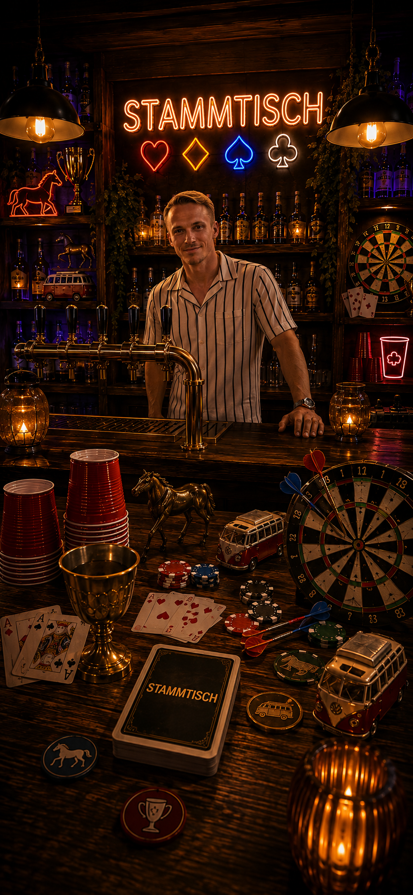
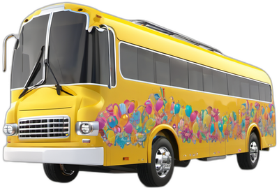

<!DOCTYPE html>
<html lang="de">
<head>
<meta charset="UTF-8">
<meta name="viewport" content="width=device-width, initial-scale=1.0, maximum-scale=1.0, viewport-fit=cover">
<title>Stammtisch</title>

<!-- PWA: macht die Seite auf dem Handy installierbar & vollbildfähig -->
<link rel="manifest" href="manifest.json">
<meta name="theme-color" content="#1A0E2E">
<meta name="apple-mobile-web-app-capable" content="yes">
<meta name="mobile-web-app-capable" content="yes">
<meta name="apple-mobile-web-app-status-bar-style" content="black-translucent">
<meta name="apple-mobile-web-app-title" content="Stammtisch">
<link rel="apple-touch-icon" href="apple-touch-icon.png">
<link rel="icon" href="icon-192.png">

<style>
@import url('https://fonts.googleapis.com/css2?family=Bebas+Neue&family=Inter:wght@400;500;600;700&family=JetBrains+Mono:wght@500;700&display=swap');

:root{
  --ink:#1A0E2E;
  --panel:#2A1749;
  --panel-2:#37205E;
  --gold:#FFB627;
  --gold-dim:#C98A1D;
  --wine:#FF4D5E;
  --cream:#FFF6E9;
  --ash:#B8A6D9;
  --line:#4A2E73;
  --party:#FF2E93;
  --party-dim:#C21F6E;
  --teal:#2DE8D0;
}
*{box-sizing:border-box; -webkit-tap-highlight-color:transparent;}
html,body{margin:0;padding:0;height:100%;overflow:hidden;overscroll-behavior:none;}
/* Grundfarbe auf html: der Bereich unter der gemessenen --app-vh-Höhe
   (untere Safe-Area / Home-Indicator-Zone) wird von body nicht mehr
   abgedeckt — ohne diese Farbe schiene dort ein andersfarbiges Rechteck
   durch. --ink matcht den App-Hintergrund, also nahtlos. */
html{background:var(--ink);}
body{
  background:
    radial-gradient(circle at 15% 8%, rgba(255,46,147,0.35) 0%, transparent 38%),
    radial-gradient(circle at 88% 12%, rgba(255,182,39,0.28) 0%, transparent 40%),
    radial-gradient(circle at 25% 92%, rgba(45,232,208,0.22) 0%, transparent 42%),
    radial-gradient(circle at 90% 85%, rgba(178,60,255,0.28) 0%, transparent 45%),
    var(--ink);
  /* --app-vh: siehe Script am Seitenende (setAppVH) — echte, per JS
     gemessene Viewport-Höhe statt dem auf iOS unzuverlässigen 100dvh.
     Fallback 100dvh greift nur kurz vor dem ersten Skript-Durchlauf. */
  height:var(--app-vh, 100dvh);
  font-family:'Inter',sans-serif;
  color:var(--cream);
  display:flex;
  align-items:center;
  justify-content:center;
}
#app{
  width:100%;
  max-width:460px;
  height:var(--app-vh, 100dvh);
  max-height:var(--app-vh, 100dvh);
  background:linear-gradient(180deg, rgba(0,0,0,0) 0%, rgba(0,0,0,0.15) 100%);
  position:relative;
  overflow-y:auto;
  overscroll-behavior:contain;
  -webkit-overflow-scrolling:touch;
  padding-top:calc(env(safe-area-inset-top) + 8px);
  padding-bottom:24px;
}
/* The app fills the screen edge-to-edge and the page itself never scrolls or
   bounces. #app is the only scrollable box, and only as a safety net for
   content that genuinely can't fit (e.g. a big player roster) — most screens
   fit fully within the viewport with nothing to scroll at all. */
.display{font-family:'Bebas Neue',sans-serif; letter-spacing:0.03em;}
.mono{font-family:'JetBrains Mono',monospace;}

/* Top bar */
.topbar{
  display:flex; align-items:center; gap:12px;
  padding:18px 20px 10px 20px;
}
.backbtn{
  width:38px; height:38px; border-radius:50%;
  background:var(--panel); border:1px solid var(--line);
  color:var(--cream); display:flex; align-items:center; justify-content:center;
  font-size:18px; cursor:pointer; flex-shrink:0;
}
.backbtn:active{background:var(--panel-2);}
.helpbtn{
  width:34px; height:34px; border-radius:50%; margin-left:auto; flex-shrink:0;
  background:var(--panel); border:1px solid var(--gold-dim);
  color:var(--gold); display:flex; align-items:center; justify-content:center;
  font-family:'Bebas Neue',sans-serif; font-size:17px; cursor:pointer;
}
.helpbtn:active{background:var(--panel-2);}
.topbar h1{
  font-family:'Bebas Neue',sans-serif;
  font-size:26px; letter-spacing:0.04em; margin:0; color:var(--cream);
}
.topbar .sub{font-size:11px; color:var(--ash); margin-top:-2px;}

.helpwrap{
  position:fixed; inset:0; z-index:150;
  background:rgba(10,8,5,0.72);
  display:flex; align-items:center; justify-content:center;
  padding:24px;
}
.helpcard{
  background:linear-gradient(180deg, var(--panel) 0%, var(--panel-2) 100%);
  border:1px solid var(--gold-dim); border-radius:18px;
  padding:20px; max-width:380px; width:100%; max-height:82vh; overflow-y:auto;
  box-shadow:0 24px 60px rgba(0,0,0,0.6);
  animation:flipin .25s ease;
}
.kcrules{ display:flex; flex-direction:column; gap:6px; margin-bottom:14px; }
.kcrule{ display:flex; gap:10px; align-items:flex-start; }
.kcr-rank{ flex-shrink:0; width:30px; height:30px; border-radius:8px; background:var(--ink); border:1px solid var(--gold-dim); color:var(--gold); font-family:'Bebas Neue',sans-serif; font-size:16px; display:flex; align-items:center; justify-content:center; }
.kcr-txt{ font-size:12.5px; line-height:1.4; color:var(--cream); }
.kcr-txt b{ color:var(--gold); }
.helpheader{ display:flex; align-items:center; justify-content:space-between; margin-bottom:14px; }
.helplist{ margin:0 0 16px 0; padding-left:20px; display:flex; flex-direction:column; gap:10px; }
.helplist li{ font-size:13.5px; line-height:1.5; color:var(--cream); }

/* Home */
.hero{
  padding:34px 24px 10px 24px; text-align:center;
  position:relative;
}
.hero::before{
  content:"";
  position:absolute; top:-20px; left:50%; transform:translateX(-50%);
  width:320px; height:220px;
  background:radial-gradient(ellipse, rgba(255,46,147,0.3) 0%, rgba(255,182,39,0.22) 40%, rgba(45,232,208,0.12) 65%, transparent 80%);
  pointer-events:none; z-index:0;
}
.hero .cupwrap{width:76px;margin:0 auto 14px auto; position:relative; z-index:1;}
.hero h1{
  font-size:clamp(32px, 10.2vw, 50px); margin:0; line-height:0.95;
  background:linear-gradient(120deg, var(--cream) 0%, var(--gold) 55%, var(--party) 110%);
  -webkit-background-clip:text; background-clip:text; color:transparent;
  white-space:nowrap; position:relative; z-index:1;
}
.hero p{color:var(--ash); font-size:13px; margin:10px 0 0 0; letter-spacing:0.02em; position:relative; z-index:1;}
.hero .sparkle{
  position:absolute; font-size:16px; opacity:0.7; z-index:1; pointer-events:none;
  animation:sparkletwinkle 2.4s ease-in-out infinite;
}
@keyframes sparkletwinkle{ 0%,100%{opacity:0.25; transform:scale(0.85);} 50%{opacity:0.85; transform:scale(1.1);} }

.gamelist{padding:18px 20px; display:flex; flex-direction:column; gap:14px;}
.rosterbar{
  display:flex; align-items:center; gap:10px; cursor:pointer;
  background:var(--panel); border:1px solid var(--line); border-radius:14px;
  padding:12px 14px; margin-bottom:2px;
}
.rosterbar-names{ flex:1; font-size:13px; color:var(--cream); overflow:hidden; text-overflow:ellipsis; white-space:nowrap; }
.rosterbar-edit{ font-size:12px; color:var(--gold); flex-shrink:0; }
.gamecard{
  background:linear-gradient(155deg, var(--panel) 0%, var(--panel-2) 100%);
  border:1px solid var(--line);
  border-radius:18px;
  padding:18px;
  display:flex; align-items:center; gap:16px;
  cursor:pointer;
  position:relative;
  overflow:hidden;
  transition:transform .15s cubic-bezier(.34,1.56,.64,1);
}
.gamecard:active{transform:scale(0.97) rotate(-0.4deg);}
.gamecard .icon{
  width:52px; height:52px; border-radius:14px;
  display:flex; align-items:center; justify-content:center;
  font-size:26px; flex-shrink:0;
  background:rgba(217,164,65,0.1); border:1px solid rgba(217,164,65,0.25);
}
.gamecard.pf .icon{ background:rgba(51,217,193,0.12); border-color:rgba(51,217,193,0.3); }
.gamecard.bf .icon{ background:rgba(255,62,127,0.12); border-color:rgba(255,62,127,0.32); }
.gamecard .txt h3{margin:0 0 3px 0; font-family:'Bebas Neue',sans-serif; font-size:22px; letter-spacing:0.03em;}
.gamecard .txt p{margin:0; font-size:12.5px; color:var(--ash); line-height:1.4;}
.gamecard .arrow{margin-left:auto; color:var(--gold); font-size:18px; flex-shrink:0;}
.gamecard.soon{opacity:0.45; cursor:default;}
.gamecard.soon:active{transform:none;}
.tag{
  position:absolute; top:10px; right:10px;
  font-size:9px; letter-spacing:0.08em; text-transform:uppercase;
  background:var(--party); color:var(--cream); padding:3px 8px; border-radius:20px;
  transform:rotate(4deg);
  box-shadow:0 3px 8px rgba(255,62,127,0.35);
}

.footnote{
  text-align:center; color:var(--ash); font-size:11px; padding:20px 30px 0 30px; line-height:1.6;
}

/* Buttons */
.btn{
  border:none; border-radius:14px; padding:15px 20px;
  font-family:'Inter',sans-serif; font-weight:700; font-size:15px;
  cursor:pointer; width:100%;
  display:flex; align-items:center; justify-content:center; gap:8px;
  transition:transform .12s cubic-bezier(.34,1.56,.64,1);
}
.btn:active{transform:scale(0.96) rotate(-0.5deg);}
.btn-primary{background:linear-gradient(135deg, #FFD166, var(--gold)); color:#2E1500; box-shadow:0 4px 14px rgba(255,182,39,0.35);}
.btn-ghost{background:var(--panel); color:var(--cream); border:1px solid var(--line);}
.btn-wine{background:linear-gradient(135deg, #FF7A87, var(--wine)); color:#3A0008; box-shadow:0 4px 14px rgba(255,77,94,0.35);}
.btn-sm{padding:10px 14px; font-size:13px; border-radius:10px; width:auto;}
.btn:disabled{opacity:0.35; cursor:default;}

.section{padding:0 20px;}
.card-box{
  background:linear-gradient(180deg, var(--panel) 0%, var(--panel-2) 100%);
  border:1px solid var(--line); border-radius:16px;
  padding:16px; margin-bottom:14px;
  box-shadow:inset 0 1px 0 rgba(255,255,255,0.04), 0 8px 20px rgba(0,0,0,0.25);
}
.label{font-size:11px; text-transform:uppercase; letter-spacing:0.08em; color:var(--ash); margin-bottom:8px;}

input[type=text], input[type=number]{
  width:100%; background:var(--ink); border:1px solid var(--line); border-radius:10px;
  padding:12px 14px; color:var(--cream); font-family:'Inter',sans-serif; font-size:14px;
}
input[type=text]:focus, input[type=number]:focus{outline:1px solid var(--gold);}

.chiprow{display:flex; flex-wrap:wrap; gap:8px;}
.chip{
  background:var(--panel-2); border:1px solid var(--line); color:var(--cream);
  padding:7px 13px; border-radius:20px; font-size:13px; display:flex; align-items:center; gap:6px;
  cursor:pointer;
}
.chip.active{background:rgba(217,164,65,0.15); border-color:var(--gold); color:var(--gold);}
.chip .x{color:var(--ash); cursor:pointer; font-weight:700;}
.chip-sm{ padding:6px 10px; font-size:15px; }

/* Pferderennen bet rows (setup + always-visible overview) */
.betrows{ display:flex; flex-direction:column; gap:12px; }
.betrow-setup{
  display:flex; align-items:center; gap:10px; flex-wrap:wrap;
  background:var(--panel-2); border:1px solid var(--line); border-radius:12px; padding:10px;
}
.betrow-name{ font-weight:700; font-size:13.5px; min-width:60px; }
.stepper{
  display:flex; align-items:center; gap:8px; margin-left:auto;
  background:var(--ink); border:1px solid var(--line); border-radius:10px; padding:4px 8px;
}
.stepper.dim{ opacity:0.35; }
.stepper button{
  width:24px; height:24px; border-radius:6px; border:none; background:var(--panel);
  color:var(--cream); font-size:15px; cursor:pointer; font-weight:700;
}
.stepper span{ font-family:'JetBrains Mono',monospace; min-width:18px; text-align:center; font-size:13px; }

.betoverview{ display:flex; flex-direction:column; gap:10px; }
.betgroup-head{ font-family:'Bebas Neue',sans-serif; font-size:15px; letter-spacing:0.02em; margin-bottom:4px; }
.betgroup-head.red{ color:var(--wine); }
.betgroup-head.black{ color:var(--cream); }
.betrow{ display:flex; justify-content:space-between; font-size:13px; padding:3px 0; color:var(--cream); }

/* Playing card visual */
.playcard{
  width:150px; height:210px; border-radius:16px;
  background:linear-gradient(160deg,#FBF3E3,var(--cream));
  display:flex; flex-direction:column; align-items:center; justify-content:center;
  margin:0 auto; box-shadow:0 12px 30px rgba(0,0,0,0.45), inset 0 0 0 2px rgba(255,182,39,0.45), inset 0 0 0 4px rgba(0,0,0,0.05);
  position:relative;
}
.playcard .rank{font-family:'Bebas Neue',sans-serif; font-size:56px; line-height:1;}
.playcard .suit{font-size:38px; margin-top:6px;}
.playcard .corner{position:absolute; top:10px; left:12px; font-family:'Bebas Neue',sans-serif; font-size:16px; text-align:left; line-height:1;}
.playcard .corner.br{top:auto; bottom:10px; right:12px; left:auto; text-align:right; transform:rotate(180deg);}
.red{color:var(--wine);}
.black{color:#241835;}

.card-back{
  width:150px; height:210px; border-radius:16px; margin:0 auto; cursor:pointer;
  background:
    repeating-linear-gradient(45deg, #1F1238 0px, #1F1238 6px, #170A29 6px, #170A29 12px);
  border:3px solid var(--gold-dim);
  display:flex; align-items:center; justify-content:center;
  box-shadow:0 12px 30px rgba(0,0,0,0.45);
}
.card-back .glyph{font-size:40px; color:var(--gold); opacity:0.85;}

/* Ring of Fire layout. Größe bewusst NICHT mehr fest (280px) + per
   transform:scale() gestaucht (alte Landscape-Lösung) — stattdessen echte
   responsive Größe: min(88% der Spalte, 64dvh), damit der Ring in beiden
   Ausrichtungen tatsächlich dominant ist (~2/3-Faustregel) statt nur
   herunterskaliert zu werden. .ringslots-Kinder (siehe kcRingSVG()) und
   .ringcup sind deshalb in % statt px positioniert/dimensioniert — sie
   skalieren dadurch automatisch mit der Boxgröße mit. */
.ringwrap{
  position:relative; width:min(88%, 82dvh); aspect-ratio:1; margin:4px auto 0 auto;
}
.ringglow{
  position:absolute; inset:0; border-radius:50%; pointer-events:none;
  /* warme Glut-Töne (Orange/Rot) statt Gold/Pink — echte Ring-of-Fire-Stimmung */
  background:radial-gradient(circle at 50% 50%, rgba(255,150,40,0.30) 0%, rgba(230,70,30,0.10) 45%, rgba(217,164,65,0.05) 60%, transparent 72%);
  animation:glowpulse 3.2s ease-in-out infinite;
}
@keyframes glowpulse{ 0%,100%{opacity:0.55; transform:scale(0.97);} 50%{opacity:1; transform:scale(1.03);} }
.ringslots{ position:absolute; inset:0; }
.ringslot{
  position:absolute; border-radius:3px;
  background:repeating-linear-gradient(45deg,#1F1238 0 4px,#170A29 4px 8px);
  border:1.4px solid var(--gold-dim);
  cursor:pointer;
  box-shadow:0 2px 5px rgba(0,0,0,0.35);
  transition:transform .12s ease;
}
.ringslot:active{ filter:brightness(1.4); }
.ringslot.picked{ filter:brightness(1.85); border-color:var(--gold); box-shadow:0 0 16px 4px rgba(255,182,39,0.95); z-index:5; }
.ringslot.safe{ border-color:var(--gold); box-shadow:0 0 7px rgba(217,164,65,0.85), 0 2px 5px rgba(0,0,0,0.35); }
.ringcup{
  position:absolute; left:50%; top:50%; width:34.3%;
  transform:translate(-50%,-50%); z-index:2;
}
.ringcup svg{ width:100%; display:block; filter:drop-shadow(0 6px 10px rgba(0,0,0,0.5)); }
.ringhint{
  text-align:center; font-size:11.5px; color:var(--ash); margin-top:12px;
  padding:0 22px; line-height:1.5;
}
.effectrow{ display:flex; flex-wrap:wrap; gap:10px; }
.effectchip{
  display:flex; align-items:center; gap:8px;
  background:var(--panel-2); border:1px solid var(--line); border-radius:10px;
  padding:6px 10px 6px 6px;
}
.effectcard{
  width:30px; height:40px; border-radius:5px; background:var(--cream);
  display:flex; flex-direction:column; align-items:center; justify-content:center;
  font-family:'Bebas Neue',sans-serif; font-size:13px; line-height:1.1; flex-shrink:0;
}
.effecttxt{ font-size:12px; line-height:1.4; }

/* Cross-game big-card reveal burst */
.burstwrap{
  position:fixed; inset:0; z-index:200;
  display:flex; align-items:center; justify-content:center;
  pointer-events:none;
}
.burstbackdrop{
  position:absolute; inset:0; background:rgba(10,8,5,0.6);
  animation:burstfade 0.95s ease forwards;
}
@keyframes burstfade{ 0%{opacity:0;} 14%{opacity:1;} 74%{opacity:1;} 100%{opacity:0;} }
.burstcard{
  position:relative; z-index:1;
  width:190px; height:266px; border-radius:18px;
  background:linear-gradient(160deg,#FBF3E3,var(--cream));
  display:flex; flex-direction:column; align-items:center; justify-content:center;
  box-shadow:0 20px 50px rgba(0,0,0,0.55), inset 0 0 0 1px rgba(0,0,0,0.06);
  animation:cardburst 0.95s cubic-bezier(.22,.85,.25,1) forwards;
}
.burstcard .rank{font-family:'Bebas Neue',sans-serif; font-size:64px; line-height:1;}
.burstcard .suit{font-size:46px; margin-top:8px;}
.burstcard .corner{position:absolute; top:14px; left:16px; font-family:'Bebas Neue',sans-serif; font-size:20px; text-align:left; line-height:1.05;}
.burstcard .corner.br{top:auto; bottom:14px; right:16px; left:auto; text-align:right; transform:rotate(180deg);}
@keyframes cardburst{
  0%{ transform:scale(0.3); opacity:0; }
  16%{ transform:scale(1.07); opacity:1; }
  26%{ transform:scale(1); opacity:1; }
  76%{ transform:scale(1); opacity:1; }
  100%{ transform:scale(0.28); opacity:0; }
}

/* Cup */
.cupmeter{display:flex; flex-direction:column; align-items:center; gap:6px;}
.cupwrap svg{width:100%; height:auto; display:block;}

.kingdots{display:flex; gap:8px; justify-content:center; margin-top:10px; margin-bottom:10px;}
.kdot{width:12px;height:12px;border-radius:50%; background:var(--panel-2); border:1px solid var(--line); transition:background .2s, border-color .2s;}
.kdot.on{background:var(--gold); border-color:var(--gold);}
.kdot.active{outline:2px solid rgba(217,164,65,0.5); outline-offset:2px;}

.ruletext{
  text-align:center; font-size:17px; font-weight:600; line-height:1.5; padding:10px 6px 4px 6px;
}
.rulesub{text-align:center; font-size:12.5px; color:var(--ash); padding-bottom:6px;}

.deckcount{text-align:center; color:var(--ash); font-size:12px; margin-top:4px;}
/* Kings-Cup-Ambiente: dunkler Spieltisch mit warmer Glut in der Mitte.
   Zusätzlich eine dezente ComfyUI-Glut-/Funken-Textur (kc-embers.jpg) als
   leise Untergrund-Ebene hinter dem Ring, niedrige Deckkraft — reine
   Atmosphäre, stört Lesbarkeit von Karten/Regeln nicht. */
.kc-stage::before{
  content:''; position:absolute; left:50%; top:50%; width:60%; height:60%;
  transform:translate(-50%,-50%); border-radius:50%; z-index:0; pointer-events:none;
  background:
    radial-gradient(circle, rgba(255,170,50,0.32) 0%, rgba(150,60,15,0.18) 42%, rgba(8,5,16,0.72) 74%, transparent 100%),
    url('assets/kc-embers.jpg') center/cover;
  background-blend-mode:screen;
  opacity:0.9;
}
.kc-stage .ringcup{ filter:drop-shadow(0 0 22px rgba(255,182,39,0.55)); }
/* Kings-Cup-Ambiente-Hintergrund (Rahmen, Blätter, Strahlen, Podest) plus
   warme Glut-Lichtreflexe an den Bildschirmrändern (oben rechts / unten
   links), damit der ganze Screen — nicht nur der Ring — nach Ring-of-Fire
   aussieht, ohne die Kartenlesbarkeit in der Bildmitte zu beeinträchtigen.
   Bugfix, Teil 1: min-height:100dvh (statt 100%) ignorierte das eigene
   Padding von #app — min-height:100% füllt die Content-Box von #app aus
   (gleiches Prinzip wie bei Cardpong).
   Bugfix, Teil 2: #app selbst hat oben/unten Padding (Safe-Area + 24px) —
   dieses Padding liegt AUSSERHALB der Box jedes Kindelements und kann von
   keinem Kind-Hintergrund abgedeckt werden, gleich wie hoch .kc-screen ist.
   Genau dort schimmerte am unteren Rand (dem tatsächlichen Scroll-Ende)
   der App-Grundhintergrund (dunkles Magenta/Lila) durch. Fix: negative
   Margin + gleich große Padding lässt .kc-screen bewusst in das
   #app-Padding hineinbluten, sein eigener Hintergrund deckt es dann mit ab. */
.kc-screen{
  position:relative; min-height:100%;
  margin: calc(-1 * (env(safe-area-inset-top) + 8px)) 0 -24px 0;
  padding-top: calc(env(safe-area-inset-top) + 8px);
  padding-bottom: 24px;
}
.kc-screen::before{ content:''; position:absolute; inset:0; z-index:0; pointer-events:none;
  background:
    radial-gradient(60% 40% at 92% 4%, rgba(255,140,40,0.22) 0%, transparent 68%),
    radial-gradient(55% 38% at 4% 96%, rgba(255,90,30,0.18) 0%, transparent 68%),
    #160a24 url('assets/kc-bg.jpg') center top/cover no-repeat; }
.kc-screen > *{ position:relative; z-index:1; }
/* Beleuchteter Kartenrahmen statt neutralem Rand: nur innerhalb Kings Cup
   (Busfahrer nutzt dieselbe .playcard-Komponente unverändert neutral). */
.kc-screen .playcard{
  box-shadow:
    0 12px 30px rgba(0,0,0,0.45),
    inset 0 0 0 2px rgba(255,150,50,0.55), inset 0 0 0 4px rgba(0,0,0,0.05),
    0 0 24px rgba(255,140,40,0.35), 0 0 46px rgba(255,90,30,0.16);
}

/* Kings-Cup-Layout: Ring (Kelch-Kreis) ist das dominante Element in BEIDEN
   Ausrichtungen — Faustregel ~2/3 des verfügbaren Platzes. Hochformat:
   Ring oben (groß), gezogene Karte + Regeltext darunter (kleiner). Quer-
   format (siehe Media-Query weiter unten): Ring links (~64% Breite),
   Karte + Regeltext/Effekte als schmale Seitenspalte rechts — nie
   umgekehrt, und die Seitenspalte scrollt notfalls für sich, damit der
   Ring selbst nie schrumpft oder der Screen insgesamt scrollen muss.
   Kein separater Verlauf mehr (auf Wunsch entfernt — unnötige Fläche). */
.kc-layout{ display:flex; flex-direction:column; align-items:center; width:100%; }
.kc-ringcol{ display:flex; flex-direction:column; align-items:center; width:100%; flex:0 0 auto; }
.kc-sidecol{ display:flex; flex-direction:column; align-items:center; width:100%; }

/* Timer */
.timerbox{
  display:flex; align-items:center; justify-content:center; gap:14px;
  background:var(--panel); border:1px solid var(--line); border-radius:16px; padding:16px;
  transition:background .3s, border-color .3s;
}
.timerbox .time{font-family:'JetBrains Mono',monospace; font-size:30px; color:var(--gold); font-weight:700; transition:color .3s;}
.timerbox.pressure-mid{ border-color:rgba(217,164,65,0.5); background:linear-gradient(180deg, rgba(217,164,65,0.08), var(--panel)); }
.timerbox.pressure-mid .time{ color:#E8B85C; }
.timerbox.pressure-high{ border-color:rgba(166,64,63,0.55); background:linear-gradient(180deg, rgba(166,64,63,0.14), var(--panel)); animation:pulse 1.4s ease infinite; }
.timerbox.pressure-high .time{ color:#E28584; }

/* Race track */
.hurdlebar{ display:flex; gap:6px; padding-left:42px; margin-bottom:10px; }
.hurdle{
  flex:1; max-width:26px; height:30px; border-radius:4px;
  display:flex; align-items:center; justify-content:center;
  font-family:'Bebas Neue',sans-serif; font-size:14px;
}
.hurdle.hidden{
  background:repeating-linear-gradient(45deg,#1F1238 0 4px,#170A29 4px 8px);
  border:1.2px solid var(--gold-dim);
}
.hurdle.shown{ background:var(--cream); animation:flipin .35s ease; }
.hurdle.shown.red{ color:var(--wine); }
.hurdle.shown.black{ color:#241835; }

.track{display:flex; flex-direction:column; gap:12px; margin-top:2px;}
.lane{display:flex; align-items:center; gap:8px;}
.lane .horse-tag{
  width:34px; height:34px; border-radius:8px; display:flex; align-items:center; justify-content:center;
  font-size:17px; flex-shrink:0; font-weight:700;
}
.lane .laneline{
  flex:1; position:relative; height:34px; border-radius:8px; overflow:hidden;
  border:1px solid var(--line);
  background:
    repeating-linear-gradient(90deg, rgba(255,255,255,0.035) 0 1px, transparent 1px 20px),
    linear-gradient(180deg, #2B2114, #211A0F);
}
.lane .runner{
  position:absolute; top:3px; height:28px; width:28px; border-radius:50%;
  display:flex; align-items:center; justify-content:center; font-size:17px;
  transition:left .5s cubic-bezier(.2,.9,.3,1.2);
  box-shadow:0 3px 8px rgba(0,0,0,0.55);
  z-index:2;
}
.lane .dust{
  position:absolute; top:6px; height:22px; width:36px; border-radius:50%;
  filter:blur(7px); opacity:0.45; transform:translateX(-60%);
  transition:left .5s cubic-bezier(.2,.9,.3,1.2);
  z-index:1;
}
.lane .finish{
  position:absolute; right:0; top:0; bottom:0; width:6px;
  background:repeating-conic-gradient(#EDE6DA 0% 25%, #170A29 0% 50%) 0 0/7px 7px;
  box-shadow:0 0 8px rgba(255,62,127,0.5);
  z-index:1;
}
.suit-red{background:var(--wine); color:#fff;}
.suit-black{background:#241835; color:var(--cream); border:1px solid #5A3D7A;}

.tracklog{
  margin-top:12px; max-height:90px; overflow-y:auto; font-size:12px; color:var(--ash);
  background:var(--ink); border-radius:10px; padding:8px 10px; border:1px solid var(--line);
}
.tracklog div{padding:2px 0;}

.winnerbox{ text-align:center; border-color:var(--gold); margin-top:14px; position:relative; overflow:hidden; }
.winnerribbon{
  font-size:11px; letter-spacing:0.1em; text-transform:uppercase; color:var(--gold);
  background:rgba(217,164,65,0.12); border:1px solid rgba(217,164,65,0.3);
  display:inline-block; padding:4px 12px; border-radius:20px; margin-bottom:10px;
}
.winnerhorse{ font-size:48px; margin-bottom:2px; filter:drop-shadow(0 6px 10px rgba(0,0,0,0.5)); }

.confetti-wrap{ position:absolute; inset:0; overflow:hidden; pointer-events:none; z-index:1; }
.confetti-piece{
  position:absolute; top:-14px; width:7px; height:13px; border-radius:2px; opacity:0.95;
  animation-name:confettiFall; animation-timing-function:cubic-bezier(.35,.55,.65,1); animation-fill-mode:forwards;
}
@keyframes confettiFall{
  0%{ transform:translateY(0) translateX(0) rotate(0deg); opacity:1; }
  100%{ transform:translateY(260px) translateX(var(--drift)) rotate(540deg); opacity:0; }
}
.winpop{ position:relative; z-index:2; animation:winpopKF 0.55s cubic-bezier(.2,1.4,.4,1); }
@keyframes winpopKF{
  0%{ transform:scale(0.4) rotate(-8deg); opacity:0; }
  60%{ transform:scale(1.12) rotate(2deg); opacity:1; }
  100%{ transform:scale(1) rotate(0deg); opacity:1; }
}

/* Players list */
.playerrow{
  display:flex; align-items:center; gap:10px; background:var(--panel-2); border:1px solid var(--line);
  border-radius:12px; padding:10px 12px; margin-bottom:8px;
}
.playerrow .pname{flex:1; font-weight:600;}
.playerrow .pmeta{font-size:11px; color:var(--ash);}
.playerrow .remove{color:var(--ash); cursor:pointer; font-size:16px; padding:2px 6px;}

.turnbanner{
  text-align:center; background:linear-gradient(180deg, rgba(217,164,65,0.14), rgba(217,164,65,0.04));
  border:1px solid rgba(217,164,65,0.3); border-radius:14px; padding:10px; margin-bottom:14px;
}
.turnbanner .who{font-family:'Bebas Neue',sans-serif; font-size:24px; letter-spacing:0.03em; color:var(--gold);}
.turnbanner .what{font-size:12px; color:var(--ash);}

.qtext{text-align:center; font-size:15px; font-weight:700; margin-bottom:14px;}
.optrow{display:flex; gap:10px;}
.optrow .btn{flex:1;}

.resultbadge{
  text-align:center; font-family:'Bebas Neue',sans-serif; font-size:22px; letter-spacing:0.03em; padding:8px;
  border-radius:10px; margin:10px 0;
}
.res-right{background:rgba(217,164,65,0.12); color:var(--gold); border:1px solid rgba(217,164,65,0.3);}
.res-wrong{background:rgba(166,64,63,0.16); color:#E28584; border:1px solid rgba(166,64,63,0.4);}

.pyramid{display:flex; flex-direction:column-reverse; align-items:center; gap:8px; margin:12px 0;}
.pyrow{display:flex; gap:8px;}
.pyc{
  width:52px; height:74px; border-radius:8px; display:flex; flex-direction:column; align-items:center; justify-content:center;
  font-family:'Bebas Neue',sans-serif; cursor:pointer; position:relative;
}
/* Kartenrückseite Busfahrer: ComfyUI-generiertes Bus-Motiv (Gold-Linienbus
   auf dunklem Lila, passend zum App-Stil) als Bild-Ebene; die dunkle
   CSS-Gradient-Ebene darunter bleibt als Fallback, falls das PNG mal
   nicht lädt (mehrschichtiger background-Wert -> fehlende Bild-Ebene
   fällt einfach durch auf die Gradient-Ebene). */
.pyc.hidden{
  background:
    linear-gradient(0deg, rgba(21,12,34,0.3), rgba(21,12,34,0.3)),
    url('assets/bf-cardback-bus.png') center/cover,
    linear-gradient(160deg,#241634,#150c22 60%,#0d0718);
  border:2px solid var(--gold-dim);
}
.pyc.shown{background:var(--cream); border:2px solid transparent;}
.pyc .lvl{position:absolute; top:-8px; right:-6px; background:var(--party); color:#fff; font-size:9px; font-family:'Inter'; font-weight:700; width:18px; height:18px; border-radius:50%; display:flex; align-items:center; justify-content:center; box-shadow:0 2px 6px rgba(255,62,127,0.4);}

.handgrid{display:flex; gap:8px; flex-wrap:wrap; justify-content:center; margin-top:10px;}
.handc{
  width:40px; height:56px; border-radius:6px; display:flex; flex-direction:column; align-items:center; justify-content:center;
  font-family:'Bebas Neue',sans-serif; font-size:16px; background:var(--cream); position:relative;
}
.handc.used{opacity:0.25;}
.handc.lastcard{ box-shadow:0 0 0 2px var(--gold), 0 0 10px rgba(255,182,39,0.5); }
.handc.facedown{
  background:repeating-linear-gradient(45deg,#1F1238 0 3px,#170A29 3px 6px);
  border:1.2px solid var(--gold-dim);
}

.seatgrid{ display:flex; flex-direction:column; gap:10px; }
.seat{
  background:var(--ink); border:1px solid var(--line); border-radius:12px;
  padding:10px; display:flex; flex-direction:column; align-items:center; gap:2px;
  transition:border-color .2s, background .2s;
}
.seat-active{ border-color:var(--gold); background:linear-gradient(180deg, rgba(217,164,65,0.1), var(--ink)); }
.seat-name{ font-size:12.5px; font-weight:700; color:var(--cream); margin-bottom:2px; }
.seat-active .seat-name{ color:var(--gold); }

.smalltable{width:100%; font-size:13px; border-collapse:collapse;}
.smalltable td{padding:7px 4px; border-bottom:1px solid var(--line);}
.smalltable td:last-child{text-align:right; color:var(--gold); font-weight:700;}

.divider-cup{
  display:flex; align-items:center; gap:10px; color:var(--gold-dim); margin:18px 0; padding:0 20px;
}
.divider-cup::before, .divider-cup::after{content:""; flex:1; height:1px; background:var(--line);}

.centerinfo{text-align:center; color:var(--ash); font-size:13px; padding:10px 0;}
.warnbox{
  background:rgba(166,64,63,0.14); border:1px solid rgba(166,64,63,0.4);
  color:#E28584; font-size:12.5px; line-height:1.5; padding:10px 14px;
  border-radius:12px; margin-bottom:14px; text-align:center;
}

@keyframes flipin{ from{transform:rotateY(90deg); opacity:0;} to{transform:rotateY(0deg); opacity:1;} }
.flip{animation:flipin .35s ease;}
@keyframes pulse{0%,100%{opacity:1} 50%{opacity:0.5}}
.pulse{animation:pulse 1.4s ease infinite;}

/* Splash-Style: Kacheln schweben beim Öffnen sanft gestaffelt ein */
@keyframes riseIn{ from{opacity:0; transform:translateY(16px) scale(0.98);} to{opacity:1; transform:translateY(0) scale(1);} }
.gamelist .gamecard{ animation:riseIn .42s cubic-bezier(.22,.85,.25,1) both; }
.gamelist .gamecard:nth-child(1){ animation-delay:.02s; }
.gamelist .gamecard:nth-child(2){ animation-delay:.08s; }
.gamelist .gamecard:nth-child(3){ animation-delay:.14s; }
.gamelist .gamecard:nth-child(4){ animation-delay:.20s; }
@media (prefers-reduced-motion:reduce){ .gamelist .gamecard{ animation:none; } }

/* ===========================================================
   SPLASH-STYLE HOME + PER-GAME SETUP
=========================================================== */
.spacer{ flex:1; }

/* Home top bar */
.homebar{ display:flex; align-items:center; gap:10px; padding:16px 20px 6px 20px; }
.homebar .wordmark{
  font-family:'Bebas Neue',sans-serif; font-size:30px; letter-spacing:0.04em;
  background:linear-gradient(120deg, var(--cream), var(--gold) 60%, var(--party));
  -webkit-background-clip:text; background-clip:text; color:transparent;
}
.iconbtn{
  width:42px; height:42px; border-radius:50%; position:relative;
  background:var(--panel); border:1px solid var(--line);
  display:flex; align-items:center; justify-content:center; font-size:18px;
  color:var(--cream); cursor:pointer; flex-shrink:0;
}
.iconbtn:active{ background:var(--panel-2); }
.iconbtn .badge{
  position:absolute; top:-5px; right:-5px; min-width:19px; height:19px; padding:0 4px;
  background:var(--party); color:#fff; border-radius:10px; font-size:11px; font-weight:700;
  display:flex; align-items:center; justify-content:center; border:2px solid var(--ink);
}

/* CSS cover art */
.cover{
  position:relative; border-radius:22px; overflow:hidden;
  display:flex; flex-direction:column; justify-content:flex-end;
  cursor:pointer; isolation:isolate;
  box-shadow:0 12px 30px rgba(0,0,0,0.42), inset 0 1px 0 rgba(255,255,255,0.06);
  transition:transform .14s cubic-bezier(.34,1.56,.64,1);
}
.cover:active{ transform:scale(0.98); }
.cover.locked{ cursor:default; }
.cover.locked:active{ transform:none; }
.cover .glyph{
  position:absolute; right:-8px; top:-14px; font-size:120px; line-height:1;
  opacity:0.22; transform:rotate(-8deg); z-index:0; pointer-events:none;
  filter:drop-shadow(0 4px 8px rgba(0,0,0,0.4));
}
.cover .cover-body{ position:relative; z-index:1; padding:16px; }
.cover .cover-title{
  font-family:'Bebas Neue',sans-serif; font-size:30px; line-height:0.95; letter-spacing:0.02em; color:#fff;
  text-shadow:0 2px 0 rgba(0,0,0,0.35), 0 6px 16px rgba(0,0,0,0.45);
}
.cover .cover-desc{ font-size:12.5px; color:rgba(255,255,255,0.85); margin-top:4px; line-height:1.35; }
.cover-kc{ background:linear-gradient(to top, rgba(10,8,20,0.85), rgba(10,8,20,0.15) 55%, transparent), url('assets/cover-kc.png') center/cover; }
.cover-pf{ background:linear-gradient(to top, rgba(10,8,20,0.85), rgba(10,8,20,0.15) 55%, transparent), url('assets/cover-pf.png') center/cover; }
.cover-bf{ background:linear-gradient(to top, rgba(10,8,20,0.85), rgba(10,8,20,0.15) 55%, transparent), url('assets/cover-bf.png') center/cover; }
.cover-kc .glyph, .cover-pf .glyph, .cover-bf .glyph{ display:none; }
.cover-soon{ background:linear-gradient(150deg,#241835,#1A0E2E); border:1px dashed var(--line); }

/* Hero carousel */
.hero-carousel{ padding:8px 20px 0 20px; }
.hero-cover{ height:238px; animation:riseIn .45s cubic-bezier(.22,.85,.25,1) both; }
.hero-cover .cover-title{ font-size:46px; }
.hero-play{
  margin-top:12px; display:inline-flex; align-items:center; gap:8px; border:none; cursor:pointer;
  background:linear-gradient(135deg,#FF7A87,var(--wine)); color:#fff; font-weight:700; font-size:15px;
  padding:12px 24px; border-radius:30px; box-shadow:0 6px 18px rgba(255,77,94,0.42);
}
.hero-dots{ display:flex; gap:7px; justify-content:center; margin-top:12px; }
.hero-dots .hd{ width:7px; height:7px; border-radius:50%; background:var(--line); cursor:pointer; transition:width .2s, background .2s; }
.hero-dots .hd.on{ background:var(--gold); width:20px; border-radius:4px; }

/* Cover grid */
.shelf-head{
  padding:20px 20px 0 20px; font-family:'Bebas Neue',sans-serif; font-size:20px;
  letter-spacing:0.03em; color:var(--cream);
}
.covergrid{ padding:10px 20px 0 20px; display:grid; grid-template-columns:1fr 1fr; gap:14px; }
.covergrid .cover{ height:148px; }

/* Per-game setup screens. min-height:100% (nicht 100dvh, siehe Kommentar
   bei .kc-screen weiter unten) — deckt die tatsächliche Content-Box von
   #app ab, sonst blieb je nach Gerät/Bildschirm ein Streifen am unteren
   Rand unbedeckt (App-Grundhintergrund schien durch). Betraf ALLE Spiele,
   weil jeder Setup-Screen diese eine gemeinsame Klasse nutzt. */
.setup-screen{ position:relative; min-height:100%; display:flex; flex-direction:column; }
.setup-screen.kc{ background:radial-gradient(120% 260px at 50% 0, rgba(255,182,39,0.26), transparent 70%); }
.setup-screen.pf{ background:radial-gradient(120% 260px at 50% 0, rgba(45,232,208,0.24), transparent 70%); }
.setup-screen.bf{ background:radial-gradient(120% 260px at 50% 0, rgba(255,46,147,0.28), transparent 70%); }
/* Busfahrer-Live-Screens (Phase 1-3) hatten bisher GAR keinen eigenen
   Screen-Wrapper — bei kurzem Inhalt schien darunter direkt der bunte
   Home-Hintergrund durch (der gemeldete "lilane Rand"). Jetzt wie die
   anderen Spiele: min-height:100% + dezente Themenfarbe (Pink, wie im
   Setup) füllt immer die volle Fläche. */
.bus-screen{ position:relative; min-height:100%; background:radial-gradient(120% 260px at 50% 0, rgba(255,46,147,0.16), transparent 70%); }
.setup-hero{ text-align:center; padding:8px 20px 8px; }
.setup-hero .gtitle{
  font-family:'Bebas Neue',sans-serif; font-size:42px; line-height:0.95; letter-spacing:0.02em; color:#fff;
  text-shadow:0 2px 0 rgba(0,0,0,0.3), 0 8px 20px rgba(0,0,0,0.45);
}
.setcard{ background:var(--panel); border:1px solid var(--line); border-radius:18px; overflow:hidden; margin-bottom:14px; }
.setrow{ display:flex; align-items:center; gap:12px; padding:15px 16px; border-bottom:1px solid var(--line); }
.setrow:last-child{ border-bottom:none; }
.setrow .ic{ font-size:20px; width:26px; text-align:center; flex-shrink:0; }
.setrow .rl{ flex:1; font-size:15px; font-weight:600; color:var(--cream); }
.setrow .rv{ font-size:14px; color:var(--ash); display:flex; align-items:center; gap:8px; }
.setrow .rv .chev{ color:var(--ash); font-size:17px; }
.setrow.warn{ background:linear-gradient(180deg, rgba(255,182,39,0.14), transparent); }
.setrow.tapp{ cursor:pointer; }
.setrow.tapp:active{ background:var(--panel-2); }

/* iOS-style toggle */
.toggle{ width:50px; height:30px; border-radius:20px; background:var(--line); position:relative; transition:background .2s; flex-shrink:0; cursor:pointer; }
.toggle.on{ background:#34C759; }
.toggle .knob{ position:absolute; top:3px; left:3px; width:24px; height:24px; border-radius:50%; background:#fff; transition:left .2s; box-shadow:0 1px 3px rgba(0,0,0,0.4); }
.toggle.on .knob{ left:23px; }

/* Segmented control */
.segmented{ display:flex; gap:6px; background:var(--ink); border:1px solid var(--line); border-radius:12px; padding:4px; }
.segmented .seg{ flex:1; text-align:center; padding:9px 6px; border-radius:9px; font-size:13px; color:var(--ash); cursor:pointer; }
.segmented .seg.on{ background:var(--gold); color:#2E1500; font-weight:700; }

/* Floating primary action */
.floatbar{
  position:sticky; bottom:0; margin-top:auto;
  padding:14px 20px calc(16px + env(safe-area-inset-bottom)) 20px;
  background:linear-gradient(180deg, transparent, rgba(10,8,20,0.55) 40%);
}
.floatbar .btn{ box-shadow:0 8px 24px rgba(0,0,0,0.45); }

/* Pferderennen — klares Spielbrett mit sichtbaren Feldern */
.raceboard{ display:grid; gap:6px 4px; align-items:center; }
.rb-tag{
  height:34px; border-radius:9px; display:flex; align-items:center; justify-content:center;
  font-size:18px; font-weight:700; box-shadow:0 3px 0 rgba(0,0,0,0.35), inset 0 1px 0 rgba(255,255,255,0.15);
}
/* Rennbahn im Holzrahmen mit echtem Rasen */
.raceboard-wrap{
  position:relative; padding:14px 12px; border-radius:20px;
  background:linear-gradient(160deg,#7a5230,#4a3016);
  box-shadow:inset 0 0 0 3px var(--gold-dim), inset 0 0 0 6px rgba(0,0,0,0.22), 0 12px 26px rgba(0,0,0,0.45);
}
/* (Schrägperspektive entfernt, Brett bleibt flach mit Rasen + Holzrahmen) */
.rb-cell{
  height:36px; border-radius:6px; position:relative;
  background:url('assets/turf.png') center/cover;
  border:1px solid rgba(0,0,0,0.4);
  box-shadow:inset 0 0 0 1px rgba(255,255,255,0.06), inset 0 3px 8px rgba(0,0,0,0.32);
  display:flex; align-items:center; justify-content:center;
}
.rb-cell.passed{ background:linear-gradient(rgba(84,60,28,0.82),rgba(56,40,18,0.82)), url('assets/turf.png') center/cover; border-color:var(--gold-dim); }
.rb-cell.here{
  background:linear-gradient(rgba(255,182,39,0.30),rgba(255,182,39,0.08)), url('assets/turf.png') center/cover;
  border-color:var(--gold); box-shadow:inset 0 0 0 1px rgba(255,255,255,0.12), 0 0 16px rgba(255,182,39,0.55);
}
.rb-cell.here::before{
  content:''; position:absolute; left:8px; bottom:6px; width:18px; height:8px; border-radius:50%;
  background:rgba(255,240,200,0.4); filter:blur(4px); z-index:1; animation:puff .5s ease-in-out infinite;
}
@keyframes puff{ 0%,100%{ opacity:0.12; transform:scale(0.8) translateX(0); } 50%{ opacity:0.4; transform:scale(1.15) translateX(-4px); } }
.rb-cell.bump{ animation:cellbump .34s cubic-bezier(.3,1.5,.5,1); }
@keyframes cellbump{ 0%{ transform:translateY(0); } 32%{ transform:translateY(-8px) scale(1.08); } 100%{ transform:translateY(0); } }
.rb-gate{ width:70%; height:2px; border-radius:2px; background:repeating-linear-gradient(90deg,#EDE6DA 0 3px, transparent 3px 6px); opacity:0.55; }
.rb-token{ height:34px; width:auto; display:block; position:relative; z-index:2; filter:drop-shadow(0 5px 4px rgba(0,0,0,0.55)); animation:horsebob .5s ease-in-out infinite; }
@keyframes horsebob{ 0%,100%{ transform:translateY(0) rotate(-2deg); } 50%{ transform:translateY(-5px) rotate(2deg); } }
.rb-hcard{ height:32px; border-radius:7px; display:flex; align-items:center; justify-content:center; font-size:15px; font-family:'Bebas Neue',sans-serif; }
.rb-hcard.start{ font-size:15px; opacity:0.6; }
.rb-hcard.down{ background:repeating-linear-gradient(45deg,#1F1238 0 4px,#170A29 4px 8px); border:1px solid var(--gold-dim); color:var(--gold-dim); font-size:13px; box-shadow:inset 0 2px 4px rgba(0,0,0,0.4); }
.rb-hcard.up{ background:linear-gradient(160deg,#FBF3E3,var(--cream)); box-shadow:0 2px 5px rgba(0,0,0,0.35); }
.rb-hcard.up.red{ color:var(--wine); } .rb-hcard.up.black{ color:#241835; }
.rb-finishhead{ display:flex; align-items:center; justify-content:center; font-size:15px; }
.rb-finishcol{ height:36px; border-radius:6px; background:repeating-conic-gradient(#EDE6DA 0 25%, #170A29 0 50%) 0 0/7px 7px; box-shadow:0 0 8px rgba(255,62,127,0.5); display:flex; align-items:center; justify-content:center; overflow:visible; }
.rb-finishcol.won{ box-shadow:0 0 16px rgba(255,182,39,0.7); }
.rb-finishcol .rb-token{ height:32px; }

/* Live-Kommentator */
.commentbox{
  display:flex; align-items:center; gap:12px; margin-top:14px; padding:13px 14px;
  background:linear-gradient(180deg, var(--panel-2), var(--panel));
  border:1px solid var(--gold-dim); border-radius:16px;
  box-shadow:inset 0 1px 0 rgba(255,255,255,0.06), 0 8px 20px rgba(0,0,0,0.3);
}
.commentbox .mic{ font-size:24px; flex-shrink:0; animation:micpulse 1s ease-in-out infinite; }
@keyframes micpulse{ 0%,100%{ transform:scale(1) rotate(-4deg); } 50%{ transform:scale(1.16) rotate(4deg); } }
.commentbox .ctext{ font-size:14.5px; font-weight:600; line-height:1.35; color:var(--cream); animation:flipin .28s ease; }
.rb-num{ height:18px; display:flex; align-items:center; justify-content:center; font-size:11px; color:var(--ash); font-family:'JetBrains Mono',monospace; }

/* Stimmen-Auswahl */
.voiceselect{ width:100%; background:var(--ink); border:1px solid var(--line); border-radius:10px; padding:11px 12px; color:var(--cream); font-family:'Inter',sans-serif; font-size:14px; }

/* Ergebnis-Popup (erscheint erst am Rennende, poppt über das Spielfeld) */
.resultpop{ position:fixed; inset:0; z-index:160; background:rgba(10,8,20,0.78); display:flex; align-items:center; justify-content:center; padding:20px; overflow:auto; }
.resultpop-inner{ width:100%; max-width:400px; animation:winpopKF .5s cubic-bezier(.2,1.4,.4,1); }
.resultpop-inner .winnerbox{ margin-top:0; }
.wintrophy{ height:100px; width:auto; display:block; margin:6px auto 2px; filter:drop-shadow(0 8px 12px rgba(0,0,0,0.5)); }
.wincrown{ height:82px; width:auto; display:block; margin:0 auto 6px; filter:drop-shadow(0 6px 10px rgba(0,0,0,0.5)); animation:winpopKF .5s cubic-bezier(.2,1.4,.4,1); }

/* Stadion-Hintergrund hinter der Rennbahn. min-height:100% (nicht nur
   intrinsische Content-Höhe) — sonst endet die Stadion-Textur exakt dort,
   wo der Inhalt aufhört, und darunter scheint bei kurzem Content (z.B.
   kurz nach Rennstart) unvermittelt der App-Grundhintergrund durch, was
   wie ein Bruch/Rand wirkt. */
.race-screen{ position:relative; min-height:100%; }
.race-screen::before{ content:''; position:absolute; inset:0; background:url('assets/pf-track-bg.png') center/cover; opacity:0.16; z-index:0; pointer-events:none; }
.race-screen > *{ position:relative; z-index:1; }

/* Startampel-Einblendung beim Rennstart */
.startflash{ position:fixed; inset:0; z-index:170; display:flex; flex-direction:column; align-items:center; justify-content:center; gap:12px; pointer-events:none; background:rgba(10,8,20,0.4); animation:burstfade 1.6s ease forwards; }
.startflash img{ height:130px; width:auto; filter:drop-shadow(0 8px 14px rgba(0,0,0,0.6)); animation:winpopKF .5s cubic-bezier(.2,1.4,.4,1); }
.startflash-txt{ font-family:'Bebas Neue',sans-serif; font-size:44px; letter-spacing:0.05em; color:var(--gold); text-shadow:0 3px 12px rgba(0,0,0,0.7); }

/* Busfahrer — näher an den Mockups */
.busbench{ display:flex; align-items:center; gap:10px; background:var(--ink); border:1px solid var(--line); border-radius:12px; padding:8px 10px; margin-bottom:8px; }
.busbench.active{ border-color:var(--gold); background:linear-gradient(180deg, rgba(217,164,65,0.12), var(--ink)); }
.busbench-name{ flex:1; font-size:13.5px; font-weight:700; color:var(--cream); }
.busbench.active .busbench-name{ color:var(--gold); }
.busbench-slots{ display:flex; gap:6px; flex-shrink:0; }
.benchcard{ width:30px; height:42px; border-radius:6px; display:flex; flex-direction:column; align-items:center; justify-content:center; font-family:'Bebas Neue',sans-serif; font-size:15px; background:linear-gradient(160deg,#FBF3E3,var(--cream)); box-shadow:0 2px 4px rgba(0,0,0,0.3); }
.benchcard.facedown{
  background:
    linear-gradient(0deg, rgba(21,12,34,0.3), rgba(21,12,34,0.3)),
    url('assets/bf-cardback-bus.png') center/cover,
    linear-gradient(160deg,#241634,#150c22 60%,#0d0718);
  border:1px solid var(--gold-dim); font-size:13px;
}
.buscardrow{ display:flex; gap:16px; justify-content:center; margin-bottom:16px; }
.buscard{ width:88px; height:120px; border-radius:16px; display:flex; align-items:center; justify-content:center; font-size:46px; box-shadow:0 12px 26px rgba(0,0,0,0.45), inset 0 2px 0 rgba(255,255,255,0.15); animation:riseIn .4s ease both; }
.buscard.red{ background:linear-gradient(160deg,#FF6B7A,var(--wine)); }
.buscard.black{ background:linear-gradient(160deg,#3a2b52,#1a1030); border:1px solid var(--line); }
.buscard-bus{ width:80px; height:auto; filter:drop-shadow(0 4px 6px rgba(0,0,0,0.4)); }
.btn-answer-red{ background:linear-gradient(135deg,#FF6B7A,var(--wine)); color:#fff; box-shadow:0 4px 12px rgba(255,77,94,0.35); }
.btn-answer-black{ background:linear-gradient(135deg,#3a2b52,#241835); color:var(--cream); border:1px solid var(--line); }
.pyc.next{ box-shadow:0 0 0 2px var(--gold), 0 0 14px rgba(255,182,39,0.6); animation:pulse 1.3s ease infinite; }
.pycbus{ font-size:20px; opacity:0.55; }

/* Querformat: volles Spielfeld, große Pferde */
@media (orientation:landscape) and (max-height:540px){
  .race-screen .topbar{ padding:4px 12px 2px; }
  .race-screen .topbar h1{ font-size:16px; }
  .race-screen .topbar .sub{ font-size:9px; }
  .race-screen .section{ padding:0 16px; }
  .race-screen .raceboard-wrap{ padding:8px 10px; margin-bottom:8px; }
  .race-screen .rb-cell, .race-screen .rb-tag, .race-screen .rb-finishcol{ height:46px; }
  .race-screen .rb-token{ height:46px; }
  .race-screen .rb-num{ height:15px; font-size:10px; }
  .race-screen .commentbox{ margin-top:8px; padding:8px 12px; }
  .race-screen .commentbox .mic{ font-size:20px; }
  .race-screen .commentbox .ctext{ font-size:13px; }
}

@media (orientation:landscape) and (max-height:540px){
  .hero-cover{ height:150px; }
  .hero-cover .cover-title{ font-size:30px; }
  .covergrid{ grid-template-columns:repeat(4,1fr); }
  .covergrid .cover{ height:108px; }
  .setup-hero .gtitle{ font-size:28px; }
}

/* ===========================================================
   LANDSCAPE — placed last on purpose so it wins the cascade
   against the unconditional rules above with equal specificity.
=========================================================== */
@media (orientation:landscape) and (max-height:540px){
  /* Querformat: volle Bildschirmbreite nutzen (statt 460px-Kappung) */
  #app{ max-width:100%; }
  .covergrid{ grid-template-columns:repeat(4,1fr); }
  .hero-carousel, .shelf-head, .covergrid{ max-width:900px; margin-left:auto; margin-right:auto; }
  .hero{ padding:6px 24px 4px 24px; }
  .hero .cupwrap, .hero > div:first-child{ display:none; }
  .hero h1{ font-size:clamp(18px,5vw,26px); }
  .hero p{ font-size:10.5px; margin-top:2px; }
  .topbar{ padding:6px 16px 4px 16px; }
  .topbar h1{ font-size:20px; }
  .card-box{ padding:10px; margin-bottom:8px; }
  .rosterbar{ padding:8px 12px; margin-bottom:0; }
  .footnote{ display:none; }
  .gamelist{
    display:grid; grid-template-columns:repeat(3,1fr); gap:8px;
    padding:8px 16px;
  }
  .gamecard{
    flex-direction:column; text-align:center; padding:10px 8px; gap:6px;
  }
  .gamecard .icon{ width:36px; height:36px; font-size:18px; margin:0 auto; }
  .gamecard .txt h3{ font-size:15px; }
  .gamecard .txt p{ display:none; }
  .gamecard .arrow{ display:none; }
  .gamecard .tag{ font-size:8px; padding:2px 6px; }
  .seatgrid{ display:grid; grid-template-columns:repeat(3,1fr); gap:8px; }
  .seat{ padding:6px; }
  .handc{ width:30px; height:42px; font-size:13px; }
  .turnbanner{ padding:6px; margin-bottom:8px; }
  .turnbanner .who{ font-size:18px; }
  .pyramid{ transform:scale(0.85); margin:-14px 0; }

  /* Kings Cup Querformat: 2 Bereiche statt 3 (kein Verlauf mehr). Ring
     links, dominant (~64% Breite, siehe .kc-ringcol flex-basis) — Karte +
     Regeltext/Effekte rechts als schmale Seitenspalte, die notfalls für
     sich scrollt, damit der Ring nie schrumpft und der Screen nie
     insgesamt scrollen muss. */
  .kc-layout{
    flex-direction:row; align-items:stretch; gap:10px;
    height:calc(var(--app-vh, 100dvh) - 64px); overflow:hidden;
  }
  /* Ring ist durch die knappe Landscape-Höhe zwangsläufig höhenbegrenzt
     (Kreis kann nie höher als die verfügbare Höhe werden) — eine breitere
     Spalte als der Ring tatsächlich braucht, erzeugt nur leere Seitenränder
     statt echter Dominanz. Spaltenbreite deshalb enger an der realen
     Ringgröße orientiert (~52% statt 64%), der Rest geht an die Seitenspalte. */
  .kc-ringcol{ flex:0 0 52%; justify-content:center; min-height:0; }
  .kc-sidecol{
    flex:1 1 auto; min-width:0; min-height:0; overflow-y:auto;
    -webkit-overflow-scrolling:touch; justify-content:flex-start; padding-top:4px;
  }
  .kingdots{ margin-bottom:4px; }
  /* kc-bg.jpg ist ein Hochformat-Bild (853x1844) — im breiten Querformat
     wird es über "cover" massiv hochskaliert, fast alles außer einem
     dünnen, detaillosen Streifen fällt weg (die matschige lila Fläche,
     die gemeldet wurde). Im Querformat deshalb ohne Bild, nur die
     warmen Eck-Glows + dunkle Basisfarbe — sauber statt verzerrt. */
  .kc-screen::before{
    background:
      radial-gradient(60% 60% at 92% 4%, rgba(255,140,40,0.22) 0%, transparent 68%),
      radial-gradient(55% 60% at 4% 96%, rgba(255,90,30,0.18) 0%, transparent 68%),
      #160a24;
  }
}

/* ===========================================================
   CARD DARTS — dark arcade dartboard built entirely from
   programmatic layers (no static board image per player count).
=========================================================== */
/* cover-cd.png: seit 17.08.26 ein eigens quadratisches (1254x1254), textfreies
   GPT-Image-Motiv (Dartboard + Karten), analog zu kc/pf/bf — kein Zuschnitt-
   Sonderfall mehr nötig. Gradient bleibt für einheitlichen Titel-Kontrast. */
.cover-cd{
  background:
    linear-gradient(to top, rgba(10,8,20,0.92), rgba(10,8,20,0.35) 42%, rgba(10,8,20,0.1) 62%, transparent),
    url('assets/cover-cd.png') center/cover;
}
.cover-cd .glyph{ display:none; }

.setup-screen.cd{ background:radial-gradient(120% 260px at 50% 0, rgba(168,36,48,0.18), transparent 70%); }

/* Opaque, near-black backdrop: deliberately overrides the app's usual
   colourful body gradient for this one screen so the board — not the
   background — is what draws the eye. Nothing outside .cd-screen changes.
   min-height:100% (nicht 100dvh) — gleicher Bugfix wie bei .kc-screen/
   .setup-screen, sonst blieb am unteren Rand ein Streifen unbedeckt. */
.cd-screen{
  position:relative; min-height:100%; display:flex; flex-direction:column;
  background:
    radial-gradient(120% 46% at 50% 0%, rgba(120,30,40,0.16) 0%, transparent 60%),
    radial-gradient(90% 40% at 50% 100%, rgba(20,60,45,0.14) 0%, transparent 65%),
    radial-gradient(140% 90% at 50% 8%, #17101f 0%, #0c0810 45%, #060409 80%, #030205 100%);
}

.cd-modepill{
  display:inline-flex; align-items:center; gap:6px; padding:5px 13px; border-radius:20px;
  font-family:'Bebas Neue',sans-serif; font-size:12.5px; letter-spacing:0.06em; flex-shrink:0;
}
.cd-modepill.classic{ background:rgba(45,232,208,0.10); color:var(--teal); border:1px solid rgba(45,232,208,0.4); }
.cd-modepill.action{ background:rgba(255,77,94,0.12); color:#FF7A87; border:1px solid rgba(255,77,94,0.45); }
.cd-round{ font-family:'Bebas Neue',sans-serif; font-size:13.5px; color:rgba(255,255,255,0.75); letter-spacing:0.04em; text-align:center; flex:1; }

.cd-strip{ display:flex; gap:7px; padding:4px 18px 8px; overflow-x:auto; -webkit-overflow-scrolling:touch; scrollbar-width:none; }
.cd-strip::-webkit-scrollbar{ display:none; }
.cd-pcard{
  flex-shrink:0; display:flex; flex-direction:column; align-items:center; gap:3px;
  background:linear-gradient(180deg,#171018,#0e0a10); border:1px solid rgba(255,255,255,0.08);
  border-radius:12px; padding:7px 10px; min-width:62px; position:relative;
}
.cd-pcard.active{ border-color:rgba(255,182,39,0.85); box-shadow:0 0 0 1px rgba(255,182,39,0.5), 0 0 10px rgba(255,182,39,0.25); }
.cd-pcard.active::after{
  content:''; position:absolute; bottom:-5px; left:50%; transform:translateX(-50%);
  border-left:5px solid transparent; border-right:5px solid transparent; border-top:5px solid var(--gold);
}
.cd-pname{ font-size:10px; font-weight:700; color:rgba(255,255,255,0.85); max-width:58px; overflow:hidden; text-overflow:ellipsis; white-space:nowrap; }
.cd-pscore{ font-family:'Bebas Neue',sans-serif; font-size:17px; color:rgba(255,255,255,0.45); line-height:1; }
.cd-pcard.active .cd-pscore{ color:var(--gold); }

.cd-boardwrap{ position:relative; margin:6px auto 0; }
/* Metal bezel: dark brushed rim with a thin bright groove just inside its edge. */
.cd-rim{
  position:absolute; inset:0; border-radius:50%;
  background:radial-gradient(circle at 30% 26%, #4b4b4b 0%, #232323 40%, #131313 68%, #070707 100%);
  box-shadow:0 18px 38px rgba(0,0,0,0.6), inset 0 0 0 2px rgba(255,255,255,0.05), inset 0 3px 12px rgba(0,0,0,0.65);
}
.cd-rim::after{
  content:''; position:absolute; inset:1.6%; border-radius:50%; pointer-events:none;
  box-shadow:0 0 0 1px rgba(255,255,255,0.09), inset 0 0 0 1px rgba(0,0,0,0.55);
}
.cd-outerzone{
  position:absolute; left:3%; top:3%; right:3%; bottom:3%; border-radius:50%;
  background:
    repeating-conic-gradient(from 0deg, rgba(255,255,255,0.03) 0deg 0.5deg, transparent 0.5deg 18deg),
    radial-gradient(circle at 32% 26%, #262a27 0%, #16191a 55%, #0a0c0d 100%);
  box-shadow:inset 0 0 0 1px rgba(110,150,120,0.14), inset 0 0 30px rgba(0,0,0,0.6);
}
.cd-middlezone{
  position:absolute; left:22%; top:22%; right:22%; bottom:22%; border-radius:50%;
  background:radial-gradient(circle at 32% 26%, #1c6540 0%, #0f4429 48%, #082e1c 78%, #051c11 100%);
  box-shadow:inset 0 0 0 1px rgba(217,184,110,0.16), inset 0 0 22px rgba(0,0,0,0.5), inset 0 2px 8px rgba(0,0,0,0.4);
}
.cd-centerzone{
  position:absolute; left:37%; top:37%; right:37%; bottom:37%; border-radius:50%;
  background:radial-gradient(circle at 34% 28%, #922230 0%, #641220 55%, #3e0a10 85%, #240508 100%);
  box-shadow:inset 0 0 0 2px rgba(217,164,65,0.55), inset 0 0 16px rgba(0,0,0,0.5), 0 0 10px rgba(150,25,35,0.2);
}
.cd-ringlabel{
  position:absolute; font-family:'Bebas Neue',sans-serif; letter-spacing:0.12em; color:rgba(255,255,255,0.72);
  text-shadow:0 1px 3px rgba(0,0,0,0.8); pointer-events:none; z-index:3; white-space:nowrap;
}
.cd-ringlabel.outer{ top:4.5%; left:50%; transform:translateX(-50%); font-size:9.5px; }
.cd-ringlabel.middle{ top:23.5%; left:50%; transform:translateX(-50%); font-size:9.5px; color:rgba(190,255,220,0.75); }
.cd-ringlabel.center{ top:39.5%; left:50%; transform:translateX(-50%); font-size:9px; color:rgba(255,214,150,0.85); z-index:4; }

.cd-slot{
  position:absolute; border-radius:4px; overflow:hidden;
  background:linear-gradient(165deg,#FBF6EC 0%,#F4EDDD 55%,#ECE2CC 100%);
  box-shadow:0 2px 6px rgba(0,0,0,0.5), inset 0 0 0 1px rgba(120,90,40,0.3), inset 0 0 0 2px rgba(255,255,255,0.55);
  display:flex; flex-direction:column; align-items:center; justify-content:center;
  transition:transform .18s ease, opacity .2s ease, filter .2s ease;
  z-index:2;
}
.cd-slot .r{ font-family:'Bebas Neue',sans-serif; line-height:1; }
.cd-slot .s{ line-height:1; margin-top:1px; }
.cd-slot.red{ color:#A8222E; }
.cd-slot.black{ color:#1a1512; }
.cd-slot.blocked{ filter:saturate(0.4) brightness(0.6); }
.cd-slot.blocked::after{
  content:'🔒'; position:absolute; inset:0; display:flex; align-items:center; justify-content:center;
  font-size:60%; background:rgba(0,0,0,0.32); opacity:0.85;
}
.cd-slot.acquiring{ animation:pulse .3s ease; filter:brightness(1.35); z-index:6; box-shadow:0 0 0 1.5px var(--gold), 0 0 8px rgba(255,182,39,0.6); }
.cd-slot.hitpulse{ animation:cdhitpulse .3s ease; z-index:6; box-shadow:0 0 0 1.5px var(--gold), 0 0 10px rgba(255,182,39,0.65); }
@keyframes cdhitpulse{ 0%{transform:scale(1);} 45%{transform:scale(0.9);} 100%{transform:scale(1);} }
.cd-slot.removing{ animation:cdremove .22s ease forwards; z-index:6; }
@keyframes cdremove{ to{ transform:scale(0.3) translateY(-10px); opacity:0; } }
.cd-slot.entering{ animation:cdenter .28s ease; }
@keyframes cdenter{ from{ transform:scale(0.3); opacity:0; } to{ transform:scale(1); opacity:1; } }

.cd-popupwrap{ position:absolute; inset:0; display:flex; align-items:center; justify-content:center; pointer-events:none; z-index:9; }
.cd-popup{ font-family:'Bebas Neue',sans-serif; text-align:center; animation:winpopKF 0.35s cubic-bezier(.2,1.4,.4,1); }
.cd-popup .big{ font-size:36px; color:var(--gold); text-shadow:0 3px 10px rgba(0,0,0,0.7); }
.cd-popup .callout{ font-size:22px; color:#FF7A87; letter-spacing:0.03em; text-shadow:0 3px 10px rgba(0,0,0,0.7); }
.cd-popup.miss .big{ color:#D98C88; font-size:22px; }

.cd-activepanel{ text-align:center; padding:8px 20px 0; }
.cd-activename{ font-family:'Bebas Neue',sans-serif; font-size:21px; color:var(--gold); letter-spacing:0.03em; }
.cd-activepts{ font-size:11.5px; color:rgba(255,255,255,0.55); letter-spacing:0.03em; }
.cd-instr{ font-size:11.5px; color:var(--gold-dim); letter-spacing:0.1em; margin:9px 0 2px; font-weight:700; display:flex; align-items:center; justify-content:center; gap:10px; }
.cd-instr::before, .cd-instr::after{ content:''; height:1px; width:26px; background:linear-gradient(90deg,transparent,var(--gold-dim)); }
.cd-instr::after{ background:linear-gradient(90deg,var(--gold-dim),transparent); }

.cd-bottomrow{ display:flex; align-items:center; justify-content:center; gap:10px; padding:8px 14px 4px; }
.cd-hand{ display:flex; gap:10px; justify-content:center; }
.cd-handcard{ width:60px; height:84px; border-radius:9px; cursor:pointer; position:relative; transition:transform .12s ease, box-shadow .12s ease; }
.cd-handcard:active{ transform:translateY(-4px); }
.cd-handcard.locked, .cd-handcard.resolved{ cursor:default; pointer-events:none; }
.cd-handcard.resolving{ transform:scale(1.05) translateY(-6px); box-shadow:0 10px 18px rgba(0,0,0,0.5); }
.cd-handcard.resolving.facedown{ border-color:rgba(255,182,39,0.9); }
.cd-handcard.facedown{
  background:linear-gradient(165deg,#251633 0%,#170d24 55%,#0e0817 100%);
  border:1.5px solid rgba(217,164,65,0.5);
  box-shadow:0 6px 14px rgba(0,0,0,0.5), inset 0 1px 0 rgba(255,255,255,0.07), inset 0 -8px 12px rgba(0,0,0,0.35);
  display:flex; align-items:center; justify-content:center;
}
.cd-handcard.facedown .glyph{ font-size:19px; opacity:0.5; filter:grayscale(0.3); }
.cd-handcard.faceup{
  background:linear-gradient(165deg,#FBF6EC 0%,#F4EDDD 55%,#ECE2CC 100%);
  border:1.5px solid rgba(120,90,40,0.25); display:flex; flex-direction:column; align-items:center; justify-content:center;
  box-shadow:0 4px 10px rgba(0,0,0,0.4);
  animation:flipin .22s ease;
}
.cd-handcard.faceup.miss{ opacity:0.6; }
.cd-handcard .r{ font-family:'Bebas Neue',sans-serif; font-size:24px; line-height:1; }
.cd-handcard .r.red{ color:#A8222E; } .cd-handcard .r.black{ color:#1a1512; }
.cd-handcard .s{ font-size:16px; margin-top:2px; }
.cd-handcard .s.red{ color:#A8222E; } .cd-handcard .s.black{ color:#1a1512; }

.cd-iconbtn2{
  display:flex; flex-direction:column; align-items:center; gap:3px; cursor:pointer; flex-shrink:0; width:56px;
}
.cd-iconbtn2 .ic{
  width:38px; height:38px; border-radius:50%; display:flex; align-items:center; justify-content:center;
  background:radial-gradient(circle at 32% 28%, #232323, #0d0d0d); border:1px solid rgba(217,164,65,0.4);
  box-shadow:0 4px 10px rgba(0,0,0,0.45), inset 0 1px 0 rgba(255,255,255,0.06); font-size:15px;
}
.cd-iconbtn2 .lbl{ font-size:8px; letter-spacing:0.06em; color:rgba(217,164,65,0.85); font-weight:700; text-align:center; }
.cd-iconbtn2:active .ic{ border-color:var(--gold); }

.cd-histcard{ font-family:'JetBrains Mono',monospace; font-size:11px; padding:3px 7px; border-radius:6px; background:var(--ink); border:1px solid var(--line); }
.cd-histcard.hit{ color:var(--gold); border-color:rgba(255,182,39,0.4); }
.cd-histcard.double{ color:#FF7A87; border-color:rgba(255,77,94,0.4); }
.cd-histcard.triple{ color:var(--gold); border-color:var(--gold); }
.cd-histcard.miss{ color:var(--ash); opacity:0.7; }
.cd-histcard.pending{ color:var(--line); }

.cd-summary{ text-align:center; padding:20px; }
.cd-summary .h{ font-family:'Bebas Neue',sans-serif; font-size:26px; color:var(--gold); letter-spacing:0.03em; }
.cd-ranklist{ margin-top:14px; display:flex; flex-direction:column; gap:8px; }
.cd-rankrow{ display:flex; align-items:center; gap:10px; background:var(--panel-2); border:1px solid var(--line); border-radius:12px; padding:9px 12px; }
.cd-rankrow .pos{ font-family:'Bebas Neue',sans-serif; color:var(--gold); width:20px; flex-shrink:0; }
.cd-rankrow .nm{ flex:1; text-align:left; font-weight:600; }
.cd-rankrow .sc{ font-family:'Bebas Neue',sans-serif; color:var(--cream); }

.cd-sdwrap{ text-align:center; padding:26px 20px; }
.cd-sdwrap .tie{ font-family:'Bebas Neue',sans-serif; font-size:18px; color:var(--ash); letter-spacing:0.06em; }
.cd-sdwrap .sd{
  font-family:'Bebas Neue',sans-serif; font-size:34px; color:var(--wine); letter-spacing:0.04em;
  text-shadow:0 0 20px rgba(255,77,94,0.6); animation:winpopKF .5s cubic-bezier(.2,1.4,.4,1);
}
.cd-sdrow{ display:flex; align-items:center; gap:10px; background:var(--panel-2); border:1px solid var(--line); border-radius:12px; padding:9px 12px; margin-top:8px; }
.cd-sdrow .out{ opacity:0.4; text-decoration:line-through; }

.cd-victory{ text-align:center; padding:20px; }
.cd-victory .win{ font-family:'Bebas Neue',sans-serif; font-size:20px; color:var(--ash); letter-spacing:0.1em; }
.cd-victory .nm{ font-family:'Bebas Neue',sans-serif; font-size:32px; color:var(--gold); margin-top:10px; }
.cd-victory .sc{ font-size:14px; color:var(--ash); margin-bottom:14px; }
.cd-statline{ font-size:12px; color:var(--ash); margin-bottom:16px; }

@media (max-height:700px){
  .cd-bottomrow{ padding:6px 14px 2px; }
  .cd-handcard{ width:52px; height:73px; }
  .cd-iconbtn2 .ic{ width:32px; height:32px; }
}

/* ===========================================================
   CARDPONG — "Draw. Hit. Drink." Beer-Pong-trifft-Kartenspiel.
   Alle Elemente nativ/CSS gerendert (keine Screen-Assets nötig,
   siehe Asset-Manifest). Eigene Markenfarben (Team Rot/Blau,
   Neon) sind hier lokal definiert, weil die Spielidentität
   bewusst von der App-Palette abweicht — dieselbe Konvention wie
   bei Card Darts' eigenem Dartboard-Look.
=========================================================== */
/* cover-cp.png: seit 17.08.26 ein eigens quadratisches (1254x1254), textfreies
   GPT-Image-Motiv (Becherpyramide + fliegende Karte, Blau/Rot-Neon), analog
   zu kc/pf/bf — kein Zuschnitt-Sonderfall mehr nötig. */
.cover-cp{
  background:
    linear-gradient(to top, rgba(8,8,16,0.92), rgba(8,8,16,0.35) 42%, rgba(8,8,16,0.1) 62%, transparent),
    url('assets/cover-cp.png') center/cover;
}
.cover-cp .glyph{ display:none; }

.cp-screen{
  --cp-red:#FF3B4D; --cp-red-dark:#A81829; --cp-blue:#35A7FF; --cp-blue-dark:#145B91;
  --cp-gold:#FFC857; --cp-purple:#A855F7; --cp-cyan:#51E5FF; --cp-success:#58E38A;
  /* height:100% (statt 100dvh) passt sich exakt an die Content-Box von
     #app an, die bereits eigenes Padding (Safe-Area etc.) abzieht — so
     entsteht kein zusätzlicher, durch das Padding verursachter Scroll-Rest. */
  position:relative; height:100%; min-height:100%; max-height:100%; overflow:hidden;
  display:flex; flex-direction:column;
  /* Beer-Pong-Tischatmosphäre: kräftigerer blauer Glow oben / roter Glow
     unten (Team-Zonen), dazu 4 dezente "Lichtpunkte" (Bokeh) in den Ecken
     für Tiefe — bewusst reine CSS-Gradients statt Foto/Textur-Asset (siehe
     Performance-Regel), Mitte bleibt dunkel und ruhig für gute Lesbarkeit. */
  background:
    radial-gradient(38% 16dvh at 12% 14%, rgba(53,167,255,0.16), transparent 72%),
    radial-gradient(30% 12dvh at 88% 8%, rgba(53,167,255,0.12), transparent 70%),
    radial-gradient(38% 16dvh at 88% 86%, rgba(255,59,77,0.16), transparent 72%),
    radial-gradient(30% 12dvh at 12% 92%, rgba(255,59,77,0.12), transparent 70%),
    radial-gradient(130% 40dvh at 50% 0%, rgba(53,167,255,0.34), transparent 64%),
    radial-gradient(130% 40dvh at 50% 100%, rgba(255,59,77,0.32), transparent 64%),
    linear-gradient(180deg,#0A0F1E,#05060C 50%,#0C070E);
}
.setup-screen.cp{ background:radial-gradient(120% 260px at 50% 0, rgba(255,59,77,0.16), transparent 50%), radial-gradient(120% 260px at 50% 100%, rgba(53,167,255,0.16), transparent 50%); }
.cp-tagline{ font-family:'Bebas Neue',sans-serif; letter-spacing:0.14em; font-size:13px; color:var(--cp-gold, #FFC857); text-align:center; }

.cp-modeseg .seg{ font-size:12.5px; }
.cp-team-toggle{
  display:flex; flex-wrap:wrap; gap:8px; padding:4px 0;
}
.cp-chip{
  display:flex; align-items:center; gap:6px; padding:7px 12px; border-radius:14px;
  font-size:12.5px; font-weight:700; cursor:pointer; border:1.5px solid transparent;
  background:var(--ink); color:var(--ash);
}
.cp-chip.red{ background:rgba(255,59,77,0.16); border-color:var(--cp-red); color:#FFD3D8; }
.cp-chip.blue{ background:rgba(53,167,255,0.16); border-color:var(--cp-blue); color:#CFEBFF; }

/* --- in-game top bar (compact, reuses .topbar/.helpbtn/.backbtn) --- */
.cp-screen .topbar{ padding:clamp(6px,1.6dvh,14px) 14px clamp(2px,0.8dvh,6px); flex:0 0 auto; position:relative; z-index:2; }
.cp-turnpill{
  flex:1; text-align:center; font-family:'Bebas Neue',sans-serif; font-size:clamp(12px,3.2vw,15px); letter-spacing:0.06em;
  padding:6px 10px; border-radius:20px; background:var(--panel); border:1px solid var(--line); color:var(--ash);
}
.cp-turnpill.red{ background:rgba(255,59,77,0.18); border-color:var(--cp-red); color:#FFD3D8; box-shadow:0 0 12px rgba(255,59,77,0.25); }
.cp-turnpill.blue{ background:rgba(53,167,255,0.18); border-color:var(--cp-blue); color:#CFEBFF; box-shadow:0 0 12px rgba(53,167,255,0.25); }

/* --- playfield: team zone / center zone / team zone, no-scroll flex stack --- */
.cp-field{
  position:relative; z-index:2; flex:1 1 auto; min-height:0;
  display:flex; flex-direction:column; align-items:stretch;
  padding:0 10px clamp(6px,1dvh,10px);
}
.cp-teamzone{
  flex:1 1 0; min-height:0; display:flex; flex-direction:column; align-items:center;
  justify-content:center; gap:clamp(2px,0.6dvh,6px);
}
.cp-teamlabel{
  font-family:'Bebas Neue',sans-serif; letter-spacing:0.08em; font-size:clamp(12px,3.6vw,17px);
  text-align:center; flex:0 0 auto;
}
.cp-teamlabel.blue{ color:var(--cp-blue); text-shadow:0 0 10px rgba(53,167,255,0.55); }
.cp-teamlabel.red{ color:var(--cp-red); text-shadow:0 0 10px rgba(255,59,77,0.55); }

/* aktives Team (Action Pong "am Zug"): deutlich hervorgehoben, damit der
   Wechsel auf einen Blick erkennbar ist. */
.cp-teamzone.active-team{ position:relative; }
.cp-teamzone.active-team .cp-teamlabel{ font-size:clamp(14px,4.2vw,20px); }
.cp-teamzone.blue.active-team .cp-teamlabel{ text-shadow:0 0 18px rgba(53,167,255,0.95), 0 0 34px rgba(53,167,255,0.5); }
.cp-teamzone.red.active-team .cp-teamlabel{ text-shadow:0 0 18px rgba(255,59,77,0.95), 0 0 34px rgba(255,59,77,0.5); }
.cp-teamzone:not(.active-team){ opacity:0.72; transition:opacity .25s ease; }
.cp-teamzone.active-team{ opacity:1; transition:opacity .25s ease; }

/* --- team banner (Action Pong) — compact, no separate box --- */
.cp-banner{
  display:flex; align-items:center; gap:8px; flex:0 0 auto; width:100%; max-width:420px;
  padding:2px 6px;
}
.cp-banner .swatch{ width:8px; height:8px; border-radius:50%; flex-shrink:0; }
.cp-banner.red .swatch{ background:var(--cp-red); box-shadow:0 0 8px rgba(255,59,77,0.7); }
.cp-banner.blue .swatch{ background:var(--cp-blue); box-shadow:0 0 8px rgba(53,167,255,0.7); }
.cp-banner .nm{
  font-family:'Bebas Neue',sans-serif; font-size:clamp(12px,3.6vw,17px); letter-spacing:0.06em; flex:1;
  text-align:center;
}
.cp-banner.red .nm{ color:var(--cp-red); text-shadow:0 0 10px rgba(255,59,77,0.55); }
.cp-banner.blue .nm{ color:var(--cp-blue); text-shadow:0 0 10px rgba(53,167,255,0.55); }
.cp-banner .left{ font-size:10.5px; color:var(--ash); flex-shrink:0; }
.cp-banner .icons{ display:flex; gap:5px; align-items:center; flex-shrink:0; }
.cp-jokericon{ font-size:13px; opacity:0.25; filter:grayscale(1); }
.cp-jokericon.on{ opacity:1; filter:none; text-shadow:0 0 8px var(--cp-cyan, #51E5FF); animation:cpPulse 1.4s ease-in-out infinite; }
.cp-streakicon{ font-size:10px; color:var(--ash); font-weight:700; }
.cp-streakicon.on{ color:#FF9E3D; }
@keyframes cpPulse{ 0%,100%{ transform:scale(1); } 50%{ transform:scale(1.18); } }

/* --- pyramids — large, glowing, hochwertig wirkende Karten --- */
.cp-pyramid{
  flex:1 1 auto; min-height:0; width:100%;
  display:flex; flex-direction:column; align-items:center; justify-content:center; gap:clamp(3px,0.9dvh,7px);
}
.cp-pyramid.mirror{ flex-direction:column-reverse; }
.cp-prow{ display:flex; gap:clamp(3px,1.4vw,7px); justify-content:center; }
.cp-cup{
  width:clamp(38px,10vw,66px); aspect-ratio:0.72; border-radius:10px; display:flex; flex-direction:column;
  align-items:center; justify-content:center; font-family:'Bebas Neue',sans-serif; line-height:1;
  background:linear-gradient(160deg,#ffffff,#e8e8ee 55%,#d6d6de); color:#171717;
  border:1.5px solid rgba(255,255,255,0.5);
  box-shadow:0 3px 8px rgba(0,0,0,0.5), inset 0 1px 0 rgba(255,255,255,0.85), inset 0 -3px 5px rgba(0,0,0,0.08);
  transition:transform .18s ease, opacity .18s ease;
}
.cp-cup .r{ font-size:clamp(13px,3.6vw,22px); font-weight:400; } .cp-cup .s{ font-size:clamp(9px,2.4vw,15px); margin-top:-2px; }
.cp-cup.red-suit{ color:#C21F2E; } .cp-cup.black-suit{ color:#151515; }
.cp-cup.team-red{ box-shadow:0 0 0 2px var(--cp-red), 0 0 12px rgba(255,59,77,0.55), 0 3px 8px rgba(0,0,0,0.5); }
.cp-cup.team-blue{ box-shadow:0 0 0 2px var(--cp-blue), 0 0 12px rgba(53,167,255,0.55), 0 3px 8px rgba(0,0,0,0.5); }
.cp-cup.removed{ opacity:0; transform:scale(0.3) translateY(-8px); pointer-events:none; }
.cp-cup.selectable{ cursor:pointer; animation:cpTargetPulse 1s ease-in-out infinite; }
@keyframes cpTargetPulse{ 0%,100%{ box-shadow:0 0 0 2px var(--cp-purple,#A855F7),0 0 6px rgba(168,85,247,0.5);} 50%{ box-shadow:0 0 0 3.5px var(--cp-purple,#A855F7),0 0 18px rgba(168,85,247,0.9);} }
/* Action-Modus hat 10 Ziele/4 Reihen statt 6/3 — spürbar kompakter, damit
   trotz mehr Reihen alles ohne Scrollen passt (reine Größen-Anpassung). */
.cp-pyramid.compact{ gap:clamp(2px,0.6dvh,5px); }
.cp-pyramid.compact .cp-prow{ gap:clamp(2px,1vw,5px); }
.cp-pyramid.compact .cp-cup{ width:clamp(28px,7.4vw,46px); border-radius:8px; }
.cp-pyramid.compact .cp-cup .r{ font-size:clamp(10px,2.8vw,16px); }
.cp-pyramid.compact .cp-cup .s{ font-size:clamp(7px,1.8vw,11px); }

/* --- center deck / draw zone --- */
.cp-centerzone{
  position:relative; z-index:2; flex:0 0 auto; display:flex; flex-direction:column; align-items:center;
  gap:clamp(6px,1.1dvh,12px); padding:clamp(3px,0.8dvh,8px) 12px;
}
.cp-decks{ display:flex; align-items:center; justify-content:center; gap:clamp(10px,4vw,22px); }
.cp-stack{
  width:clamp(30px,7.4vw,42px); aspect-ratio:0.72; border-radius:6px; background:linear-gradient(145deg,#2A1749,#171126);
  border:1.5px solid var(--line); display:flex; align-items:center; justify-content:center;
  font-size:clamp(13px,3.6vw,17px); color:var(--ash); position:relative; opacity:0.75;
}
.cp-stack .cnt{ position:absolute; bottom:-15px; font-size:9.5px; color:var(--ash); white-space:nowrap; }
.cp-drawnwrap{ width:clamp(74px,20vw,116px); aspect-ratio:0.72; perspective:600px; }
.cp-drawncard{
  width:100%; height:100%; border-radius:12px; background:linear-gradient(160deg,#ffffff,#e8e8ee 55%,#d6d6de);
  display:flex; flex-direction:column; align-items:center; justify-content:center;
  font-family:'Bebas Neue',sans-serif; box-shadow:0 8px 22px rgba(0,0,0,0.55), inset 0 1px 0 rgba(255,255,255,0.85);
  animation:flipin .22s ease; border:1.5px solid rgba(255,255,255,0.5);
}
.cp-drawncard .r{ font-size:clamp(24px,7vw,38px); } .cp-drawncard .s{ font-size:clamp(17px,5vw,27px); margin-top:2px; }
.cp-drawncard.red-suit{ color:#C21F2E; text-shadow:0 1px 0 rgba(255,255,255,0.4); }
.cp-drawncard.black-suit{ color:#141018; text-shadow:0 1px 0 rgba(255,255,255,0.4); }
.cp-drawncard.joker{ background:linear-gradient(160deg,#2A1749,#0B0F1A); color:var(--cp-cyan,#51E5FF); font-size:clamp(9px,2.6vw,12px); letter-spacing:0.06em; text-align:center; border-color:var(--cp-cyan,#51E5FF); }
/* Leerer Stapel-Platzhalter zeigt das CARDPONG-Branding (statt leerer Fläche),
   analog zur Referenz: dunkle Kartenrückseite mit "CARD / PONG"-Schriftzug. */
.cp-drawncard.placeholder{
  background:linear-gradient(165deg,#1C2C58,#0B1430 60%,#080B1E);
  box-shadow:0 10px 26px rgba(0,0,0,0.6), inset 0 0 0 1.5px rgba(255,255,255,0.14);
  border-color:rgba(255,255,255,0.22); position:relative; overflow:hidden; animation:none;
}
.cp-drawncard.placeholder::before{
  content:"CARD\A PONG"; white-space:pre-line; position:absolute; inset:0;
  display:flex; flex-direction:column; align-items:center; justify-content:center;
  font-size:clamp(11px,3vw,17px); line-height:1.05; letter-spacing:0.03em; text-align:center;
  color:#fff; text-shadow:0 2px 6px rgba(0,0,0,0.5);
}
.cp-drawncard.placeholder::after{
  content:"🥤"; position:absolute; right:10%; bottom:8%; font-size:clamp(10px,2.6vw,15px); opacity:0.9;
}
.cp-drawbtn{
  width:100%; max-width:260px; font-family:'Bebas Neue',sans-serif; letter-spacing:0.06em;
  font-size:clamp(15px,4.4vw,19px); padding:clamp(10px,1.8dvh,14px) 20px; border-radius:16px;
  background:linear-gradient(180deg,#1E63AE,#123C6E); border:2px solid var(--cp-blue,#35A7FF); color:#fff;
  box-shadow:0 0 20px rgba(53,167,255,0.55), 0 4px 12px rgba(0,0,0,0.45);
  display:flex; align-items:center; justify-content:center; gap:10px;
}
.cp-drawbtn:disabled{ opacity:0.55; box-shadow:none; }
/* Beer-Pong-Becher am Draw-Button: eigenes, inline generiertes SVG
   (.cp-cupsvg, siehe cpCupSVG() im Script) statt externem PNG-Asset —
   dadurch kein Ladefehler/Fallback-Fall mehr möglich, echte Transparenz,
   scharf auf jeder Bildschirmgröße. Text bleibt zentriert und klickbar,
   der Becher stört die Klickfläche nicht (der ganze Button bleibt ein
   einziges <button>-Element). */
.cp-drawbtn .cp-cupsvg{ height:clamp(26px,7dvh,38px); width:auto; flex-shrink:0; filter:drop-shadow(0 2px 6px rgba(0,0,0,0.5)); }

/* --- decorative, non-interactive cups at the screen edges ---
   Inline SVG (.cp-cupsvg, siehe cpCupSVG()) statt reinem CSS-Trapez —
   echte Becherform mit Rand-Ellipse, Rillen und Glanzstreifen, weiterhin
   reine Deko (pointer-events:none), volltransparenter Hintergrund. */
.cp-decocup{
  position:absolute; width:16vw; max-width:92px; aspect-ratio:0.75;
  pointer-events:none; z-index:0; opacity:0.55;
}
.cp-decocup .cp-cupsvg{ width:100%; height:100%; display:block; }
.cp-decocup.tl{ top:-4%; left:-7%; transform:rotate(-10deg); }
.cp-decocup.tr{ top:-4%; right:-7%; transform:rotate(10deg) scaleX(-1); }
.cp-decocup.bl{ bottom:-4%; left:-7%; transform:rotate(10deg); }
.cp-decocup.br{ bottom:-4%; right:-7%; transform:rotate(-10deg) scaleX(-1); }
@media (max-width:400px), (max-height:700px){ .cp-decocup{ display:none; } }

/* --- event popup / drink toast --- */
.cp-popupwrap{ position:absolute; inset:0; display:flex; align-items:center; justify-content:center; pointer-events:none; z-index:5; }
.cp-popup{
  text-align:center; padding:14px 26px; border-radius:16px; background:rgba(11,15,26,0.86);
  border:1.5px solid var(--cp-gold,#FFC857); box-shadow:0 0 30px rgba(255,200,87,0.35);
  animation:winpopKF .35s cubic-bezier(.2,1.4,.4,1);
}
.cp-popup .big{ font-family:'Bebas Neue',sans-serif; font-size:30px; letter-spacing:0.05em; color:var(--cp-gold,#FFC857); }
.cp-popup .sub{ font-size:11.5px; color:var(--ash); margin-top:2px; }
.cp-popup.miss{ border-color:var(--ash); box-shadow:none; }
.cp-popup.miss .big{ color:var(--ash); }
.cp-popup.airball{ border-color:var(--cp-purple,#A855F7); box-shadow:0 0 30px rgba(168,85,247,0.4); }
.cp-popup.airball .big{ color:var(--cp-purple,#A855F7); }
.cp-popup.trickshot{ border-color:var(--cp-gold,#FFC857); }
.cp-popup.joker{ border-color:var(--cp-cyan,#51E5FF); box-shadow:0 0 30px rgba(81,229,255,0.4); }
.cp-popup.joker .big{ color:var(--cp-cyan,#51E5FF); }
.cp-popup.blocked{ border-color:var(--cp-cyan,#51E5FF); }
.cp-popup.ballsback{ border-color:#FF9E3D; box-shadow:0 0 30px rgba(255,158,61,0.45); }
.cp-popup.ballsback .big{ color:#FF9E3D; }
.cp-drinktoast{
  position:absolute; left:50%; bottom:14px; transform:translateX(-50%); pointer-events:none; z-index:6;
  font-family:'Bebas Neue',sans-serif; font-size:13px; letter-spacing:0.05em; padding:7px 16px; border-radius:20px;
  background:rgba(11,15,26,0.9); animation:cpToast 1.4s ease forwards;
}
.cp-drinktoast.red{ color:#FFD3D8; border:1px solid var(--cp-red,#FF3B4D); }
.cp-drinktoast.blue{ color:#CFEBFF; border:1px solid var(--cp-blue,#35A7FF); }
@keyframes cpToast{ 0%{opacity:0; transform:translate(-50%,8px);} 12%{opacity:1; transform:translate(-50%,0);} 82%{opacity:1;} 100%{opacity:0;} }

/* --- victory / result --- */
.cp-victory{ text-align:center; padding:22px; margin:auto; width:100%; box-sizing:border-box; max-height:100%; overflow-y:auto; }
.cp-victory .win{ font-family:'Bebas Neue',sans-serif; font-size:20px; color:var(--ash); letter-spacing:0.14em; }
.cp-victory .team{ font-family:'Bebas Neue',sans-serif; font-size:36px; margin:8px 0 4px; }
.cp-victory .team.red{ color:var(--cp-red,#FF3B4D); text-shadow:0 0 26px rgba(255,59,77,0.55); }
.cp-victory .team.blue{ color:var(--cp-blue,#35A7FF); text-shadow:0 0 26px rgba(53,167,255,0.55); }
.cp-statgrid{ display:flex; justify-content:center; gap:18px; margin:14px 0 18px; }
.cp-statgrid .st{ text-align:center; }
.cp-statgrid .st .v{ font-family:'Bebas Neue',sans-serif; font-size:22px; color:var(--cream); }
.cp-statgrid .st .l{ font-size:10px; color:var(--ash); letter-spacing:0.04em; }

/* Querformat: Teams/Stapel nebeneinander statt gestapelt, damit die Höhe
   (die in Landscape knapp ist) nicht durch drei vertikale Zonen aufgebraucht wird. */
@media (orientation:landscape) and (max-height:520px){
  .cp-field{ flex-direction:row; align-items:stretch; gap:6px; }
  .cp-teamzone{ flex-direction:row-reverse; gap:4px; }
  .cp-teamzone.red{ flex-direction:row; }
  /* Bugfix: .cp-banner hat width:100% (korrekt im Hochformat, wo er als
     volle Spaltenbreite über/unter der Pyramide liegt). Im Querformat wird
     die Zone aber zur Zeile (row-reverse) — dort riss width:100% die
     gesamte Zeilenbreite an sich und drückte die Pyramide über den
     Bildschirmrand hinaus (echte Überlappung). Im Querformat läuft der
     Banner deshalb als schmale Seitenspalte neben der Pyramide, mit
     vertikal gesetztem Teamnamen (analog zur Setup-Anzeige .cp-teamlabel). */
  .cp-banner{ width:auto; max-width:60px; flex:0 0 auto; flex-direction:column; gap:4px; padding:4px 2px; }
  .cp-banner .nm{ writing-mode:vertical-rl; text-orientation:mixed; font-size:clamp(10px,2.4vh,13px); flex:0 0 auto; }
  .cp-banner.blue .nm{ transform:rotate(180deg); }
  .cp-banner .icons{ flex-direction:column; }
  /* Quick Pong nutzt .cp-teamlabel statt .cp-banner für den Teamnamen (bei
     bis zu 4 Namen pro Team potenziell langer Text) — aus demselben Grund
     wie oben ebenfalls hochkant statt horizontal, damit lange Namenslisten
     in die Höhe statt in die (in Landscape knappe) Breite wachsen. */
  .cp-teamlabel{ writing-mode:vertical-rl; text-orientation:mixed; font-size:clamp(10px,2.2vh,13px); flex:0 0 auto; max-height:100%; }
  .cp-teamzone.blue .cp-teamlabel{ transform:rotate(180deg); }
  .cp-pyramid{ flex:1 1 auto; min-width:0; flex-direction:row !important; }
  /* Bugfix: Die Reihen (1,2,3,4 Karten) liegen im DOM immer in dieser
     Reihenfolge, unabhängig von .mirror. Blaus Pyramide sitzt im Querformat
     links (außen), Rots rechts (außen) — ohne Korrektur zeigt bei Blau die
     schmale 1er-Reihe nach außen und die breite 4er-Reihe zur Mitte (Spitze
     zeigt nach außen, falsch). Reihenfolge für Blau umkehren, damit die
     Spitze bei beiden Teams zur Bildschirmmitte zeigt. */
  .cp-pyramid.mirror{ flex-direction:row-reverse !important; }
  .cp-pyramid .cp-prow{ flex-direction:column; }
  .cp-centerzone{ flex-direction:column; justify-content:center; }
  .cp-decocup{ display:none; }
}
@media (max-width:360px){
  .cp-cup{ width:clamp(32px,9vw,54px); }
  .cp-pyramid.compact .cp-cup{ width:clamp(24px,6.6vw,38px); }
}

/* --- home / mode selection (added alongside the block above) --- */
.cp-wordmark{
  font-family:'Bebas Neue',sans-serif; font-size:clamp(38px,13vw,56px); letter-spacing:0.04em; line-height:1;
  background:linear-gradient(90deg,var(--cp-red,#FF3B4D),var(--cp-gold,#FFC857) 50%,var(--cp-blue,#35A7FF));
  -webkit-background-clip:text; background-clip:text; color:transparent;
  text-align:center; margin-top:10px;
}
.cp-modelist{ display:flex; flex-direction:column; gap:12px; padding:16px 20px 4px; }
.cp-modecard{
  text-align:left; border-radius:18px; padding:16px 18px; cursor:pointer; border:1px solid var(--line);
  background:linear-gradient(180deg, var(--panel) 0%, var(--panel-2) 100%); transition:transform .12s ease;
}
.cp-modecard:active{ transform:scale(0.97); }
.cp-modecard.quick{ border-color:rgba(255,200,87,0.4); }
.cp-modecard.action{ border-color:rgba(255,59,77,0.45); }
.cp-modecard .mt{ font-family:'Bebas Neue',sans-serif; font-size:22px; letter-spacing:0.03em; }
.cp-modecard.quick .mt{ color:#FFC857; }
.cp-modecard.action .mt{ color:#FF7A87; }
.cp-modecard .md{ font-size:12.5px; color:var(--ash); margin-top:4px; line-height:1.4; }
.cp-homebtns{ display:flex; flex-direction:column; gap:10px; padding:8px 20px 20px; }

/* --- airball target selection --- */
.cp-airballwrap{ text-align:center; padding:10px 20px; flex:1; display:flex; flex-direction:column; justify-content:center; }
.cp-airballtitle{ font-family:'Bebas Neue',sans-serif; font-size:20px; color:var(--cp-purple,#A855F7); letter-spacing:0.03em; margin-bottom:4px; }
.cp-airballsub{ font-size:12px; color:var(--ash); margin-bottom:14px; }
.cp-airballgrid{ display:flex; flex-wrap:wrap; gap:10px; justify-content:center; }

/* --- Quick-Pong-Intro: einmalige Kurz-Erklärung beim Spielstart --- */
.cp-intro{ align-items:center; justify-content:center; cursor:pointer; }
.cp-introbody{ position:relative; z-index:2; text-align:center; padding:24px; display:flex; flex-direction:column; align-items:center; gap:6px; }
.cp-introstack{ display:flex; gap:8px; margin:14px 0 18px; }
.cp-introcard{
  width:clamp(34px,9vw,50px); aspect-ratio:0.72; border-radius:8px;
  background:linear-gradient(160deg,#ffffff,#e8e8ee 55%,#d6d6de);
  box-shadow:0 3px 8px rgba(0,0,0,0.5), inset 0 1px 0 rgba(255,255,255,0.85);
  opacity:1; animation:cpIntroFade 3.4s ease forwards;
}
@keyframes cpIntroFade{ 0%,14%{opacity:1; transform:scale(1) translateY(0);} 28%,100%{opacity:0; transform:scale(0.35) translateY(-14px);} }
.cp-introtext{ font-size:13.5px; color:var(--ash); line-height:1.5; max-width:320px; margin:0; }
.cp-introtext.strong{ color:var(--cream); font-weight:600; }
.cp-introhint{ margin-top:18px; font-size:11px; letter-spacing:0.06em; color:var(--ash); opacity:0.7; text-transform:uppercase; }

/* ---------------------------------------------------------
   LOADING SCREEN
   EIN fertig komponiertes Hintergrundbild (assets/loading/ls-bg.png),
   bildschirmfüllend per object-fit:cover. Nativ (CSS/JS, nie im Bild):
   ein dezenter, langsam pulsierender Glow über der Schild-Position
   (radiales Overlay, horizontal zentriert, oberes Drittel) und der
   Fortschrittsbalken unten.
--------------------------------------------------------- */
.ls-screen{
  position:fixed; inset:0;
  width:100vw; height:var(--app-vh, 100dvh);
  overflow:hidden;
}
.ls-bg{
  position:absolute; inset:0;
  width:100%; height:100%;
  object-fit:cover; object-position:center center;
  display:block;
}
.ls-glow{
  position:absolute; z-index:1;
  left:50%; top:19%;
  width:min(86vw,420px); height:min(86vw,420px);
  transform:translate(-50%,-50%);
  border-radius:50%;
  background:radial-gradient(circle, rgba(255,182,39,0.28) 0%, rgba(255,182,39,0.10) 45%, transparent 72%);
  animation:lsGlowPulse 3200ms ease-in-out infinite;
  pointer-events:none;
}
@keyframes lsGlowPulse{
  0%,100%{ opacity:.55; }
  50%{ opacity:1; }
}
.ls-progress{
  position:absolute; z-index:2; left:50%; bottom:6%;
  transform:translateX(-50%);
  width:min(78vw,340px);
  display:flex; flex-direction:column; align-items:center; gap:8px;
}
.ls-progress-track{
  width:100%; height:8px; border-radius:99px;
  background:rgba(20,16,12,0.55); border:1px solid rgba(255,182,39,0.3); overflow:hidden;
  backdrop-filter:blur(2px);
}
.ls-progress-fill{
  height:100%; border-radius:99px;
  background:linear-gradient(90deg, var(--gold-dim), var(--gold));
  transition:width 120ms linear;
}
.ls-progress-pct{ color:var(--gold); font-size:13px; letter-spacing:0.04em; text-shadow:0 1px 3px rgba(0,0,0,0.6); }
</style>
</head>
<body>
<div id="app"></div>

<script>
/* ---------------------------------------------------------
   DATEN & HILFSFUNKTIONEN
--------------------------------------------------------- */
const SUITS = [
  {sym:'♠', color:'black', name:'Pik'},
  {sym:'♥', color:'red', name:'Herz'},
  {sym:'♦', color:'red', name:'Karo'},
  {sym:'♣', color:'black', name:'Kreuz'}
];
const RANKS = ['2','3','4','5','6','7','8','9','10','J','Q','K','A'];
const SKAT_RANKS = ['7','8','9','10','J','Q','K','A'];

// size: 52 (Poker/full deck) or 32 (Skat deck, ranks 7-Ass only).
// `value` always uses the full 0-12 scale so comparisons (higher/lower)
// stay meaningful regardless of which deck size is in play.
function buildDeck(size){
  size = size || 52;
  const ranksToUse = size===32 ? SKAT_RANKS : RANKS;
  const deck=[];
  SUITS.forEach(s=>{
    ranksToUse.forEach(r=>{
      // `id` is a stable 0..N-1 identity for this exact card, used by Card
      // Darts to enforce deck integrity (a physical card can't exist twice).
      // Harmless for every other game, which never reads it.
      deck.push({id:deck.length, rank:r, suit:s.sym, color:s.color, suitName:s.name, value:RANKS.indexOf(r)});
    });
  });
  return deck;
}
function shuffle(arr){
  const a=[...arr];
  for(let i=a.length-1;i>0;i--){
    const j=Math.floor(Math.random()*(i+1));
    [a[i],a[j]]=[a[j],a[i]];
  }
  return a;
}
function fmtTime(sec){
  const m=Math.floor(sec/60).toString().padStart(2,'0');
  const s=Math.floor(sec%60).toString().padStart(2,'0');
  return m+':'+s;
}

/* ---------------------------------------------------------
   SICHERHEIT — Namen sicher in HTML und in onclick-Handler
   einbetten (Sonderzeichen wie < > " ' zerschießen sonst die
   Anzeige oder brechen den Handler).
--------------------------------------------------------- */
function esc(s){
  return String(s)
    .replace(/&/g,'&amp;').replace(/</g,'&lt;')
    .replace(/>/g,'&gt;').replace(/"/g,'&quot;');
}
// sicher als Argument innerhalb von onclick="fn('HIER')"
function jsAttr(s){
  return String(s)
    .replace(/\\/g,'\\\\').replace(/'/g,"\\'")
    .replace(/&/g,'&amp;').replace(/"/g,'&quot;')
    .replace(/</g,'&lt;').replace(/>/g,'&gt;');
}

/* ---------------------------------------------------------
   FEEDBACK — Sound (WebAudio, keine Dateien nötig) + Vibration.
   Bewusst dezent: kurze Töne, damit es sich "wie eine App" anfühlt,
   ohne am Tisch zu nerven. Per Umschalter abstellbar.
--------------------------------------------------------- */
let soundOn = true;
let kcSpeaker = false; // Kings Cup: Regeln der gezogenen Karte vorlesen
let busSpeaker = false; // Busfahrer: Ergebnis-/Kartenansagen vorlesen
let cpSpeaker = false; // Cardpong: jedes Ereignis (Treffer/Miss/Airball/...) kommentieren
let audioCtx = null;
function ensureAudio(){
  try{
    if(!audioCtx) audioCtx = new (window.AudioContext||window.webkitAudioContext)();
    if(audioCtx.state==='suspended') audioCtx.resume();
  }catch(e){ audioCtx = null; }
}
function tone(freq, start, dur, type, vol){
  if(!audioCtx) return;
  const o = audioCtx.createOscillator();
  const g = audioCtx.createGain();
  o.type = type||'sine';
  o.frequency.value = freq;
  const t0 = audioCtx.currentTime + (start||0);
  g.gain.setValueAtTime(0, t0);
  g.gain.linearRampToValueAtTime(vol||0.18, t0+0.012);
  g.gain.exponentialRampToValueAtTime(0.0001, t0+dur);
  o.connect(g); g.connect(audioCtx.destination);
  o.start(t0); o.stop(t0+dur+0.02);
}
function sfx(name){
  if(!soundOn) return;
  ensureAudio();
  if(!audioCtx) return;
  if(name==='card'){ tone(520,0,0.09,'triangle',0.14); tone(780,0.03,0.08,'triangle',0.10); }
  else if(name==='win'){ [523,659,784,1047].forEach((f,i)=>tone(f,i*0.09,0.28,'triangle',0.16)); }
  else if(name==='wrong'){ tone(180,0,0.28,'sawtooth',0.13); tone(120,0.06,0.30,'sawtooth',0.11); }
  else if(name==='tap'){ tone(440,0,0.05,'sine',0.08); }
  // Card Darts: kurzer "Board-Thud" statt Dartflug-Sound, klare Miss-/Double-/Triple-Stinger.
  else if(name==='dart-hit'){ tone(180,0,0.05,'square',0.10); tone(300,0.01,0.09,'triangle',0.14); }
  else if(name==='dart-miss'){ tone(160,0,0.14,'sawtooth',0.09); }
  else if(name==='dart-double'){ tone(300,0,0.06,'square',0.11); tone(500,0.05,0.16,'triangle',0.15); }
  else if(name==='dart-triple'){ tone(300,0,0.05,'square',0.11); tone(500,0.05,0.06,'triangle',0.13); tone(760,0.1,0.22,'triangle',0.17); }
  else if(name==='dart-refill'){ tone(660,0,0.05,'sine',0.07); tone(880,0.04,0.05,'sine',0.06); }
  // CARDPONG: eigene, unabhängige Sound-Palette (siehe 06_CARDPONG_ANIMATION_AUDIO_HAPTICS.md
  // Audio Keys) — bewusst getrennt von Card Darts, damit keins der beiden Spiele das andere beeinflusst.
  else if(name==='cp-draw'){ tone(340,0,0.05,'sine',0.08); }
  else if(name==='cp-flip'){ tone(520,0,0.06,'triangle',0.10); }
  else if(name==='cp-hit'){ tone(200,0,0.06,'square',0.11); tone(620,0.02,0.14,'triangle',0.17); }
  else if(name==='cp-miss'){ tone(150,0,0.16,'sawtooth',0.09); }
  else if(name==='cp-airball'){ tone(700,0,0.05,'sine',0.10); tone(420,0.05,0.10,'sine',0.09); tone(260,0.11,0.18,'sine',0.08); }
  else if(name==='cp-trickshot'){ [660,880,1100].forEach((f,i)=>tone(f,i*0.05,0.14,'triangle',0.12)); }
  else if(name==='cp-joker'){ tone(880,0,0.08,'sine',0.10); tone(1180,0.05,0.12,'sine',0.08); }
  else if(name==='cp-block'){ tone(140,0,0.05,'square',0.12); tone(90,0.05,0.16,'square',0.10); }
  else if(name==='cp-ballsback'){ [400,600,900].forEach((f,i)=>tone(f,i*0.06,0.16,'sawtooth',0.11)); }
  else if(name==='cp-drink'){ tone(300,0,0.07,'sine',0.09); tone(220,0.05,0.10,'sine',0.07); }
  else if(name==='cp-victory'){ [523,659,784,1047,1319].forEach((f,i)=>tone(f,i*0.08,0.3,'triangle',0.17)); }
}
function buzz(pattern){
  try{ if('vibrate' in navigator) navigator.vibrate(pattern); }catch(e){}
}
// Ein Aufruf für "es ist etwas passiert": Sound + passende Vibration.
function feedback(kind){
  if(kind==='card'){ sfx('card'); buzz(12); }
  else if(kind==='win'){ sfx('win'); buzz([0,40,60,40,60,90]); }
  else if(kind==='wrong'){ sfx('wrong'); buzz([0,60,40,60]); }
  else if(kind==='tap'){ sfx('tap'); buzz(8); }
  else if(kind==='hit'){ sfx('dart-hit'); buzz(14); }
  else if(kind==='miss'){ sfx('dart-miss'); buzz(10); }
  else if(kind==='double'){ sfx('dart-double'); buzz([0,16,30,22]); }
  else if(kind==='triple'){ sfx('dart-triple'); buzz([0,18,26,18,26,30]); }
  else if(kind==='refill'){ sfx('dart-refill'); buzz(6); }
  else if(kind==='cp-draw'){ sfx('cp-draw'); buzz(6); }
  else if(kind==='cp-flip'){ sfx('cp-flip'); buzz(8); }
  else if(kind==='cp-hit'){ sfx('cp-hit'); buzz(16); }
  else if(kind==='cp-miss'){ sfx('cp-miss'); buzz(10); }
  else if(kind==='cp-airball'){ sfx('cp-airball'); buzz([0,20,30,20]); }
  else if(kind==='cp-trickshot'){ sfx('cp-trickshot'); buzz([0,14,20,14]); }
  else if(kind==='cp-joker'){ sfx('cp-joker'); buzz(12); }
  else if(kind==='cp-block'){ sfx('cp-block'); buzz([0,40,30,40]); }
  else if(kind==='cp-ballsback'){ sfx('cp-ballsback'); buzz([0,18,26,18,26,30]); }
  else if(kind==='cp-drink'){ sfx('cp-drink'); buzz(10); }
  else if(kind==='cp-victory'){ sfx('cp-victory'); buzz([0,40,60,40,60,90]); }
}
function toggleSound(){ soundOn = !soundOn; if(soundOn){ ensureAudio(); feedback('tap'); } saveStore(); render(); }
function toggleKcSpeaker(){ kcSpeaker = !kcSpeaker; saveStore(); if(kcSpeaker) pfSpeak('Sprecher an. Ich lese die Regeln vor.'); render(); }
function toggleBusSpeaker(){ busSpeaker = !busSpeaker; saveStore(); if(busSpeaker) pfSpeak('Sprecher an.'); else{ try{ if('speechSynthesis' in window) window.speechSynthesis.cancel(); }catch(e){} } render(); }
function toggleCpSpeaker(){ cpSpeaker = !cpSpeaker; saveStore(); if(cpSpeaker) pfSpeak('Sprecher an. Ich kommentiere jede Aktion.'); else{ try{ if('speechSynthesis' in window) window.speechSynthesis.cancel(); }catch(e){} } render(); }

/* ---------------------------------------------------------
   SPEICHERN — Spielerliste, aktive Runde, Schluck-Bilanz, Rekord
   und Sound-Einstellung überleben Neuladen und App-Neustart
   (localStorage). Auf echtem Hosting und lokal voll funktionsfähig;
   der frühere Verzicht lag nur an der Bau-Sandbox.
--------------------------------------------------------- */
const STORE_KEY = 'stammtisch_v1';
function saveStore(){
  try{
    localStorage.setItem(STORE_KEY, JSON.stringify({
      savedPlayers, roster, busBestTime, sipTally, soundOn, kcSpeaker, busSpeaker, cpSpeaker
    }));
  }catch(e){}
}
function loadStore(){
  try{
    const raw = localStorage.getItem(STORE_KEY);
    if(!raw) return;
    const d = JSON.parse(raw);
    if(Array.isArray(d.savedPlayers)) savedPlayers = d.savedPlayers;
    if(Array.isArray(d.roster)) roster = d.roster;
    if(typeof d.busBestTime==='number') busBestTime = d.busBestTime;
    if(d.sipTally && typeof d.sipTally==='object') sipTally = d.sipTally;
    if(typeof d.soundOn==='boolean') soundOn = d.soundOn;
    if(typeof d.kcSpeaker==='boolean') kcSpeaker = d.kcSpeaker;
    if(typeof d.busSpeaker==='boolean') busSpeaker = d.busSpeaker;
    if(typeof d.cpSpeaker==='boolean') cpSpeaker = d.cpSpeaker;
  }catch(e){}
}

/* ---------------------------------------------------------
   RÜCKGÄNGIG — ein Schritt zurück bei Fehltipp (v.a. Kings-Cup-Ring
   und Pferderennen). Sichert Spielstand + Schluck-Bilanz vor der
   Aktion und stellt beides bei Bedarf wieder her.
--------------------------------------------------------- */
let undoSnap = null;
function snapshot(){
  try{ undoSnap = JSON.parse(JSON.stringify({ state, sipTally })); }
  catch(e){ undoSnap = null; }
}
function clearUndo(){ undoSnap = null; }
function undo(){
  if(!undoSnap) return;
  clearTimers();
  state = undoSnap.state;
  sipTally = undoSnap.sipTally;
  undoSnap = null;
  state.burst = null;
  feedback('tap');
  saveStore();
  render();
}

/* ---------------------------------------------------------
   SPIELERVERWALTUNG — Adressbuch + aktive Runde. Lebt außerhalb
   von `state`, damit reset() (Zurück zum Start) die Liste innerhalb
   der Sitzung nicht mitlöscht. Wird per localStorage dauerhaft
   gespeichert (siehe oben).
--------------------------------------------------------- */
let savedPlayers = [];   // das komplette Adressbuch dieser Sitzung
let roster = [];         // die aktuell aktive Runde ("wer spielt heute mit")
let busBestTime = null;  // schnellste Busfahrt dieser Session (über mehrere Runden hinweg)

// Schluck-Bilanz übers ganze Session hinweg — nur für Spiele mit klar
// zuordenbaren Mengen (Pferderennen, Busfahrer). Kings Cup bleibt außen vor:
// die meisten Regeln dort sind sozial/beschreibend statt zahlenbasiert und
// ließen sich nicht verlässlich automatisch mitzählen.
let sipTally = {};
function tallyAdd(name, field, amount){
  if(!name || !amount) return;
  if(!sipTally[name]) sipTally[name] = {drunk:0, given:0};
  sipTally[name][field] += amount;
  saveStore();
}
function resetTally(){ sipTally = {}; saveStore(); }

function addSavedPlayer(name){
  if(!name) return;
  if(!savedPlayers.includes(name)){ savedPlayers.push(name); }
  saveStore();
}
function removeSavedPlayer(name){
  savedPlayers = savedPlayers.filter(n=>n!==name);
  roster = roster.filter(n=>n!==name);
  saveStore();
  render();
}
function toggleRoster(name){
  const idx = roster.indexOf(name);
  if(idx===-1) roster.push(name); else roster.splice(idx,1);
  feedback('tap');
  saveStore();
  render();
}
function addRosterName(){
  const n = (state.rosterNewName||'').trim();
  if(!n) return;
  addSavedPlayer(n);
  if(!roster.includes(n)) roster.push(n);
  state.rosterNewName='';
  feedback('tap');
  saveStore();
  render();
}

/* ---------------------------------------------------------
   STAMMRUNDE — feste 8-Spieler-Voreinstellung.
--------------------------------------------------------- */
const PRESET_PLAYERS = ['Leroy','Adi','Leo','Max','Samu','Tobi','Bocki','Bruno'];
function loadPreset(){
  PRESET_PLAYERS.forEach(n=>{
    if(!savedPlayers.includes(n)) savedPlayers.push(n);
    if(!roster.includes(n)) roster.push(n);
  });
  feedback('tap');
  saveStore();
  render();
}


const app = document.getElementById('app');
let state = { screen:'roster' };
let timers = {}; // active intervals to clear on re-render

function clearTimers(){
  Object.values(timers).forEach(t=>clearInterval(t));
  timers = {};
  // Laufende/geplante Sprachausgabe sofort stoppen: beim Verlassen, Beenden
  // oder Neustart eines Spiels darf keine verzögerte Ansage mehr nachfeuern.
  try{ if('speechSynthesis' in window) window.speechSynthesis.cancel(); }catch(e){}
}
// reset(): wipes all state and starts a screen completely fresh (used from Home)
function reset(screen){
  clearTimers();
  clearUndo();
  state = { screen };
  render();
}
// nav(): switches screen but KEEPS all existing state properties
// (used for transitions within a running game, so in-progress data like
// decks, hands, bets, or player lists is never accidentally lost)
function nav(screen){
  clearTimers();
  clearUndo();
  state.screen = screen;
  render();
}
function render(){
  window.scrollTo(0,0);
  if(state.screen==='loading') renderLoading();
  else if(state.screen==='roster') renderRoster();
  else if(state.screen==='home') renderHome();
  else if(state.screen==='bilanz') renderBilanz();
  else if(state.screen==='kingscup-setup') renderKingsCupSetup();
  else if(state.screen==='kingscup') renderKingsCup();
  else if(state.screen==='bus-setup') renderBusSetup();
  else if(state.screen==='pferd-setup') renderPferdSetup();
  else if(state.screen==='pferd-race') renderPferdRace();
  else if(state.screen==='bus-phase1') renderBusPhase1();
  else if(state.screen==='bus-phase2') renderBusPhase2();
  else if(state.screen==='bus-phase3') renderBusPhase3();
  else if(state.screen==='darts-setup') renderDartsSetup();
  else if(state.screen==='darts') renderDarts();
  else if(state.screen==='cardpong-setup') renderCardpongSetup();
  else if(state.screen==='cardpong') renderCardpong();

  if(state.helpOpen){
    app.insertAdjacentHTML('beforeend', helpHTML(state.helpOpen));
  }
  if(state.leaveTarget){
    app.insertAdjacentHTML('beforeend', leaveConfirmHTML());
  }
  if(state.busGive){
    app.insertAdjacentHTML('beforeend', busGiveHTML());
  }
  // Cross-game "big card" reveal overlay: whenever a card was just drawn,
  // show it large in the center for a moment, then let it shrink away to
  // reveal the normal (smaller) in-place card underneath.
  if(state.burst){
    app.insertAdjacentHTML('beforeend', burstHTML(state.burst));
  }
}

/* ---------------------------------------------------------
   LOADING SCREEN
   Kurzer Ladebildschirm ganz am App-Start, bevor Home/Roster
   erscheint. Zeigt EIN fertig komponiertes Portrait-Hintergrundbild
   (assets/loading/ls-bg.png: Barkeeper, Neon-STAMMTISCH-Schild mit
   den 4 Kartenfarben, Regale, Deko), bildschirmfüllend per
   object-fit:cover. Alle früheren Einzel-Overlays (separates Logo,
   Suit-Icons, Laterne, Ranken) sind jetzt fest im Bild enthalten und
   werden nicht mehr einzeln gerendert.
   Nativ animiert (CSS/JS, NIE ins Bild gebacken):
   - Fortschrittsbalken + Prozentzahl unten (Gold, --gold)
   - dezenter, langsam pulsierender warmer Glow über der Schild-
     Position (radiales Overlay, horizontal zentriert, oberes Drittel;
     robust ohne Pixel-Abhängigkeit)
   Diese App rendert Screens per komplettem app.innerHTML-Rebuild
   (~90ms-Tick). Der Glow ist eine reine CSS-Loop-Animation; um über
   die Rebuilds hinweg nicht bei jedem Tick neu bei 0% zu starten,
   wird seine Phase per negativem animation-delay aus der seit Start
   verstrichenen Zeit nachgezogen (lsPhaseDelay). --------------- */
const LS_CONFIG = {
  totalMs: 1700,     // Dauer bis Fortschrittsbalken 100% erreicht
  holdMs: 450,       // kurzes Halten bei 100%, bevor weitergeleitet wird
  tickMs: 90,        // Render-Tick-Intervall
  glowMs: 3200        // Zykluszeit des dezenten Schild-Glow-Puls
};

// Reiner Fortschritts-Prozentsatz (0-100, gerundet) aus verstrichener Zeit.
// Kein Bild, kein Rateraten — Ladefortschritt kommt immer aus dieser Formel.
function lsProgressPercent(elapsedMs, totalMs){
  if(!(totalMs>0)) return 100;
  const pct = Math.round((elapsedMs/totalMs)*100);
  return Math.max(0, Math.min(100, pct));
}
// Ist der Ladebildschirm fertig (inkl. Halte-Zeit bei 100%)?
function lsIsComplete(elapsedMs, totalMs, holdMs){
  return elapsedMs >= (totalMs + (holdMs||0));
}
// Negativer animation-delay (ms), der die Glow-Loop-Animation so verschiebt,
// als liefe sie bereits seit "elapsedMs" — macht sie über volle DOM-Rebuilds
// hinweg nahtlos, statt bei jedem Tick neu bei 0% zu starten.
function lsPhaseDelay(elapsedMs, durationMs){
  if(!(durationMs>0)) return 0;
  const cycle = (elapsedMs % durationMs + durationMs) % durationMs;
  return -cycle;
}

// Exposed for the standalone Node test harness (tests/loading-screen.test.js);
// harmless in the browser, never referenced by app UI.
if(typeof window!=='undefined'){
  window.LoadingScreenEngine = {
    LS_CONFIG, lsProgressPercent, lsIsComplete, lsPhaseDelay
  };
}

function renderLoading(){
  state.lsStart = state.lsStart || Date.now();
  const elapsed = Date.now() - state.lsStart;

  if(lsIsComplete(elapsed, LS_CONFIG.totalMs, LS_CONFIG.holdMs)){
    // Gleiche Entscheidung wie am App-Start unten (START-Block):
    // vorhandene Runde -> Home, sonst erst die Spielerauswahl.
    const target = roster.length>0 ? 'home' : 'roster';
    state = { screen: target };
    render();
    return;
  }

  const pct = lsProgressPercent(elapsed, LS_CONFIG.totalMs);
  const glowDelay = lsPhaseDelay(elapsed, LS_CONFIG.glowMs);

  // Bild/Glow nur EINMAL bauen (verhindert Flackern durch wiederholtes
  // Neu-Erzeugen des  bei jedem Tick). Danach nur noch die
  // Fortschrittsanzeige direkt im DOM aktualisieren.
  let fill = document.getElementById('lsFill');
  if(!fill || !fill.style){
    app.innerHTML = `
      <div class="ls-screen">
        
        <div class="ls-glow" style="animation-delay:${glowDelay}ms"></div>
        <div class="ls-progress">
          <div class="ls-progress-track"><div class="ls-progress-fill" id="lsFill" style="width:${pct}%"></div></div>
          <div class="ls-progress-pct mono" id="lsPct">${pct}%</div>
        </div>
      </div>
    `;
  } else {
    fill.style.width = pct + '%';
    document.getElementById('lsPct').textContent = pct + '%';
  }

  timers.ls = setTimeout(()=>{ renderLoading(); }, LS_CONFIG.tickMs);
}

function burstHTML(card){
  const colorClass = card.color==='red' ? 'red':'black';
  return `
    <div class="burstwrap">
      <div class="burstbackdrop"></div>
      <div class="burstcard">
        <div class="corner ${colorClass}">${card.rank}<br>${card.suit}</div>
        <div class="rank ${colorClass}">${card.rank}</div>
        <div class="suit ${colorClass}">${card.suit}</div>
        <div class="corner br ${colorClass}">${card.rank}<br>${card.suit}</div>
      </div>
    </div>`;
}
function triggerBurst(card){
  feedback('card');
  state.burst = card;
  clearTimeout(timers.burst);
  timers.burst = setTimeout(()=>{ state.burst = null; render(); }, 950);
}

// Kleiner Konfetti-Effekt für Sieger-/Erfolgsmomente (Kings Cup 4. König,
// Pferderennen-Gewinner, Busfahrer geschafft). Rein dekorativ, spielt sich
// einmal ab und verschwindet — kein Interaktions-Overhead.
function confettiHTML(count){
  count = count || 22;
  const colors = ['var(--gold)','var(--party)','var(--wine)','var(--cream)','var(--teal)'];
  let pieces = '';
  for(let i=0;i<count;i++){
    const left = Math.round(Math.random()*100);
    const delay = (Math.random()*0.35).toFixed(2);
    const dur = (1.4 + Math.random()*1.1).toFixed(2);
    const color = colors[i%colors.length];
    const rot = Math.round(Math.random()*360);
    const drift = Math.round((Math.random()-0.5)*60);
    pieces += `<div class="confetti-piece" style="left:${left}%; background:${color}; animation-delay:${delay}s; animation-duration:${dur}s; --drift:${drift}px; transform:rotate(${rot}deg);"></div>`;
  }
  return `<div class="confetti-wrap">${pieces}</div>`;
}

/* ---------------------------------------------------------
   HILFE-MODAL — ein "?"-Button pro Spiel, erklärt die Regeln
   knapp und einfach für jemanden, der es noch nie gespielt hat.
--------------------------------------------------------- */
const HELP_TEXT = {
  kingscup: {
    title:'Kings Cup — so geht\'s',
    steps:[
      'Ihr legt einen Becher in die Mitte. Reihum tippt jeder auf eine beliebige Karte im Ring.',
      'Jede Karte hat eine feste Regel (steht immer direkt unter der Karte, z.B. "Ich = du trinkst").',
      'Bei jedem gezogenen König gießt du einen Schluck deines Getränks in den Mittelbecher.',
      'Zieht jemand den 4. König, muss er den ganzen Becher austrinken — die Runde ist vorbei.'
    ]
  },
  pferderennen: {
    title:'Pferderennen — so geht\'s',
    steps:[
      'Vier Kartenfarben sind die "Pferde". Jeder Mitspieler kann auf eine Farbe Schlucke setzen.',
      'Reihum werden Karten gezogen — die passende Farbe rückt ein Feld vor.',
      'Verdeckte Hürden-Karten über der Bahn: sobald alle vier Pferde daran vorbei sind, deckt sie auf und schickt die passende Farbe ein Feld zurück.',
      'Das erste Pferd im Ziel gewinnt: wer richtig gesetzt hat, verteilt die doppelte Menge an Schlucken. Wer falsch lag, trinkt seinen Einsatz.'
    ]
  },
  busfahrer: {
    title:'Busfahrer — so geht\'s',
    steps:[
      'Phase 1: Reihum beantworten alle dieselbe Frage (z.B. rot/schwarz), dann alle die nächste (höher/tiefer, innerhalb/außerhalb, Farbe) — so füllen sich die 4 Karten aller Spieler Runde für Runde.',
      'Phase 2: Aus den restlichen Karten wird eine Pyramide aufgedeckt. Wer eine passende Karte auf der Hand hat, legt sie ab und verteilt Schlucke (Anzahl = Ebene der Pyramide).',
      'Wer am Ende die meisten Karten übrig hat, wird Busfahrer.',
      'Phase 3: Der Busfahrer muss die 4 Fragen aus Phase 1 hintereinander richtig beantworten. Bei jedem Fehler: trinken und von vorne.'
    ]
  },
  carddarts: {
    title:'Darts with Cards — so geht\'s',
    steps:[
      'Das Board ist aus Karten gebaut: Zentrum = 3 Punkte, mittlerer Ring = 2 Punkte, äußerer Ring = 1 Punkt.',
      'Jeder Spieler hat 3 verdeckte Karten. Reihum aufdecken — die Suchfarbe zählt nicht, nur der Wert (Rang) entscheidet.',
      'Passt der Rang zu einer Karte auf dem Board, trifft automatisch das höchstwertige verfügbare Ziel (Zentrum vor Mitte vor Außen). Kein passendes Ziel = MISS, 0 Punkte.',
      'CLASSIC: Ein getroffenes Ziel bleibt liegen, ist aber für den Rest der Runde blockiert. Derselbe Wert kann später noch eine niedrigere, unblockierte Kopie treffen.',
      'ACTION: Ein getroffenes Ziel verschwindet vom Board und rückt sofort nach (von außen nach innen). Ass = TRIPLE (×3), König = DOUBLE (×2) — nur bei Treffer. Bube und Dame sind normal.',
      'Nach 3 aufgedeckten Karten ist der nächste Spieler dran. Nach jeder Runde rotiert der Startspieler. Bei Gleichstand am Ende: Sudden Death, eine Karte pro Spieler, bis ein Sieger feststeht.'
    ]
  },
  cardpong: {
    title:'CARDPONG — so geht\'s',
    steps:[
      'Zwei Teams. Jedes Team hat eine eigene Kartenpyramide auf seiner Seite. Verschwindet eine Karte aus deiner Pyramide, trinkt dein Team.',
      'QUICK PONG: 6 Zielkarten pro Team (3-2-1), ein gemeinsamer Zugstapel. Reihum wird gezogen — passt die Karte zu einer aktiven eigenen Zielkarte, verschwindet sie und dieses Team trinkt. Kein Treffer = MISS. Wessen 6 Karten zuerst komplett verschwunden sind, hat verloren — das andere Team gewinnt.',
      'ACTION PONG: 10 Zielkarten pro Team (4-3-2-1), Ass und König sind nie Ziel. Jedes Team zieht aus dem eigenen 34-Karten-Deck (32 Skatkarten + 2 Joker).',
      'ASS = AIRBALL: Streak endet, eine eigene Zielkarte verschwindet — dein Team trinkt. Bleibt dir nur noch 1 Karte, ist sie sicher (kein Airball möglich).',
      'KÖNIG = TRICKSHOT: Kein Treffer, kein Miss, Streak bleibt — du ziehst sofort erneut.',
      'JOKER = DEFENSE: Aktiviert automatisch einen Schutz, der den nächsten regulären Treffer des Gegners blockiert (Karte geht zurück ins Zugdeck des Gegners, das dann gemischt wird). Ein zweiter Joker bei bereits aktivem Schutz zählt als MISS.',
      'Zwei Treffer in Folge (auch mit Gegnerzügen dazwischen) lösen BALLS BACK aus: du ziehst direkt weiter. Jeder weitere Treffer im Lauf gibt einen weiteren Bonuszug. Miss, Airball, Joker oder Block beenden den Lauf — der König unterbricht ihn nicht.',
      'Sieg nur durch einen echten Treffer auf die letzte gegnerische Zielkarte — ein Airball kann das Spiel nie beenden.'
    ]
  }
};
function showHelp(key){ state.helpOpen = key; render(); }
function closeHelp(){ state.helpOpen = null; render(); }
function helpHTML(key){
  const h = HELP_TEXT[key];
  if(!h) return '';
  // Kings Cup: alle Kartenregeln zum Nachlesen (im Spiel selbst ausgeblendet)
  const rulesBlock = (key==='kingscup') ? `
    <div class="label" style="margin:6px 0 6px;">Alle Kartenregeln</div>
    <div class="kcrules">
      ${RANKS.map(r=>{ const x=KC_RULES[r]; return x?`<div class="kcrule"><span class="kcr-rank">${r}</span><span class="kcr-txt"><b>${x.t}</b> ${x.s}</span></div>`:''; }).join('')}
    </div>` : '';
  return `
    <div class="helpwrap" onclick="if(event.target===this) closeHelp()">
      <div class="helpcard">
        <div class="helpheader">
          <div class="display" style="font-size:22px;color:var(--gold);">${h.title}</div>
          <div class="backbtn" onclick="closeHelp()">✕</div>
        </div>
        <ol class="helplist">
          ${h.steps.map(s=>`<li>${s}</li>`).join('')}
        </ol>
        ${rulesBlock}
        <button class="btn btn-primary" onclick="closeHelp()">Verstanden</button>
      </div>
    </div>`;
}
function helpBtnHTML(key){
  return `<div class="helpbtn" onclick="showHelp('${key}')">?</div>`;
}
function busSpeakerBtnHTML(){
  return `<div class="iconbtn" title="Sprecher" onclick="toggleBusSpeaker()">${busSpeaker?'🎙️':'🔇'}</div>`;
}

/* ---------------------------------------------------------
   VERLASSEN-BESTÄTIGUNG — eigenes Modal statt window.confirm(),
   da native Dialoge in eingebetteten Artefakten oft blockiert
   werden. Wird beim Zurück-Button während eines laufenden
   Spiels gezeigt, damit niemand den Fortschritt aus Versehen
   verwirft.
--------------------------------------------------------- */
function askLeave(target){ state.leaveTarget = target; render(); }
function confirmLeaveYes(){
  const t = state.leaveTarget;
  state.leaveTarget = null;
  nav(t);
}
function confirmLeaveNo(){ state.leaveTarget = null; render(); }
function leaveConfirmHTML(){
  if(!state.leaveTarget) return '';
  return `
    <div class="helpwrap" onclick="if(event.target===this) confirmLeaveNo()">
      <div class="helpcard" style="text-align:center;">
        <div class="display" style="font-size:22px;color:var(--wine);">Spiel verlassen?</div>
        <p style="font-size:13px;color:var(--ash);margin:12px 0 18px 0;line-height:1.5;">Der Fortschritt dieser Runde geht verloren.</p>
        <div style="display:flex; gap:10px;">
          <button class="btn btn-ghost" onclick="confirmLeaveNo()">Weiterspielen</button>
          <button class="btn btn-wine" onclick="confirmLeaveYes()">Verlassen</button>
        </div>
      </div>
    </div>`;
}


/* ---------------------------------------------------------
   HOME
--------------------------------------------------------- */
function cupSVG(percent){
  const p = Math.max(0, Math.min(1, percent));
  const top=20, bottom=58, span=bottom-top;   // Becher-Innenraum
  const fillTop = bottom - span*p;
  const uid = 'c'+Math.random().toString(36).slice(2,7);
  return `
  <svg viewBox="0 0 100 120" class="cupwrap">
    <defs>
      <linearGradient id="gold${uid}" x1="0" y1="0" x2="1" y2="1">
        <stop offset="0" stop-color="#FFE9A8"/><stop offset="0.5" stop-color="#F5B841"/><stop offset="1" stop-color="#B97A18"/>
      </linearGradient>
      <linearGradient id="drink${uid}" x1="0" y1="0" x2="0" y2="1">
        <stop offset="0" stop-color="#FFD36B"/><stop offset="1" stop-color="#C98A1D"/>
      </linearGradient>
      <clipPath id="bowl${uid}"><path d="M22 20 L78 20 L70 56 Q50 64 30 56 Z"/></clipPath>
    </defs>
    <rect x="46" y="58" width="8" height="26" fill="url(#gold${uid})"/>
    <ellipse cx="50" cy="94" rx="26" ry="7" fill="url(#gold${uid})"/>
    <ellipse cx="50" cy="91" rx="19" ry="4" fill="#8A5A10" opacity="0.4"/>
    <path d="M22 20 L78 20 L70 56 Q50 64 30 56 Z" fill="url(#gold${uid})"/>
    <g clip-path="url(#bowl${uid})">
      <rect x="20" y="${fillTop.toFixed(1)}" width="60" height="${(bottom-fillTop).toFixed(1)}" fill="url(#drink${uid})"/>
      <ellipse cx="50" cy="${fillTop.toFixed(1)}" rx="27" ry="3.5" fill="#FFE79A" opacity="${p>0?0.95:0}"/>
    </g>
    <ellipse cx="50" cy="20" rx="28" ry="5" fill="#2A1749" opacity="0.35"/>
    <ellipse cx="50" cy="20" rx="28" ry="5" fill="none" stroke="#8A5A10" stroke-width="1.6"/>
    <ellipse cx="50" cy="40" rx="5" ry="7" fill="#7B2FC0" stroke="#8A5A10" stroke-width="1"/>
    <circle cx="48.5" cy="37.5" r="1.4" fill="#fff" opacity="0.8"/>
  </svg>`;
}

function renderRoster(){
  state.rosterNewName = state.rosterNewName ?? '';

  const chips = savedPlayers.map(n=>{
    const active = roster.includes(n);
    return `
      <div class="chip ${active?'active':''}">
        <span onclick="toggleRoster('${jsAttr(n)}')" style="display:flex;align-items:center;gap:6px;">${active?'✓':''} ${esc(n)}</span>
        <span class="x" onclick="removeSavedPlayer('${jsAttr(n)}')">✕</span>
      </div>`;
  }).join('');

  app.innerHTML = `
    ${state.rosterReturn ? `<div class="topbar"><div class="backbtn" onclick="nav('${state.rosterReturn}')">‹</div><div class="spacer"></div></div>` : ''}
    <div class="hero" style="padding-top:${state.rosterReturn?'8px':'26px'};">
      <div style="width:56px;margin:0 auto;">${cupSVG(0.35)}</div>
      <h1 class="display" style="font-size:clamp(26px,8vw,38px);">WER SPIELT MIT?</h1>
      <p>Namen antippen zum Hinzufügen, sie werden dauerhaft gespeichert</p>
    </div>

    <div class="section">
      <div class="card-box">
        <input type="text" placeholder="Neuen Namen eingeben" value="${state.rosterNewName}"
          oninput="state.rosterNewName=this.value"
          onkeydown="if(event.key==='Enter') addRosterName()">
        <div style="height:10px;"></div>
        <button class="btn btn-ghost" onclick="addRosterName()">+ Hinzufügen</button>
        <div style="height:8px;"></div>
        <button class="btn btn-ghost" onclick="loadPreset()">👥 Stammrunde laden (8 Spieler)</button>
      </div>

      ${chips ? `
        <div class="card-box">
          <div class="label">Alle gespeicherten Spieler — antippen zum An/Abwählen</div>
          <div class="chiprow">${chips}</div>
        </div>
      ` : `<p class="centerinfo">Noch keine gespeicherten Namen — leg oben los.</p>`}

      <div class="card-box" style="text-align:center;">
        <div class="label" style="margin-bottom:2px;">Heutige Runde</div>
        <div class="display" style="font-size:30px;color:var(--gold);">${roster.length} ${roster.length===1?'Spieler':'Spieler'}</div>
        ${roster.length>0 ? `<div style="font-size:12.5px;color:var(--ash);margin-top:2px;">${roster.map(esc).join(' · ')}</div>` : ''}
      </div>

      <button class="btn btn-primary" ${roster.length<1?'disabled':''} onclick="nav('${state.rosterReturn||'home'}')">${state.rosterReturn?'Fertig':'Weiter zur Spielauswahl'}</button>
      ${roster.length<1 ? `<div class="centerinfo">Mindestens 1 Spieler auswählen</div>` : ''}
    </div>
  `;
}

// Zentrale Spiel-Liste — speist Hero-Carousel und Cover-Kacheln.
const GAMES = [
  {key:'kc', title:'KINGS CUP',    desc:'Ring of Fire · jede Karte eine Regel', glyph:'🂡', cls:'cover-kc', screen:'kingscup-setup'},
  {key:'pf', title:'PFERDERENNEN', desc:'Setz auf eine Farbe und fiebere mit',  glyph:'🐎', cls:'cover-pf', screen:'pferd-setup'},
  {key:'bf', title:'BUSFAHRER',    desc:'Raten · Pyramide · Endspiel',           glyph:'🚌', cls:'cover-bf', screen:'bus-setup'},
  {key:'cd', title:'DARTS WITH CARDS', desc:'Karten statt Pfeile · triff das Board', glyph:'🎯', cls:'cover-cd', screen:'darts-setup'},
  {key:'cp', title:'CARDPONG',     desc:'Draw. Hit. Drink. · Beer Pong mit Karten', glyph:'🍺', cls:'cover-cp', screen:'cardpong-setup'},
];
function openGame(screen){ reset(screen); }
function openRoster(from){ state.rosterReturn = from; nav('roster'); }
function heroSet(i){ state.heroIdx = i; render(); }

function renderHome(){
  const hi = state.heroIdx = ((state.heroIdx||0)%GAMES.length + GAMES.length)%GAMES.length;
  const g = GAMES[hi];
  const hasTally = Object.keys(sipTally).length>0;

  app.innerHTML = `
    <div class="homebar">
      <div class="wordmark">STAMMTISCH</div>
      <div class="spacer"></div>
      <div class="iconbtn" onclick="toggleSound()">${soundOn?'🔊':'🔇'}</div>
      <div class="iconbtn" onclick="openRoster('home')">👥${roster.length>0?`<span class="badge">${roster.length}</span>`:''}</div>
    </div>

    <div class="hero-carousel">
      <div class="cover hero-cover ${g.cls}" onclick="openGame('${g.screen}')">
        <div class="glyph">${g.glyph}</div>
        <div class="cover-body">
          <div class="cover-title">${g.title}</div>
          <div class="cover-desc">${g.desc}</div>
          <button class="hero-play" onclick="event.stopPropagation(); openGame('${g.screen}')">▶︎ Spielen</button>
        </div>
      </div>
      <div class="hero-dots">
        ${GAMES.map((x,i)=>`<div class="hd ${i===hi?'on':''}" onclick="heroSet(${i})"></div>`).join('')}
      </div>
    </div>

    <div class="shelf-head">Alle Spiele</div>
    <div class="covergrid">
      ${GAMES.map(x=>`
        <div class="cover ${x.cls}" onclick="openGame('${x.screen}')">
          <div class="glyph" style="font-size:82px;">${x.glyph}</div>
          <div class="cover-body"><div class="cover-title" style="font-size:23px;">${x.title}</div></div>
        </div>
      `).join('')}
      <div class="cover cover-soon locked">
        <div class="glyph" style="font-size:82px; opacity:0.14;">🃏</div>
        <div class="cover-body"><div class="cover-title" style="font-size:20px; color:var(--ash);">BALD MEHR</div></div>
      </div>
    </div>

    ${hasTally ? `
      <div class="section" style="margin-top:18px;">
        <div class="rosterbar" onclick="nav('bilanz')">
          <div class="rosterbar-names">📊 Schluck-Bilanz dieser Session</div>
          <div class="rosterbar-edit">›</div>
        </div>
      </div>` : ''}

    <p class="footnote">Verantwortungsvoll genießen. Alle Spiele gehen auch alkoholfrei, einfach Schlucke durch Punkte ersetzen.</p>
  `;

  // Hero rotiert sanft von selbst; ein Timer genügt (gegen Mehrfachanlage geschützt).
  if(!timers.hero){
    timers.hero = setInterval(()=>{ state.heroIdx = ((state.heroIdx||0)+1)%GAMES.length; render(); }, 4800);
  }
}

/* ---------------------------------------------------------
   PER-GAME SETUP-SCREENS (Splash-Stil: Themenfarbe, Zeilenliste,
   schwebender Startbutton)
--------------------------------------------------------- */
function renderKingsCupSetup(){
  state.deckSize = state.deckSize || 52;
  app.innerHTML = `
   <div class="setup-screen kc">
    <div class="topbar">
      <div class="backbtn" onclick="nav('home')">‹</div>
      <div class="spacer"></div>
      ${helpBtnHTML('kingscup')}
    </div>
    <div class="setup-hero"><div class="gtitle" style="color:var(--gold);">KINGS CUP</div><div class="rulesub">Ring of Fire</div></div>
    <div class="section">
      <div class="setcard">
        <div class="setrow tapp ${roster.length<1?'warn':''}" onclick="openRoster('kingscup-setup')">
          <div class="ic">👥</div><div class="rl">Spieler</div>
          <div class="rv">${roster.length<1?'⚠️ ':''}${roster.length} <span class="chev">›</span></div>
        </div>
        <div class="setrow" style="flex-direction:column; align-items:stretch; gap:10px;">
          <div style="display:flex; align-items:center; gap:12px;"><div class="ic">🃏</div><div class="rl">Kartendeck</div></div>
          <div class="segmented">
            <div class="seg ${state.deckSize===52?'on':''}" onclick="state.deckSize=52; render();">Poker · 52</div>
            <div class="seg ${state.deckSize===32?'on':''}" onclick="state.deckSize=32; render();">Skat · 32</div>
          </div>
        </div>
        <div class="setrow tapp" onclick="toggleKcSpeaker()">
          <div class="ic">🎙️</div><div class="rl">Sprecher</div>
          <div class="rv"><div class="toggle ${kcSpeaker?'on':''}"><div class="knob"></div></div></div>
        </div>
        <div class="setrow tapp" onclick="showHelp('kingscup')">
          <div class="ic">📺</div><div class="rl">Regeln & So geht's</div>
          <div class="rv">Ansehen <span class="chev">›</span></div>
        </div>
      </div>
      <p class="centerinfo" style="text-align:left;">Spieler sind optional. Sie helfen nur, König-/Regel-Effekte einer Person zuzuordnen. Der Sprecher liest die Regel jeder gezogenen Karte vor (Sound muss an sein).</p>
    </div>
    <div class="floatbar">
      <button class="btn btn-primary" onclick="kcStart()">🎉 Spiel starten</button>
    </div>
   </div>
  `;
}
function kcStart(){
  const size = state.deckSize||52;
  clearTimers(); clearUndo();
  state = { screen:'kingscup', deckSize:size };
  kcInit(size);
  render();
}

function renderBusSetup(){
  const enough = roster.length>=3;
  const overCap = roster.length>10;
  app.innerHTML = `
   <div class="setup-screen bf">
    <div class="topbar">
      <div class="backbtn" onclick="nav('home')">‹</div>
      <div class="spacer"></div>
      ${helpBtnHTML('busfahrer')}
    </div>
    <div class="setup-hero"><div class="gtitle" style="color:var(--party);">BUSFAHRER</div><div class="rulesub">Raten · Pyramide · Endspiel</div></div>
    <div class="section">
      <div class="setcard">
        <div class="setrow tapp ${!enough?'warn':''}" onclick="openRoster('bus-setup')">
          <div class="ic">👥</div><div class="rl">Spieler</div>
          <div class="rv">${!enough?'⚠️ ':''}${roster.length} <span class="chev">›</span></div>
        </div>
        <div class="setrow">
          <div class="ic">🃏</div><div class="rl">Kartendeck</div>
          <div class="rv">automatisch · ${Math.min(roster.length,10)<=5?'32':'52'} Karten</div>
        </div>
        <div class="setrow tapp" onclick="showHelp('busfahrer')">
          <div class="ic">📺</div><div class="rl">So geht's</div>
          <div class="rv">Ansehen <span class="chev">›</span></div>
        </div>
      </div>
      ${!enough ? `<div class="warnbox">Busfahrer braucht mindestens 3 Spieler. Aktuell: ${roster.length}. Tippe oben auf Spieler.</div>`
        : overCap ? `<div class="warnbox">Es spielen die ersten 10 von ${roster.length} mit (Deck-Limit).</div>` : ''}
    </div>
    <div class="floatbar">
      <button class="btn btn-primary" ${enough?'':'disabled'} onclick="busStartFromHome()">🚌 Spiel starten</button>
    </div>
   </div>
  `;
}

function renderBilanz(){
  const rows = Object.entries(sipTally)
    .sort((a,b)=> b[1].drunk - a[1].drunk)
    .map(([name,t])=>`
      <div class="playerrow">
        <div class="pname">${esc(name)}</div>
        <div style="display:flex; gap:14px; font-size:13px;">
          <span style="color:#E28584;">🥤 ${t.drunk}</span>
          <span style="color:var(--gold);">🎁 ${t.given}</span>
        </div>
      </div>
    `).join('');

  app.innerHTML = `
    <div class="topbar">
      <div class="backbtn" onclick="nav('home')">‹</div>
      <div><h1>Schluck-Bilanz</h1><div class="sub">Über alle Spiele dieser Session</div></div>
    </div>
    <div class="section">
      <p class="centerinfo" style="text-align:left;">Zählt Pferderennen-Wetten und Busfahrer (Pyramide + Busfahrt). Kings Cup ist meist zu sozial/unklar in der Menge, um automatisch mitgezählt zu werden.</p>
      <div class="card-box">
        <div class="label" style="display:flex; justify-content:space-between;">
          <span>Spieler</span>
          <span>🥤 getrunken · 🎁 verteilt</span>
        </div>
        ${rows || `<p class="centerinfo">Noch keine Daten — spiel eine Runde Pferderennen oder Busfahrer.</p>`}
      </div>
      <button class="btn btn-ghost" onclick="resetTally(); render();">Bilanz zurücksetzen</button>
    </div>
  `;
}
/* ---------------------------------------------------------
   KINGS CUP / WASSERFALL
--------------------------------------------------------- */
const KC_RULES = {
  'A': {t:'Wasserfall', s:'Alle trinken gleichzeitig. Aufhören darf nur reihum – erst wenn dein rechter Nachbar stoppt.'},
  '2': {t:'Du', s:'Wähle eine Person, die trinkt.'},
  '3': {t:'Ich', s:'Du trinkst selbst.'},
  '4': {t:'Boden', s:'Alle berühren zuletzt den Boden. Der Letzte trinkt.'},
  '5': {t:'Kategorien', s:'Nenne ein Thema. Reihum passende Begriffe – wer scheitert, trinkt.'},
  '6': {t:'Männer trinken', s:'Alle männlichen Mitspieler trinken.'},
  '7': {t:'Himmel', s:'Alle strecken die Hand nach oben. Der Letzte trinkt.'},
  '8': {t:'Trinkpartner', s:'Wähle jemanden – er trinkt immer mit dir mit, bis zur nächsten 8.'},
  '9': {t:'Reim', s:'Gib ein Wort vor. Reihum Reimwörter finden – wer scheitert, trinkt.'},
  '10': {t:'Fragenmeister', s:'Wer auf deine Fragen antwortet, trinkt – bis zur nächsten 10.'},
  'J': {t:'Regel', s:'Stelle eine neue Tischregel auf. Wer sie bricht, trinkt.'},
  'Q': {t:'Daumenmeister', s:'Du bist jetzt Daumenmeister. Lege jederzeit heimlich deinen Daumen auf den Tisch — wer als Letzte(r) merkt und nachzieht, trinkt. Gilt bis zur nächsten Dame.'},
  'K': {t:'Kings Cup', s:'Gieße einen Schluck deines Getränks in den Becher in der Mitte.'}
};

// Kurze, prägnante Sprecher-Ansagen je Rang (bewusst NICHT die volle
// KC_RULES-Regel vorgelesen — das wäre zu lang). Mehrere Varianten pro
// Rang + Bag-Mechanik (siehe kcSpeak/cpPickLine-Vorbild) sorgen dafür,
// dass sich nichts innerhalb einer Runde wiederholt.
const KC_SPEAK_LINES = {
  'A': ['Ass! Wasserfall — alle trinken, bis der Nachbar stoppt.', 'Wasserfall läuft, reihum stoppen.', 'Ass gezogen, alle trinken gleichzeitig.'],
  '2': ['Die Zwei — du bestimmst, wer trinkt.', 'Zwei gezogen, wähl jemanden aus.', 'Du entscheidest: wer trinkt?'],
  '3': ['Die Drei — du trinkst selbst.', 'Drei gezogen, ran an den Becher.', 'Selbst schuld, du bist dran.'],
  '4': ['Vier — Hand auf den Boden, Letzter trinkt.', 'Boden! Schnell die Hand runter.', 'Wer zuletzt den Boden berührt, trinkt.'],
  '5': ['Fünf — nenn ein Thema, reihum Begriffe.', 'Kategorie gefragt, wer nichts findet, trinkt.', 'Denk dir schnell ein Thema aus.'],
  '6': ['Sechs — alle Männer trinken.', 'Männerrunde, Prost.', 'Jungs, ran an die Becher.'],
  '7': ['Sieben — Hand hoch, Letzter trinkt.', 'Himmel! Wer zuletzt oben ist, trinkt.', 'Alle Hände hoch, schnell!'],
  '8': ['Acht — such dir einen Trinkpartner.', 'Trinkpartner gewählt, er zieht ab jetzt mit.', 'Ab jetzt trinkt ihr zusammen.'],
  '9': ['Neun — gib ein Wort vor, reihum reimen.', 'Reimzeit! Wer nichts findet, trinkt.', 'Los, ein Reimwort vorgeben.'],
  '10': ['Zehn — du bist Fragenmeister.', 'Fragenmeister! Wer antwortet, trinkt.', 'Stell Fragen, Antworten kosten einen Schluck.'],
  'J': ['Bube — stell eine neue Regel auf.', 'Neue Tischregel! Wer sie bricht, trinkt.', 'Regel gefragt, überleg dir was Fieses.'],
  'Q': ['Dame — du bist Daumenmeister.', 'Daumenmeister! Leg heimlich den Daumen auf.', 'Ab jetzt: Daumen im Blick behalten.'],
  'K': ['König! Gieß einen Schluck in den Becher.', 'Kings Cup — dein Getränk kommt in die Mitte.', 'Becher wird voller, gieß was rein.']
};
function kcSpeak(card){
  const pool = KC_SPEAK_LINES[card.rank];
  if(!pool || !pool.length) return;
  if(!state.kcBag) state.kcBag = {};
  let bag = state.kcBag[card.rank];
  if(!bag || !bag.length){ bag = shuffle(pool.map((_,i)=>i)); }
  const idx = bag.pop();
  state.kcBag[card.rank] = bag;
  pfSpeak(pool[idx]);
}

// Nur Vorschläge, kein Zwang: Kategorien (5) und Reimwörter (9) müssen nicht
// verwendet werden — sie helfen nur, wenn gerade nichts einfällt.
const CATEGORY_SUGGESTIONS = ['Biersorten','Filme','Vornamen','Länder','Automarken','Serien','Cocktails','Berufe','Tiere','Farben','Bands','Süßigkeiten','Promis','Fußballvereine','Superhelden','Städte','Getränke','Comicfiguren'];
const RHYME_SUGGESTIONS = ['Baum','Hand','Wein','Stein','Nacht','Tür','Bier','Herz','Sonne','Katze','Haus','Wand','Fest','Licht','Blume','Glas','Tanz','Meer'];
function kcRandomSuggestions(pool){
  return shuffle(pool).slice(0,3);
}
function kcRefreshSuggestions(){
  if(!state.current) return;
  const rank = state.current.rank;
  const pool = rank==='5' ? CATEGORY_SUGGESTIONS : rank==='9' ? RHYME_SUGGESTIONS : null;
  if(!pool) return;
  state.kcSuggestions = kcRandomSuggestions(pool);
  render();
}

function kcInit(size){
  state.deckSize = size || state.deckSize || 52;
  state.ring = shuffle(buildDeck(state.deckSize)); // remaining cards, in circular order
  state.current = null;
  state.kings = 0;
  state.drawnCount = 0;
  state.gameOver = false;
  state.wfRunning = false;
  state.wfSeconds = 0;
  state.wfBest = state.wfBest || 0;
  state.kcEffects = { J:null, '8':null, '10':null, 'Q':null, '5':null, '9':null }; // persistent per-player effects
  state.kcPendingAttrib = null;
  state.kcSuggestions = null;
}
function kcSetDeckSize(size){
  if(state.drawnCount>0) return; // locked once the round has started
  kcInit(size);
  render();
}

// The ring is rendered from the CURRENT remaining cards only, evenly spaced
// around the circle — so it always looks like one unbroken, overlapping ring
// (no visible holes). Any card can be picked freely.
// Alle Maße in % statt px (Referenz: die alte 280px-Box, cx/cy=140/280*100,
// r=114/280*100), damit die Slots automatisch mit .ringwrap mitskalieren —
// .ringwrap hat seit dem Responsive-Fix keine feste Pixelgröße mehr (siehe
// dortiger Kommentar), eine feste Pixel-Koordinate hier würde das brechen.
function kcRingSVG(){
  const ring = state.ring;
  const n = ring.length;
  if(n===0) return '';
  const cx=50, cy=50, r=40.71;
  const circumference = 2*Math.PI*r;
  const slotW = Math.min(9.29, Math.max(4.29, (circumference/n)*1.35));
  const slotH = slotW*1.42;
  let slots = '';
  for(let i=0;i<n;i++){
    const angle = (i/n)*2*Math.PI - Math.PI/2;
    const x = cx + r*Math.cos(angle);
    const y = cy + r*Math.sin(angle);
    const rot = (angle*180/Math.PI)+90;
    slots += `<div class="ringslot ${state.kcPickFlash===i?'picked':''}" style="width:${slotW}%;height:${slotH}%;left:${x}%; top:${y}%; transform:translate(-50%,-50%) rotate(${rot}deg);" onclick="kcTapCard(${i})"></div>`;
  }
  return slots;
}

function kcEffectsHTML(){
  const map = [
    ['J','📜','Regel', state.kcEffects.J],
    ['8','🥂','Trinkpartner', state.kcEffects['8']],
    ['10','👑','Fragenmeister', state.kcEffects['10']],
    ['Q','👍','Daumenmeister', state.kcEffects['Q']],
    ['5','🗂️','Kategorie', state.kcEffects['5']],
    ['9','📝','Reimwort', state.kcEffects['9']],
  ].filter(e=>e[3]);
  if(map.length===0) return '';
  return `
    <div class="card-box">
      <div class="label">Aktive Effekte am Tisch</div>
      <div class="effectrow">
        ${map.map(([rank,icon,label,eff])=>`
          <div class="effectchip">
            <div class="effectcard ${eff.card.color}">${eff.card.rank}<br><span style="font-size:12px;">${eff.card.suit}</span></div>
            <div class="effecttxt">${icon} <b>${label}</b><br>${esc(eff.player)}</div>
          </div>
        `).join('')}
      </div>
    </div>
  `;
}

function renderKingsCup(){
  if(!state.ring){ kcInit(); }

  const cupPercent = state.kings/4;
  const dots = [0,1,2,3].map(i=>`<div class="kdot ${i<state.kings?'on':''}"></div>`).join('');

  let cardHTML;
  if(!state.current){
    cardHTML = `<div class="centerinfo" style="padding-top:6px;">Wähle eine beliebige Karte aus dem Ring</div>`;
  } else {
    const c = state.current;
    const colorClass = c.color==='red' ? 'red':'black';
    cardHTML = `
      <div class="playcard flip">
        <div class="corner ${colorClass}">${c.rank}<br>${c.suit}</div>
        <div class="rank ${colorClass}">${c.rank}</div>
        <div class="suit ${colorClass}">${c.suit}</div>
        <div class="corner br ${colorClass}">${c.rank}<br>${c.suit}</div>
      </div>`;
  }

  const rule = state.current ? KC_RULES[state.current.rank] : null;

  const suggestBlock = state.kcSuggestions ? `
    <div class="card-box" style="text-align:center;">
      <div class="label">Vorschläge (optional, keine Pflicht)</div>
      <div class="chiprow" style="justify-content:center;">
        ${state.kcSuggestions.map(s=>`<div class="chip">${s}</div>`).join('')}
      </div>
      <button class="btn btn-ghost btn-sm" style="margin-top:8px;" onclick="kcRefreshSuggestions()">🔄 Andere Vorschläge</button>
    </div>
  ` : '';

  const attribBlock = state.kcPendingAttrib ? `
    <div class="card-box" style="text-align:center;">
      <div class="label">Wer hat diese Karte gezogen?</div>
      <div class="chiprow" style="justify-content:center;">
        ${roster.map(n=>`<div class="chip" onclick="kcAttribute('${jsAttr(n)}')">${esc(n)}</div>`).join('')}
      </div>
      <button class="btn btn-ghost btn-sm" style="margin-top:8px;" onclick="kcSkipAttribute()">Ohne Zuordnung</button>
    </div>
  ` : '';

  const isAce = state.current && state.current.rank === 'A';
  const wfBlock = isAce ? `
    <div class="timerbox" style="margin-top:14px;">
      <div>
        <div class="time mono">${fmtTime(state.wfSeconds)}</div>
        <div style="font-size:11px;color:var(--ash);text-align:center;">Wasserfall-Zeit</div>
      </div>
      <button class="btn ${state.wfRunning?'btn-wine':'btn-primary'} btn-sm" onclick="kcToggleWF()">
        ${state.wfRunning ? 'Stopp' : 'Start'}
      </button>
    </div>
    ${state.wfBest>0 ? `<div class="centerinfo">🏆 Rekord dieser Runde: ${fmtTime(state.wfBest)}</div>` : ''}
  ` : '';

  const gameOverBlock = state.gameOver ? `
    <div class="card-box" style="text-align:center; border-color:var(--gold); position:relative; overflow:hidden;">
      ${confettiHTML()}
      
      <div class="display winpop" style="font-size:26px;color:var(--gold);">4. KÖNIG!</div>
      <p style="font-size:13px;color:var(--ash);margin:6px 0 14px 0;">Der Becher ist voll. Wer ihn gezogen hat, trinkt ihn jetzt aus. Runde beendet.</p>
      <button class="btn btn-primary" onclick="kcInit(); render();">Neue Runde</button>
    </div>
  ` : '';

  const ruleBlockHTML = rule ? `
      <div class="section">
        <div class="ruletext">${rule.t}</div>
        <div class="rulesub">${rule.s}</div>
      </div>
    ` : '';
  const effectsHTML = kcEffectsHTML();

  app.innerHTML = `
   <div class="kc-screen">
    <div class="topbar">
      <div class="backbtn" onclick="askLeave('home')">‹</div>
      <div>
        <h1>Kings Cup</h1>
        <div class="sub">Ring of Fire · frei wählen</div>
      </div>
      ${helpBtnHTML('kingscup')}
    </div>

    <div class="kc-layout">
      <div class="kc-ringcol">
        <div class="kingdots">${dots}</div>
        <div class="ringwrap kc-stage">
          <div class="ringglow"></div>
          <div class="ringslots">${kcRingSVG()}</div>
          <div class="ringcup">${cupSVG(cupPercent)}</div>
        </div>
      </div>

      <div class="kc-sidecol">
        <div class="section">
          ${cardHTML}
          ${undoSnap ? `<button class="btn btn-ghost btn-sm" style="margin:12px auto 0;" onclick="undo()">↶ Zug zurück</button>` : ''}
        </div>
        ${ruleBlockHTML}
        ${suggestBlock ? `<div class="section">${suggestBlock}</div>` : ''}
        ${attribBlock ? `<div class="section">${attribBlock}</div>` : ''}
        ${wfBlock ? `<div class="section">${wfBlock}</div>` : ''}
        ${gameOverBlock ? `<div class="section">${gameOverBlock}</div>` : ''}
        ${effectsHTML ? `<div class="section">${effectsHTML}</div>` : ''}
      </div>
    </div>
   </div>
  `;
}

function kcAttribute(name){
  const rank = state.kcPendingAttrib;
  if(!rank) return;
  state.kcEffects[rank] = { player:name, card: state.current };
  state.kcPendingAttrib = null;
  render();
}
function kcSkipAttribute(){
  state.kcPendingAttrib = null;
  render();
}

function kcTapCard(i){
  // kurzer Aufleucht-Effekt an der getippten Karte, dann ziehen
  if(state.gameOver || state.kcPickFlash!=null) return;
  state.kcPickFlash = i;
  feedback('tap');
  render();
  clearTimeout(timers.kcpick);
  timers.kcpick = setTimeout(()=>{ state.kcPickFlash = null; kcPick(i); }, 200);
}
function kcPick(i){
  if(state.gameOver) return;
  const ring = state.ring;
  const n = ring.length;
  if(i<0 || i>=n) return;

  snapshot();
  state.wfRunning=false;
  state.wfSeconds=0;

  // splice() removes the picked card AND shifts the remaining cards
  // together in the same step — the ring visually closes back up.
  const [card] = ring.splice(i,1);
  state.current = card;
  state.drawnCount++;
  if(card.rank==='K'){
    state.kings++;
    if(state.kings>=4){ state.gameOver=true; feedback('win'); }
  }
  if(ring.length===0){ state.gameOver=true; }

  // Spielerabfrage NUR bei Regeln, die tatsächlich eine Person markieren
  // (Fragenmeister, Daumenmeister, Trinkpartner, Himmel, Boden). Alle
  // anderen Karten (z.B. Regel/J, Kategorie/5, Reim/9) wenden ihre Regel
  // direkt an, ohne nach einer Person zu fragen.
  state.kcPendingAttrib = (['4','7','8','10','Q'].includes(card.rank) && roster.length>0) ? card.rank : null;

  if(card.rank==='5') state.kcSuggestions = kcRandomSuggestions(CATEGORY_SUGGESTIONS);
  else if(card.rank==='9') state.kcSuggestions = kcRandomSuggestions(RHYME_SUGGESTIONS);
  else state.kcSuggestions = null;

  triggerBurst(card);
  // Sprecher: kurze, prägnante Ansage zur gezogenen Karte (falls aktiviert)
  if(kcSpeaker) kcSpeak(card);
  render();
}
function kcToggleWF(){
  state.wfRunning = !state.wfRunning;
  if(state.wfRunning){
    timers.wf = setInterval(()=>{
      state.wfSeconds++;
      // update only the timer without full rerender flicker
      const el = document.querySelector('.timerbox .time');
      if(el) el.textContent = fmtTime(state.wfSeconds);
    },1000);
  } else {
    clearInterval(timers.wf);
    if(state.wfSeconds > state.wfBest) state.wfBest = state.wfSeconds;
  }
  render();
}

/* ---------------------------------------------------------
   PFERDERENNEN
--------------------------------------------------------- */
// Reihenfolge der Pferde von oben nach unten: Karo, Herz, Pik, Kreuz
// (entspricht der aufsteigenden Wertigkeit der Farben).
const PF_SUITS = ['♦','♥','♠','♣'].map(sym=>SUITS.find(s=>s.sym===sym));
// Pferd-Sticker je Farbe (Symbol auf der Satteldecke)
const PF_HORSE_IMG = {'♦':'pf-horse-karo.png','♥':'pf-horse-herz.png','♠':'pf-horse-pik.png','♣':'pf-horse-kreuz.png'};

// Live-Kommentator: reagiert auf Renn-Ereignisse wie ein Sport-Reporter.
// {n} wird durch den Pferdenamen ersetzt. Mehrere Varianten je Ereignis,
// damit es nicht nach Vorlesen klingt.
const PF_POOLS = {
  start:[
    'Die Hufe scharren, die Nerven flattern, und looos geht\'s!',
    'Anschnallen, meine Damen und Herren, gleich brennt die Bahn!',
    'Vier Pferde, ein Ziel, null Vernunft, auf geht\'s!',
    'Die Gäule sind heiß gelaufen, ab die Post!',
    'Willkommen zum großen Rennen, die Boxen sind offen!',
    'Es geht rund, meine Herrschaften, das Feld setzt sich in Bewegung!',
    'Ruhe im Stall, gleich fliegt der Hafer!',
    'Die Startglocke schrillt, und schon staubt die Bahn!',
    'Manege frei für vier durchgeknallte Vierbeiner!',
    'Der Startschuss fällt, jetzt zählt jeder Huf!',
    'Guten Abend und herzlich willkommen, es kann nur einen geben!',
    'Die Menge tobt schon jetzt, und die Pferde galoppieren los!'
  ],
  adv:[
    '{n} gibt Gas, als stünde der Stall in Flammen!',
    'Da marschiert {n}, ordentlich Dampf im Kessel!',
    '{n} legt los wie die freiwillige Feuerwehr!',
    'Oha, {n} hat irgendwo den Turbo gefunden!',
    '{n} galoppiert, als gäb\'s am Ziel Hafer für alle!',
    'Schwung nach vorn, {n} meint es heute bitterernst!',
    '{n} trabt an, das sieht schon richtig hungrig aus!',
    'Frischer Wind für {n}, da geht was!',
    '{n} zieht das Tempo an, die Konkurrenz guckt dumm aus der Wäsche!',
    'Kräftiger Antritt von {n}, alle Achtung!',
    '{n} macht Meter, der Boden bebt!',
    'Und {n} drückt aufs Gas, kein Halten mehr!',
    '{n} pflügt durch die Bahn wie ein Rasenmäher!',
    'Da kommt Leben ins Feld, {n} greift an!',
    '{n} setzt zum Sprint an, die Mähne im Wind!',
    'Ordentlich Schwung bei {n}, das macht Laune!',
    '{n} tritt kräftig in die Pedale, äh, Hufe!',
    'Sieh mal einer an, {n} kommt richtig in Fahrt!'
  ],
  lead:[
    '{n} schnappt sich die Führung, ganz schön frech!',
    'Und vorbeigezogen, {n} ist jetzt der Boss auf der Bahn!',
    '{n} drängelt sich nach vorn, wo bleiben die Manieren!',
    'Neuer Chef im Rennen, und der heißt {n}!',
    '{n} übernimmt das Kommando, Hut ab!',
    'Zack, {n} an der Spitze, das ging fix!',
    '{n} schiebt sich vorbei, die anderen staunen nur!',
    'Führungswechsel! {n} sagt jetzt, wo\'s langgeht!',
    '{n} reißt die Führung an sich, kompromisslos!',
    'Aus dem Nichts nach vorn, {n} führt!',
    '{n} enteilt dem Feld, das riecht nach mehr!',
    'Die Spitze gehört jetzt {n}, souverän!'
  ],
  near:[
    '{n} riecht den Hafer, das Ziel ruft ganz laut!',
    'Nur noch ein Hufschlag, {n} steht kurz vorm Coup!',
    '{n} auf der Zielgeraden, die Tribüne dreht durch!',
    'Gleich fällt die Entscheidung, {n} macht Ernst!',
    'Ein Feld noch, {n} zittert dem Sieg entgegen!',
    '{n} sieht die Ziellinie und gibt jetzt alles!',
    'Es wird eng, aber {n} hat die Nase vorn!',
    '{n} kurz vorm Ziel, jetzt bloß nicht stolpern!',
    'Die Menge hält den Atem an, {n} fast am Ziel!',
    '{n} spurtet auf die Linie zu, der Wahnsinn!',
    'Endspurt! {n} riecht den Triumph!',
    'Gänsehaut pur, {n} greift nach dem Sieg!'
  ],
  win:[
    '{n} holt den Sieg, Wahnsinn, die Tribüne kocht!',
    'Und durch! {n} gewinnt und dreht schon die Ehrenrunde!',
    'Ziel! {n} triumphiert, heute gibt\'s Hafer aufs Haus!',
    'Das war\'s, Freunde, {n} macht das Rennen, sensationell!',
    'Sieg für {n}! Die Wettscheine fliegen durch die Luft!',
    '{n} über die Linie, was für ein Finale!',
    'Gewonnen! {n} lässt die Konkurrenz im Staub zurück!',
    '{n} siegt, und der Stall feiert bis in die Puppen!',
    'Zieleinlauf! {n} krönt sich zum Champion!',
    'Unglaublich, {n} reißt es am Ende noch raus!',
    '{n} macht den Deckel drauf, glasklarer Sieg!',
    'Volltreffer für {n}, die ganze Halle steht Kopf!',
    '{n} holt sich den Pokal, verdient bis auf den letzten Huf!',
    'Und {n} gewinnt, jetzt fließt der Hafer in Strömen!'
  ],
  back:[
    'Autsch! Die Hürde grätscht {n} ein Feld zurück!',
    '{n} stolpert über die eigenen Hufe, ab nach hinten!',
    'Erwischt! {n} muss ein Feld Federn lassen!',
    'Oh nein, {n} legt da eine kleine Bruchlandung hin!',
    'Die Hürde zeigt {n} die kalte Schulter, ein Feld retour!',
    'Da war die Hürde im Weg, {n} rutscht zurück!',
    'Voll auf die Hürde, {n} verliert Boden!',
    'Missgeschick bei {n}, die Hürde schickt sie zurück!'
  ]
};
// Zieht einen Spruch OHNE Wiederholung, bis der Topf einer Kategorie leer ist
// (dann wird neu gemischt). state.pfBag merkt sich das pro Runde.
function pfPickLine(cat, n){
  const pool = PF_POOLS[cat] || [];
  if(!state.pfBag) state.pfBag = {};
  let bag = state.pfBag[cat];
  if(!bag || !bag.length){ bag = shuffle(pool.map((_,i)=>i)); }
  const idx = bag.pop();
  state.pfBag[cat] = bag;
  return (pool[idx]||'').replace(/\{n\}/g, n);
}

// Männliche deutsche Reporter-Stimme aussuchen. Web Speech kennt kein
// Geschlecht, daher über bekannte männliche Stimmnamen + Ausschluss der
// bekannten weiblichen. Stimmen laden teils asynchron -> onvoiceschanged.
// Reporter-Stimme: bewusst KEINE Auswahl in der App. Genutzt wird immer die
// deutsche Stimme, die auf dem iPhone unter Einstellungen › Bedienungshilfen ›
// Gesprochene Inhalte als Standard eingestellt ist (z.B. Yannick).
function pfSpeak(line){
  if(!soundOn) return;
  try{
    if(!('speechSynthesis' in window)) return;
    const u = new SpeechSynthesisUtterance(line);
    u.lang = 'de-DE';  // nimmt die System-Standardstimme für Deutsch
    u.rate = 0.95;     // ruhig, nicht hektisch
    u.pitch = 1;
    u.volume = 1;
    window.speechSynthesis.cancel(); // laufende Ansage abbrechen, damit es live bleibt
    window.speechSynthesis.speak(u);
  }catch(e){}
}
// Eindeutiger Führender (bei Gleichstand null, damit kein falscher Führungswechsel gemeldet wird)
function pfLeaderHorse(){
  let best=null, tie=false;
  state.horses.forEach(h=>{
    if(!best || h.pos>best.pos){ best=h; tie=false; }
    else if(h.pos===best.pos){ tie=true; }
  });
  return tie ? null : best;
}

function renderPferdSetup(){
  state.trackLen = state.trackLen || 6;
  state.pfBets = state.pfBets || {};
  roster.forEach(n=>{ if(!state.pfBets[n]) state.pfBets[n] = {horse:null, amount:2}; });

  const betRows = roster.map(n=>{
    const b = state.pfBets[n];
    return `
      <div class="betrow-setup">
        <div class="betrow-name">${esc(n)}</div>
        <div class="chiprow" style="gap:6px;">
          ${PF_SUITS.map(s=>`<div class="chip chip-sm ${b.horse===s.sym?'active':''}" style="color:${s.color==='red'?'var(--wine)':'var(--cream)'}" onclick="pfSetHorse('${jsAttr(n)}','${s.sym}')">${s.sym}</div>`).join('')}
        </div>
        <div class="stepper ${b.horse?'':'dim'}">
          <button onclick="pfAdjustAmount('${jsAttr(n)}',-1)">−</button>
          <span>${b.amount}</span>
          <button onclick="pfAdjustAmount('${jsAttr(n)}',1)">+</button>
        </div>
      </div>
    `;
  }).join('');

  app.innerHTML = `
   <div class="setup-screen pf">
    <div class="topbar">
      <div class="backbtn" onclick="nav('home')">‹</div>
      <div class="spacer"></div>
      ${helpBtnHTML('pferderennen')}
    </div>
    <div class="setup-hero"><div class="gtitle" style="color:var(--teal);">PFERDERENNEN</div><div class="rulesub">Wetten platzieren</div></div>

    <div class="section">
      <div class="setcard">
        <div class="setrow tapp ${roster.length<1?'warn':''}" onclick="openRoster('pferd-setup')">
          <div class="ic">👥</div><div class="rl">Spieler</div>
          <div class="rv">${roster.length<1?'⚠️ ':''}${roster.length} <span class="chev">›</span></div>
        </div>
        <div class="setrow" style="flex-direction:column; align-items:stretch; gap:10px;">
          <div style="display:flex; align-items:center; gap:12px;"><div class="ic">🏁</div><div class="rl">Renndistanz</div></div>
          <div class="segmented">
            <div class="seg ${state.trackLen===6?'on':''}" onclick="pfSetLen(6)">Kurz · 6</div>
            <div class="seg ${state.trackLen===9?'on':''}" onclick="pfSetLen(9)">Lang · 9</div>
          </div>
        </div>
        <div class="setrow tapp" onclick="showHelp('pferderennen')">
          <div class="ic">📺</div><div class="rl">So geht's</div>
          <div class="rv">Ansehen <span class="chev">›</span></div>
        </div>
      </div>

      ${roster.length>0 ? `
        <div class="label" style="padding:0 4px 8px;">Wer setzt auf welche Farbe?</div>
        <div class="card-box"><div class="betrows">${betRows}</div></div>
      ` : `<div class="warnbox">Noch keine Mitspieler gewählt. Tippe oben auf Spieler. Du kannst auch ohne Wetten starten.</div>`}
    </div>

    <div class="floatbar">
      <button class="btn btn-primary" onclick="pfStartRace()">🏁 Rennen starten</button>
    </div>
   </div>
  `;
}
function pfSetLen(n){ state.trackLen=n; render(); }
function pfSetHorse(name, horse){
  const b = state.pfBets[name];
  b.horse = (b.horse===horse) ? null : horse; // tap the same suit again to clear
  render();
}
function pfAdjustAmount(name, delta){
  const b = state.pfBets[name];
  b.amount = Math.max(1, Math.min(20, b.amount+delta));
  render();
}
function pfNewRace(){
  // Keep track length and each player's sip amount, just clear the horse picks
  Object.values(state.pfBets).forEach(b=>{ b.horse=null; });
  nav('pferd-setup');
}

function pfStartRace(){
  state.horses = PF_SUITS.map(s=>({...s, pos:0}));
  // Verdeckte Hürden je Feld (setzen das passende Pferd zurück)
  state.trackCards = Array.from({length:state.trackLen}, ()=>({ suit: SUITS[Math.floor(Math.random()*4)].sym, revealed:false }));
  state.pfDeck = shuffle(buildDeck()); // real cards, drawn one by one and shown symbolically
  state.raceOver = false;
  state.winner = null;
  state.autoplay = false;
  state.pfLeader = null;
  state.pfMoved = null;
  state.pfBag = {};
  state.pfComment = pfPickLine('start', '');
  nav('pferd-race');
  pfSpeak(state.pfComment);
}

function renderPferdRace(){
  const tl = state.trackLen;
  const finW = state.raceOver ? 42 : 16;
  const gridCols = `32px repeat(${tl+1}, minmax(0,1fr)) ${finW}px`;

  // Kopfzeile: Hürdenkarten über den Feldern (Start-Ampel links, Ziel rechts)
  let head = `<div></div>`;
  for(let i=0;i<=tl;i++){
    if(i===0){ head += `<div class="rb-hcard start">🚦</div>`; }
    else {
      const tc = state.trackCards ? state.trackCards[i-1] : null;
      if(tc && tc.revealed){ const s=SUITS.find(x=>x.sym===tc.suit); head += `<div class="rb-hcard up ${s.color} flip">${tc.suit}</div>`; }
      else { head += `<div class="rb-hcard down">?</div>`; }
    }
  }
  head += `<div class="rb-finishhead">🏁</div>`;

  const rows = state.horses.map(h=>{
    const colorClass = h.color==='red'?'suit-red':'suit-black';
    const moved = h.sym===state.pfMoved;
    const horseImg = PF_HORSE_IMG[h.sym] || 'pf-horse.png';
    const isWinner = state.raceOver && state.winner && h.sym===state.winner.sym;
    let cells = `<div class="rb-tag ${colorClass}">${h.sym}</div>`;
    for(let i=0;i<=tl;i++){
      const here = (h.pos===i) && !isWinner, passed = i<h.pos;
      cells += `<div class="rb-cell ${passed?'passed':''} ${here?'here':''} ${here&&moved?'bump':''}">${here?``:(i===0?'<span class="rb-gate"></span>':'')}</div>`;
    }
    // Sieger macht den letzten Schritt ÜBER die Ziellinie (steht in der Ziel-Spalte)
    cells += `<div class="rb-finishcol ${isWinner?'won':''}">${isWinner?``:''}</div>`;
    return `<div style="display:contents;">${cells}</div>`;
  }).join('');

  const dispLeader = state.horses.reduce((a,b)=> b.pos>a.pos ? b : a, state.horses[0]);
  const remain = Math.max(0, tl - dispLeader.pos);
  const sub = state.raceOver ? 'Zieleinlauf'
    : `${dispLeader.name} vorn · noch ${remain} ${remain===1?'Feld':'Felder'}`;

  const fsBtn = (typeof document!=='undefined' && document.fullscreenEnabled)
    ? `<div class="iconbtn" style="width:34px;height:34px;font-size:15px;border-color:var(--gold-dim);color:var(--gold);" onclick="toggleFullscreen()">⛶</div>` : '';

  app.innerHTML = `
   <div class="race-screen">
    <div class="topbar">
      <div class="backbtn" onclick="askLeave('pferd-setup')">‹</div>
      <div><h1>Pferderennen</h1><div class="sub">${sub}</div></div>
      <div class="spacer"></div>
      ${fsBtn}
      ${helpBtnHTML('pferderennen')}
    </div>

    <div class="section">
      <div class="raceboard-wrap">
        <div class="raceboard" style="grid-template-columns:${gridCols};">
          <div style="display:contents;">${head}</div>
          ${rows}
        </div>
      </div>

      <div class="commentbox">
        <div class="mic">🎙️</div>
        <div class="ctext">${esc(state.pfComment || 'Die Pferde stehen bereit. Zieh die erste Karte!')}</div>
      </div>

      ${!state.raceOver ? `
        <div style="display:flex; gap:10px; margin-top:14px;">
          <button class="btn btn-primary" onclick="pfDrawCard()">🎴 Karte ziehen</button>
          <button class="btn btn-ghost btn-sm" onclick="pfToggleAuto()">${state.autoplay? '⏸ Stopp' : '▶︎ Auto'}</button>
        </div>
        ${undoSnap && !state.autoplay ? `<button class="btn btn-ghost btn-sm" style="margin-top:10px;" onclick="undo()">↶ Zug zurück</button>` : ''}
      ` : ''}
    </div>

    ${state.raceOver ? `<div class="resultpop"><div class="resultpop-inner">${renderPferdResult()}</div></div>` : ''}
   </div>
  `;
}
function toggleFullscreen(){
  try{
    const el = document.documentElement;
    if(!document.fullscreenElement){ (el.requestFullscreen||el.webkitRequestFullscreen||function(){}).call(el); }
    else { (document.exitFullscreen||document.webkitExitFullscreen||function(){}).call(document); }
  }catch(e){}
}

function pfDrawCard(){
  if(state.raceOver) return;
  if(!state.autoplay) snapshot();
  if(!state.pfDeck || state.pfDeck.length===0){ state.pfDeck = shuffle(buildDeck()); }
  const drawnCard = state.pfDeck.pop();
  const suit = SUITS.find(s=>s.sym===drawnCard.suit);
  triggerBurst(drawnCard); // symbolic reveal — builds trust that the draw is "real"
  const horse = state.horses.find(h=>h.sym===suit.sym);
  horse.pos++;
  state.pfMoved = horse.sym;

  // Hürden: sobald ALLE Pferde ein Feld passiert haben, deckt sich die
  // verdeckte Karte auf und schickt das passende Pferd ein Feld zurück.
  const minPos = Math.min(...state.horses.map(x=>x.pos));
  const sentBack = [];
  (state.trackCards||[]).forEach((tc,idx)=>{
    if(!tc.revealed && minPos > idx){
      tc.revealed = true;
      const backHorse = state.horses.find(x=>x.sym===tc.suit);
      if(backHorse.pos>0) sentBack.push(backHorse.name);
      backHorse.pos = Math.max(0, backHorse.pos-1);
    }
  });

  const winner = state.horses.find(h=>h.pos>=state.trackLen);
  if(winner){
    state.raceOver = true;
    state.winner = winner;
    state.autoplay = false;
    clearInterval(timers.race);
    feedback('win');
    Object.entries(state.pfBets||{}).forEach(([name,b])=>{
      if(!b.horse) return;
      if(b.horse===winner.sym) tallyAdd(name,'given', b.amount*2);
      else tallyAdd(name,'drunk', b.amount);
    });
  }

  // Kommentator reagiert auf das Ereignis
  let line, flavor=false;
  if(winner){ line = pfPickLine('win', winner.name); }
  else if(sentBack.length){ line = pfPickLine('back', sentBack[0]); }
  else {
    const lead = pfLeaderHorse();
    if(lead && state.pfLeader && lead.sym!==state.pfLeader){ line = pfPickLine('lead', lead.name); }
    else if(lead && lead.pos>=state.trackLen-1){ line = pfPickLine('near', lead.name); }
    else { line = pfPickLine('adv', horse.name); flavor=true; }
    if(lead) state.pfLeader = lead.sym;
  }
  state.pfComment = line;
  // Im Auto-Modus nur die wichtigen Momente sprechen, sonst wird es Gebrabbel
  if(!state.autoplay || !flavor) pfSpeak(line);
  render();
}
function pfToggleAuto(){
  state.autoplay = !state.autoplay;
  if(state.autoplay){
    timers.race = setInterval(()=>{ if(!state.raceOver) pfDrawCard(); else clearInterval(timers.race); }, 1500);
  } else {
    clearInterval(timers.race);
  }
  render();
}
function renderPferdResult(){
  const winSuit = state.winner.sym;
  const s = SUITS.find(x=>x.sym===winSuit);
  const entries = Object.entries(state.pfBets||{}).filter(([n,b])=>b.horse);
  const winners = entries.filter(([n,b])=>b.horse===winSuit);
  const losers = entries.filter(([n,b])=>b.horse!==winSuit);

  const winRows = winners.map(([n,b])=>`
    <div class="betrow"><span>🏆 ${esc(n)}</span><span style="color:var(--gold);">verteilt ${b.amount*2}</span></div>
  `).join('');
  const loseRows = losers.map(([n,b])=>{
    const ls = SUITS.find(x=>x.sym===b.horse);
    return `<div class="betrow"><span>${esc(n)} <span style="color:var(--ash);">— ${ls.sym}</span></span><span style="color:#E28584;">trinkt ${b.amount}</span></div>`;
  }).join('');

  return `
    <div class="card-box winnerbox">
      ${confettiHTML()}
      <div class="winnerribbon">🏁 Zieleinlauf</div>
      
      <div class="winnerhorse ${s.color==='red'?'red':'black'}" style="font-size:34px;">🐎 ${s.sym}</div>
      <div class="display winpop" style="font-size:26px;color:var(--gold);">${s.sym} ${state.winner.name.toUpperCase()} GEWINNT</div>
      ${entries.length>0 ? `
        <div style="text-align:left; margin-top:14px;">
          ${winRows ? `<div class="label" style="margin-top:4px;">Dürfen verteilen</div>${winRows}` : ''}
          ${loseRows ? `<div class="label" style="margin-top:12px;">Müssen trinken</div>${loseRows}` : ''}
        </div>
      ` : `<p class="centerinfo">Keine Wetten platziert.</p>`}
      <button class="btn btn-primary" style="margin-top:14px;" onclick="pfNewRace()">Neues Rennen</button>
    </div>
  `;
}

/* ---------------------------------------------------------
   BUSFAHRER
--------------------------------------------------------- */
const BUS_Q = [
  {key:'rb', text:'Rot oder Schwarz?', opts:[['🔴 Rot','red'],['⚫ Schwarz','black']]},
  {key:'hl', text:'Höher oder tiefer?', opts:[['↑ Höher','higher'],['↓ Tiefer','lower']]},
  {key:'io', text:'Innerhalb oder außerhalb?', opts:[['Innerhalb','inside'],['Außerhalb','outside']]},
  {key:'suit', text:'Welche Farbe?', opts:SUITS.map(s=>[s.sym+' '+s.name, s.sym])}
];

// Busfahrer uses the global roster directly — no separate setup screen.
// Called from the Home tile (only enabled once roster.length >= 3).
function busStartFromHome(){
  if(roster.length<3) return;
  clearTimers();
  const players = roster.slice(0,10); // capped: a single deck can't safely support more hands + pyramid
  // Deck-Groesse nach Spielerzahl: bis 5 Spieler das kleine 32er-Deck (nur
  // Raenge 7-Ass -> mehr gleiche Werte -> mehr Treffer in der Pyramide -> mehr
  // Schlucke). Ab 6 Spielern das 52er, damit Haende + Pyramide sicher reingehen.
  const deckSize = players.length <= 5 ? 32 : 52;
  state = { screen:'bus-phase1' };
  state.busPlayers = players;
  state.busDeckSize = deckSize;
  state.busDeck = shuffle(buildDeck(deckSize));
  state.busHands = {};
  state.busUsed = {};
  players.forEach(p=>{ state.busHands[p]=[]; state.busUsed[p]=[]; });
  // Runden-basiert: erst beantworten ALLE Spieler Frage 1 (Runde 0), dann
  // alle Frage 2 (Runde 1), usw. — nicht mehr eine Person durch alle 4 Fragen.
  state.busRound = 0;
  state.busPlayerIdx = 0;
  state.busResult = null;
  render();
}

function busTableHTML(){
  return state.busPlayers.map((p,idx)=>{
    const isCurrent = idx===state.busPlayerIdx;
    const hand = state.busHands[p];
    const slotsHTML = [0,1,2,3].map(i=>{
      const c = hand[i];
      if(c){
        const justRevealed = isCurrent && i===hand.length-1;
        return `<div class="benchcard ${justRevealed?'flip':''}"><span class="${c.color}">${c.rank}</span><span class="${c.color}" style="font-size:10px;">${c.suit}</span></div>`;
      }
      return `<div class="benchcard facedown"></div>`;
    }).join('');
    return `
      <div class="busbench ${isCurrent?'active':''}">
        <div class="busbench-name" style="display:flex;align-items:center;gap:8px;">${isCurrent?'▶':''} ${esc(p)}</div>
        <div class="busbench-slots">${slotsHTML}</div>
      </div>`;
  }).join('');
}

function renderBusPhase1(){
  if(state.busRound >= 4){
    // alle Runden durch -> weiter zur Pyramide
    return busGoPhase2();
  }
  const player = state.busPlayers[state.busPlayerIdx];
  const q = BUS_Q[state.busRound];
  const hand = state.busHands[player] || [];
  const prevCardsHTML = hand.length ? `
    <div class="label" style="margin-top:6px;">Deine bisherigen Karten</div>
    <div class="handgrid" style="justify-content:center; margin-bottom:12px;">
      ${hand.map((c,i)=>`<div class="handc ${i===hand.length-1?'lastcard':''}"><span class="${c.color}">${c.rank}</span><span class="${c.color}" style="font-size:11px;">${c.suit}</span></div>`).join('')}
    </div>` : '';

  const resultHTML = state.busResult ? `
    <div class="playcard flip" style="width:110px;height:150px;">
      <div class="rank ${state.busResult.card.color}" style="font-size:38px;">${state.busResult.card.rank}</div>
      <div class="suit ${state.busResult.card.color}" style="font-size:26px;">${state.busResult.card.suit}</div>
    </div>
    <div class="resultbadge ${state.busResult.correct?'res-right':'res-wrong'}">
      ${state.busResult.correct ? '✔ Richtig!' : '✘ Falsch — trinken!'}
    </div>
    <button class="btn btn-primary" onclick="busNextTurn()">Weiter</button>
  ` : `
    ${prevCardsHTML}
    ${q.key==='rb' ? `<div class="buscardrow"><div class="buscard red"></div><div class="buscard black"></div></div>` : ''}
    <div class="qtext">${q.text}</div>
    <div class="optrow">
      ${q.opts.map(([label,val])=>{
        const cls = val==='red' ? 'btn-answer-red' : val==='black' ? 'btn-answer-black' : 'btn-ghost';
        return `<button class="btn ${cls}" onclick="busAnswer('${val}')">${label}</button>`;
      }).join('')}
    </div>
  `;

  app.innerHTML = `
   <div class="bus-screen">
    <div class="topbar">
      <div class="backbtn" onclick="askLeave('home')">‹</div>
      <div><h1>Busfahrer</h1><div class="sub">Runde ${state.busRound+1} von 4</div></div>
      ${busSpeakerBtnHTML()}
      ${helpBtnHTML('busfahrer')}
    </div>
    <div class="section">
      <div class="turnbanner">
        <div class="who">${esc(player)}</div>
        <div class="what">${q.text} · Spieler ${state.busPlayerIdx+1}/${state.busPlayers.length} in dieser Runde</div>
      </div>
      <div class="card-box" style="text-align:center;">
        ${resultHTML}
      </div>
      <div class="card-box">
        <div class="label">Am Tisch</div>
        <div class="seatgrid">${busTableHTML()}</div>
      </div>
    </div>
   </div>
  `;
}

function busAnswer(val){
  const player = state.busPlayers[state.busPlayerIdx];
  const hand = state.busHands[player];
  const card = state.busDeck.pop();
  let correct = false;
  const q = BUS_Q[state.busRound];

  if(q.key==='rb'){ correct = card.color===val; }
  if(q.key==='hl'){
    const prev = hand[state.busRound-1]; // diese Person eigene Karte aus der Vorrunde
    if(val==='higher') correct = card.value > prev.value;
    else correct = card.value < prev.value;
  }
  if(q.key==='io'){
    const c1=hand[0].value, c2=hand[1].value;
    const lo=Math.min(c1,c2), hi=Math.max(c1,c2);
    if(val==='inside') correct = card.value>lo && card.value<hi;
    else correct = card.value<lo || card.value>hi;
  }
  if(q.key==='suit'){ correct = card.suit===val; }

  hand.push(card);
  state.busUsed[player].push(false);
  state.busResult = {card, correct};
  triggerBurst(card);
  if(!correct) feedback('wrong');
  if(busSpeaker) pfSpeak(`${card.rank} ${card.suit}. ${correct ? player+' liegt richtig.' : player+' liegt daneben, trinken!'}`);
  render();
}
function busNextTurn(){
  state.busResult = null;
  state.busPlayerIdx++;
  if(state.busPlayerIdx >= state.busPlayers.length){
    state.busPlayerIdx = 0;
    state.busRound++;
  }
  render();
}
function busGoPhase2(){
  // build pyramid 4-3-2-1 (levels 1..4 bottom to top) from remaining deck
  const rows = [4,3,2,1];
  state.busPyramid = [];
  rows.forEach((count,rowIdx)=>{
    const level = rowIdx+1; // row0(4 cards)=level1 ... row3(1 card)=level4
    const row=[];
    for(let i=0;i<count;i++){ row.push({card: state.busDeck.pop(), level, revealed:false}); }
    state.busPyramid.push(row);
  });
  state.busRevealStep = 0; // flat index across all cards bottom to top
  state.busFlat = state.busPyramid.flat(); // bottom row first
  state.busActionLog = [];
  state.busFreshReveal = false;
  nav('bus-phase2');
}

function renderBusPhase2(){
  const totalCards = state.busFlat.length;
  const done = state.busRevealStep >= totalCards;

  // Only the card revealed by the most recent "aufdecken" click should play
  // the flip-in animation; consume the flag immediately so that later
  // re-renders (e.g. from busPlayCard clicks) don't replay it on old cards.
  const freshIdx = state.busFreshReveal ? state.busRevealStep - 1 : -1;
  state.busFreshReveal = false;

  const pyramidHTML = state.busPyramid.slice().reverse().map(row=>`
    <div class="pyrow">
      ${row.map(c=>{
        const flatIdx = state.busFlat.indexOf(c);
        const isRevealed = flatIdx < state.busRevealStep;
        const justRevealed = flatIdx === freshIdx;
        const isNext = flatIdx === state.busRevealStep;
        return `<div class="pyc ${isRevealed?'shown':'hidden'} ${justRevealed?'flip':''} ${isNext?'next':''}">
          ${isRevealed ? `<span class="${c.card.color}">${c.card.rank}</span><span class="${c.card.color}" style="font-size:14px;">${c.card.suit}</span>` : ''}
          <div class="lvl">${c.level}</div>
        </div>`;
      }).join('')}
    </div>
  `).join('');

  const lastRevealed = state.busRevealStep>0 ? state.busFlat[state.busRevealStep-1] : null;
  const nextToReveal = !done ? state.busFlat[state.busRevealStep] : null;

  // Ablegen bezieht sich auf die zuletzt AUFGEDECKTE Karte (nicht die naechste).
  const matchesHTML = lastRevealed ? state.busPlayers.map(p=>{
    const hand = state.busHands[p];
    const used = state.busUsed[p];
    const matchIdx = hand.findIndex((c,i)=> !used[i] && c.rank===lastRevealed.card.rank);
    if(matchIdx===-1) return '';
    return `<button class="btn btn-ghost btn-sm" style="margin:4px;" onclick="busPlayCard('${jsAttr(p)}',${matchIdx},${lastRevealed.level},'${jsAttr(lastRevealed.card.rank)}')">
      ${esc(p)} legt ${lastRevealed.card.rank} ab → verteilt ${lastRevealed.level} Schlucke
    </button>`;
  }).join('') : '';

  const remainingHTML = state.busPlayers.map(p=>{
    const hand = state.busHands[p], used = state.busUsed[p];
    const left = used.filter(u=>!u).length;
    const cardsHTML = hand.map((c,i)=>`
      <div class="handc ${used[i]?'used':''}">
        <span class="${c.color}">${c.rank}</span><span class="${c.color}" style="font-size:11px;">${c.suit}</span>
      </div>
    `).join('');
    return `
      <div class="seat">
        <div class="seat-name">${esc(p)} <span style="color:var(--ash); font-weight:400;">· ${left} übrig</span></div>
        <div class="handgrid" style="margin:0;">${cardsHTML}</div>
      </div>
    `;
  }).join('');

  app.innerHTML = `
   <div class="bus-screen">
    <div class="topbar">
      <div class="backbtn" onclick="askLeave('home')">‹</div>
      <div><h1>Busfahrer</h1><div class="sub">Phase 2 · Pyramide</div></div>
      ${busSpeakerBtnHTML()}
      ${helpBtnHTML('busfahrer')}
    </div>
    <div class="section">
      <div class="card-box">
        <div class="pyramid">${pyramidHTML}</div>
      </div>

      ${!done ? `
        ${matchesHTML ? `<div class="card-box" style="margin-bottom:12px;">
          <div class="label">Wer hat eine ${lastRevealed.card.rank} und legt ab? (${lastRevealed.level} Schlucke verteilen)</div>
          ${matchesHTML}
        </div>` : (lastRevealed ? `<div class="centerinfo" style="margin-bottom:12px;">Niemand hat noch eine ${lastRevealed.card.rank} übrig.</div>` : '')}
        <button class="btn btn-primary" onclick="busRevealNext()">${state.busRevealStep===0?'Erste Karte aufdecken':'Nächste Karte aufdecken'} · Ebene ${nextToReveal.level}</button>
      ` : `
        <div class="card-box" style="text-align:center;border-color:var(--wine);">
          <div class="display" style="font-size:22px;color:var(--gold);">Pyramide komplett!</div>
          <p style="font-size:13px;color:var(--ash);">Wer die meisten Karten übrig hat, wird Busfahrer.</p>
          <button class="btn btn-wine" onclick="busDetermineDriver()">Busfahrer ermitteln</button>
        </div>
      `}

      <div class="card-box" style="margin-top:14px;">
        <div class="label">Am Tisch</div>
        <div class="seatgrid">${remainingHTML}</div>
      </div>
    </div>
   </div>
  `;
}
function busRevealNext(){
  state.busRevealStep++;
  state.busFreshReveal = true;
  const revealedLevel = state.busFlat[state.busRevealStep-1].level;
  const revealedCard = state.busFlat[state.busRevealStep-1].card;
  triggerBurst(revealedCard);
  if(busSpeaker) pfSpeak(`${revealedCard.rank} ${revealedCard.suit}. Ebene ${revealedLevel}.`);
  render();
}
function busPlayCard(player, cardIdx, level, rank){
  state.busUsed[player][cardIdx] = true;
  // Schluck-Verteilung: der Ableger verteilt 'level' Schlucke an andere.
  // Erst nach der Zuordnung wird gezählt (wer trinkt / wer verteilt).
  state.busGive = { player, remaining: level||0, total: level||0, rank: rank||'' };
  feedback('card');
  render();
}
function busGiveTo(recipient){
  if(!state.busGive) return;
  tallyAdd(recipient, 'drunk', 1);
  tallyAdd(state.busGive.player, 'given', 1);
  state.busGive.remaining--;
  feedback('tap');
  if(state.busGive.remaining<=0) state.busGive = null;
  render();
}
function busGiveClose(){ state.busGive = null; render(); }
function busGiveHTML(){
  if(!state.busGive) return '';
  const g = state.busGive;
  const others = state.busPlayers.filter(p=>p!==g.player);
  return `
    <div class="helpwrap" onclick="if(event.target===this) busGiveClose()">
      <div class="helpcard" style="text-align:center;">
        <div class="display" style="font-size:24px;color:var(--gold);">${esc(g.player)} verteilt</div>
        <p style="font-size:13px;color:var(--ash);margin:8px 0 4px;">Karte ${esc(g.rank)} abgelegt. Noch <b style="color:var(--cream);font-size:16px;">${g.remaining}</b> von ${g.total} Schluck${g.total===1?'':'e'} verteilen.</p>
        <p style="font-size:12px;color:var(--ash);margin:0 0 12px;">Tippe an, wer trinkt:</p>
        <div class="chiprow" style="justify-content:center;">
          ${others.map(p=>`<div class="chip" onclick="busGiveTo('${jsAttr(p)}')">${esc(p)} 🥤</div>`).join('')}
        </div>
        <button class="btn btn-ghost btn-sm" style="margin-top:14px;" onclick="busGiveClose()">Fertig</button>
      </div>
    </div>`;
}
function busDetermineDriver(){
  let maxLeft = -1;
  let candidates = [];
  state.busPlayers.forEach(p=>{
    const leftIdxs = state.busUsed[p].map((u,i)=>u?-1:i).filter(i=>i!==-1);
    const left = leftIdxs.length;
    if(left>maxLeft){ maxLeft=left; candidates=[p]; }
    else if(left===maxLeft){ candidates.push(p); }
  });
  if(candidates.length>1){
    // tie-break: lowest sum of remaining card values
    let best=null, bestSum=Infinity;
    candidates.forEach(p=>{
      const sum = state.busHands[p].reduce((acc,c,i)=> state.busUsed[p][i] ? acc : acc+c.value, 0);
      if(sum<bestSum){ bestSum=sum; best=p; }
    });
    state.busDriver = best;
  } else {
    state.busDriver = candidates[0];
  }
  state.busP3QIdx = 0;
  state.busP3Cards = [];
  state.busP3Result = null;
  state.busP3Mistakes = 0;
  state.busP3Start = Date.now();
  state.busP3Elapsed = 0;
  state.busP3Done = false;
  nav('bus-phase3');
}

function renderBusPhase3(){
  if(!timers.p3 && !state.busP3Done){
    timers.p3 = setInterval(()=>{
      state.busP3Elapsed = (Date.now()-state.busP3Start)/1000;
      const el = document.querySelector('.p3timer');
      if(el) el.textContent = fmtTime(state.busP3Elapsed);
    },200);
  }

  // Guard: only build the question/result markup while the drive is still
  // in progress. Once busP3Done is true, busP3QIdx may point past the last
  // question (index 4), so BUS_Q[state.busP3QIdx] would be undefined.
  let resultHTML = '';
  if(!state.busP3Done){
    const q = BUS_Q[state.busP3QIdx];
    resultHTML = state.busP3Result ? `
      <div class="playcard flip" style="width:110px;height:150px;">
        <div class="rank ${state.busP3Result.card.color}" style="font-size:38px;">${state.busP3Result.card.rank}</div>
        <div class="suit ${state.busP3Result.card.color}" style="font-size:26px;">${state.busP3Result.card.suit}</div>
      </div>
      <div class="resultbadge ${state.busP3Result.correct?'res-right':'res-wrong'}">
        ${state.busP3Result.correct ? '✔ Richtig!' : '✘ Falsch — trinken &amp; zurück zu Frage 1'}
      </div>
      <button class="btn btn-primary" onclick="bus3Next()">Weiter</button>
    ` : `
      ${(state.busP3Cards && state.busP3Cards.length) ? `
        <div class="label" style="margin-top:6px;">Bisher gezogen (letzte hervorgehoben)</div>
        <div class="handgrid" style="justify-content:center; margin-bottom:12px;">
          ${state.busP3Cards.map((c,i)=>`<div class="handc ${i===state.busP3Cards.length-1?'lastcard':''}"><span class="${c.color}">${c.rank}</span><span class="${c.color}" style="font-size:11px;">${c.suit}</span></div>`).join('')}
        </div>` : ''}
      ${q.key==='rb' ? `<div class="buscardrow"><div class="buscard red"></div><div class="buscard black"></div></div>` : ''}
      <div class="qtext">${q.text}</div>
      <div class="optrow">
        ${q.opts.map(([label,val])=>{
          const cls = val==='red' ? 'btn-answer-red' : val==='black' ? 'btn-answer-black' : 'btn-ghost';
          return `<button class="btn ${cls}" onclick="bus3Answer('${val}')">${label}</button>`;
        }).join('')}
      </div>
    `;
  }

  const pressureClass = state.busP3Mistakes>=6 ? 'pressure-high' : state.busP3Mistakes>=3 ? 'pressure-mid' : '';
  const qProgress = !state.busP3Done ? [0,1,2,3].map(i=>`<div class="kdot ${i<state.busP3QIdx?'on':''} ${i===state.busP3QIdx?'active':''}"></div>`).join('') : '';

  app.innerHTML = `
   <div class="bus-screen">
    <div class="topbar">
      <div class="backbtn" onclick="askLeave('home')">‹</div>
      <div><h1>Busfahrer</h1><div class="sub">Phase 3 · Die Busfahrt</div></div>
      ${busSpeakerBtnHTML()}
      ${helpBtnHTML('busfahrer')}
    </div>
    <div class="section">
      <div class="turnbanner" style="border-color:var(--wine); background:linear-gradient(180deg, rgba(166,64,63,0.16), rgba(166,64,63,0.04));">
        <div class="who" style="color:#E28584;">🚌 ${esc(state.busDriver)}</div>
        <div class="what">Muss alle 4 Fragen am Stück richtig beantworten</div>
        ${qProgress ? `<div class="kingdots" style="margin-top:8px;">${qProgress}</div>` : ''}
      </div>

      <div class="timerbox ${pressureClass}" style="margin-bottom:14px;">
        <div>
          <div class="time mono p3timer">${fmtTime(state.busP3Elapsed)}</div>
          <div style="font-size:11px;color:var(--ash);text-align:center;">Fahrtzeit</div>
        </div>
        <div style="text-align:center;">
          <div class="time mono" style="font-size:22px;">${state.busP3Mistakes}</div>
          <div style="font-size:11px;color:var(--ash);">Fehlversuche</div>
        </div>
      </div>

      ${state.busP3Done ? `
        <div class="card-box" style="text-align:center;border-color:var(--gold); position:relative; overflow:hidden;">
          ${confettiHTML()}
          <div class="display winpop" style="font-size:28px;color:var(--gold);">GESCHAFFT!</div>
          <p style="font-size:13px;color:var(--ash);">${esc(state.busDriver)} hat die Busfahrt in <b style="color:var(--cream);">${fmtTime(state.busP3Elapsed)}</b> mit ${state.busP3Mistakes} Fehlversuchen beendet.</p>
          ${state.busIsNewRecord ? `<div class="centerinfo" style="color:var(--party);">🏆 Neuer Rekord dieser Session!</div>` : (busBestTime!==null ? `<div class="centerinfo">Session-Rekord: ${fmtTime(busBestTime)}</div>` : '')}
          <button class="btn btn-primary" onclick="askLeave('home')">Neue Runde</button>
        </div>
      ` : `<div class="card-box" style="text-align:center;">${resultHTML}</div>`}
    </div>
   </div>
  `;
}
function bus3Answer(val){
  if(state.busDeck.length===0){ state.busDeck = shuffle(buildDeck(state.busDeckSize||52)); }
  const card = state.busDeck.pop();
  state.busP3Cards.push(card);
  let correct=false;
  const q = BUS_Q[state.busP3QIdx];
  if(q.key==='rb'){ correct = card.color===val; }
  if(q.key==='hl'){
    const prev = state.busP3Cards[state.busP3Cards.length-2];
    correct = val==='higher' ? card.value>prev.value : card.value<prev.value;
  }
  if(q.key==='io'){
    const c1=state.busP3Cards[0].value, c2=state.busP3Cards[1].value;
    const lo=Math.min(c1,c2), hi=Math.max(c1,c2);
    correct = val==='inside' ? (card.value>lo && card.value<hi) : (card.value<lo || card.value>hi);
  }
  if(q.key==='suit'){ correct = card.suit===val; }
  state.busP3Result = {card, correct};
  triggerBurst(card);
  render();
}
function bus3Next(){
  const wasCorrect = state.busP3Result.correct;
  state.busP3Result = null;
  if(!wasCorrect){
    state.busP3Mistakes++;
    tallyAdd(state.busDriver, 'drunk', 1);
    state.busP3QIdx = 0;
    state.busP3Cards = [];
    feedback('wrong');
    render();
    return;
  }
  state.busP3QIdx++;
  if(state.busP3QIdx>=4){
    state.busP3Done = true;
    clearInterval(timers.p3);
    timers.p3 = null;
    state.busIsNewRecord = (busBestTime===null || state.busP3Elapsed < busBestTime);
    if(state.busIsNewRecord) busBestTime = state.busP3Elapsed;
    feedback('win');
    saveStore();
  }
  render();
}

/* ---------------------------------------------------------
   CARD DARTS — dark arcade darts-with-cards mini-game.
   Central config (board sizes/points/timing) lives in CD_CONFIG so no
   view hardcodes 15/18/21/24 separately. Board geometry is generic radial
   slot placement, not per-player-count screens. Engine functions are pure
   (take/return plain data via a `g` game object) and use a seedable RNG
   (cdMakeRng) so tests can reproduce deals/refills exactly.
--------------------------------------------------------- */
const CD_CONFIG = {
  ringPoints: { center:3, middle:2, outer:1 },
  boardByPlayerCount: {
    2:{center:1,middle:5,outer:9,total:15},  3:{center:1,middle:5,outer:9,total:15},
    4:{center:1,middle:6,outer:11,total:18}, 5:{center:1,middle:6,outer:11,total:18},
    6:{center:1,middle:7,outer:13,total:21}, 7:{center:1,middle:7,outer:13,total:21},
    8:{center:1,middle:8,outer:15,total:24}
  },
  matchLengths: { quick:{rounds:1}, standard:{rounds:3}, long:{formula:'max(playerCount,4)'} },
  startPlayerRotation: 1,
  // Premium-board pass: cards sit further apart and noticeably smaller than
  // before, so the three scoring zones stay dominant and legible even with
  // the board fully dealt (24 cards on the 8-player board).
  radii: { center:0.0, middle:0.47, outer:0.82 },
  startAngleDeg: -90,
  cardHeightFrac: { 15:0.15, 18:0.125, 21:0.105, 24:0.09 },
  centerScale: 1.08,
  timing: { tapLift:100, flip:220, targetAcquire:150, hitResolve:240, scoreSettle:200, actionRemove:220, actionMove:280, roundGather:520, shuffle:420, redeal:650 },
  actionMultipliers: { A:3, K:2 } // Action-only. Q/J stay ordinary; no entry = ×1.
};
const CD_COPY = {
  chooseCard:'WÄHLE EINE KARTE', miss:'MISS', double:'DOUBLE!', triple:'TRIPLE!',
  roundComplete:'ROUND COMPLETE', tie:'TIE', suddenDeath:'SUDDEN DEATH', winner:'WINNER',
  rematch:'REMATCH', menu:'MENÜ'
};

/* --- seedable RNG (mulberry32): production uses a fresh seed, tests pass
   a fixed one so deals/refills are exactly reproducible. --- */
function cdMakeRng(seed){
  let s = seed>>>0;
  return function(){
    s |= 0; s = (s + 0x6D2B79F5) | 0;
    let t = Math.imul(s ^ (s>>>15), 1 | s);
    t = (t + Math.imul(t ^ (t>>>7), 61 | t)) ^ t;
    return ((t ^ (t>>>14)) >>> 0) / 4294967296;
  };
}
function cdShuffle(arr, rng){
  const a=[...arr];
  for(let i=a.length-1;i>0;i--){
    const j=Math.floor(rng()*(i+1));
    [a[i],a[j]]=[a[j],a[i]];
  }
  return a;
}
function cdBoardConfigFor(n){ return CD_CONFIG.boardByPlayerCount[Math.max(2,Math.min(8,n))]; }
function cdRoundsFor(matchLength, n){
  if(matchLength==='quick') return CD_CONFIG.matchLengths.quick.rounds;
  if(matchLength==='standard') return CD_CONFIG.matchLengths.standard.rounds;
  return Math.max(n,4); // long / "full rotation"
}

/* ---- pure engine: board & deal ---- */
function cdBuildBoardSlots(cfg){
  const slots=[];
  ['center','middle','outer'].forEach(ring=>{
    for(let i=0;i<cfg[ring];i++){
      slots.push({ id:ring[0]+i, ring, indexWithinRing:i, scoreValue:CD_CONFIG.ringPoints[ring], card:null, blocked:false });
    }
  });
  return slots;
}
// Deal order per spec: shuffle -> hands (3 each) -> board -> remainder = reserve.
function cdNewRoundDeal(g){
  const cfg = g.boardConfig;
  let deck = cdShuffle(buildDeck(52), g.rng);
  g.hands = {};
  g.playerOrder.forEach(nm=>{
    g.hands[nm] = deck.splice(0,3).map(c=>({card:c, status:'faceDown', result:null, awardedPoints:0, targetSlotId:null, effect:'normal'}));
  });
  g.board = cdBuildBoardSlots(cfg);
  const boardCards = deck.splice(0, cfg.total);
  g.board.forEach((slot,i)=>{ slot.card = boardCards[i]; });
  g.reserve = deck;      // whatever remains after hands + board
  g.discard = [];
  g.turnCardIndex = 0;
  g.players.forEach(p=>{ p._roundStart = p.totalScore; });
  g.phase = 'awaitingReveal';
  g.uiTargetId = null; g.uiHitSlotId = null; g.uiPopup = null; g.uiResolvingIdx = null;
}

/* ---- pure engine: target resolution & scoring ---- */
// rank-only match; center beats middle beats outer; Classic excludes blocked targets.
function cdFindTarget(g, rank){
  const order = { center:0, middle:1, outer:2 };
  const cands = g.board.filter(s=> s.card && s.card.rank===rank && !(g.mode==='classic' && s.blocked));
  if(cands.length===0) return null;
  cands.sort((a,b)=> order[a.ring]-order[b.ring] || a.indexWithinRing-b.indexWithinRing);
  return cands[0];
}
function cdScoreFor(g, target, rank){
  const mult = (g.mode==='action' && CD_CONFIG.actionMultipliers[rank]) ? CD_CONFIG.actionMultipliers[rank] : 1;
  return target.scoreValue * mult;
}
function cdEffectFor(g, rank){
  if(g.mode!=='action') return 'normal';
  const mult = CD_CONFIG.actionMultipliers[rank];
  return mult===3 ? 'triple' : mult===2 ? 'double' : 'normal';
}

/* ---- pure engine: Action removal / inward refill / discard recycle ---- */
function cdDrawReplacement(g){
  if(g.reserve.length===0){
    g.reserve = cdShuffle(g.discard, g.rng); // recycle discard; board/hand cards never included, they're just not in this array
    g.discard = [];
  }
  return g.reserve.pop();
}
function cdActionRemoveAndRefill(g, hitSlot){
  const removed = hitSlot.card;
  hitSlot.card = null;
  g.discard.push(removed);
  if(hitSlot.ring==='center'){
    const mids = g.board.filter(s=>s.ring==='middle');
    const mSrc = mids[Math.floor(g.rng()*mids.length)];
    hitSlot.card = mSrc.card; mSrc.card = null;
    const outers = g.board.filter(s=>s.ring==='outer');
    const oSrc = outers[Math.floor(g.rng()*outers.length)];
    mSrc.card = oSrc.card; oSrc.card = null;
    oSrc.card = cdDrawReplacement(g);
  } else if(hitSlot.ring==='middle'){
    const outers = g.board.filter(s=>s.ring==='outer');
    const oSrc = outers[Math.floor(g.rng()*outers.length)];
    hitSlot.card = oSrc.card; oSrc.card = null;
    oSrc.card = cdDrawReplacement(g);
  } else {
    hitSlot.card = cdDrawReplacement(g);
  }
}

/* ---- pure engine: resolve one revealed card ---- */
function cdResolveReveal(g, activeName, turnCard){
  const player = g.players.find(p=>p.name===activeName);
  const rank = turnCard.card.rank;
  const target = cdFindTarget(g, rank);
  let result;
  if(!target){
    turnCard.status='faceUp'; turnCard.result='miss'; turnCard.awardedPoints=0; turnCard.effect='normal';
    player.misses++;
    result = { hit:false, target:null, points:0, effect:'normal' };
  } else {
    const points = cdScoreFor(g, target, rank);
    const effect = cdEffectFor(g, rank);
    turnCard.status='faceUp'; turnCard.result='hit'; turnCard.awardedPoints=points; turnCard.targetSlotId=target.id; turnCard.effect=effect;
    player.totalScore += points;
    player.hits++;
    if(effect==='double') player.doubles++;
    if(effect==='triple') player.triples++;
    if(target.ring==='center') player.centerHits++;
    else if(target.ring==='middle') player.middleHits++;
    else player.outerHits++;
    if(points>player.bestSingleReveal) player.bestSingleReveal = points;
    if(g.mode==='classic'){ target.blocked = true; }
    else { cdActionRemoveAndRefill(g, target); }
    result = { hit:true, target, points, effect };
  }
  // Enters discard right after resolving (per spec), even though the UI keeps
  // showing it face-up in the hand row until the turn visually ends — so it
  // can legitimately be recycled if the reserve empties later this round.
  g.discard.push(turnCard.card);
  return result;
}

/* ---- pure engine: turn / round / match progression ---- */
function cdAfterResolve(g){
  g.turnCardIndex++;
  if(g.turnCardIndex>=3){
    g.turnCardIndex = 0;
    g.activePlayerIndex++;
    if(g.activePlayerIndex>=g.playerOrder.length){
      g.players.forEach(p=>{ p.roundScores.push(p.totalScore-(p._roundStart||0)); });
      g.startPlayerIndex = (g.startPlayerIndex + CD_CONFIG.startPlayerRotation) % g.playerOrder.length;
      g.roundIndex++;
      if(g.roundIndex>=g.totalRounds){ cdEvaluateWinner(g); }
      else { g.phase = 'roundSummary'; }
    }
  }
}
function cdEvaluateWinner(g){
  const max = Math.max(...g.players.map(p=>p.totalScore));
  const tied = g.players.filter(p=>p.totalScore===max).map(p=>p.name);
  if(tied.length<=1){
    g.winner = tied[0];
    g.phase = 'matchResult';
  } else {
    g.suddenDeath = { tiedNames:tied, hands:null, board:null, reserve:null, discard:null, iterationScores:null, resolved:false };
    g.phase = 'suddenDeath';
  }
}

/* ---- pure engine: Sudden Death (one card per tied player per iteration) ---- */
function cdSuddenDeathDeal(g){
  const sd = g.suddenDeath;
  const deck = cdShuffle(buildDeck(52), g.rng);
  sd.hands = {};
  sd.tiedNames.forEach(nm=>{ sd.hands[nm] = { card: deck.shift(), status:'faceDown', result:null, points:0 }; });
  const sdCfg = cdBoardConfigFor(sd.tiedNames.length);
  sd.board = cdBuildBoardSlots(sdCfg);
  const boardCards = deck.splice(0, sdCfg.total);
  sd.board.forEach((slot,i)=>{ slot.card = boardCards[i]; });
  sd.reserve = deck;
  sd.discard = [];
  sd.iterationScores = {};
  sd.resolved = false;
}
function cdSuddenDeathResolveAll(g){
  const sd = g.suddenDeath;
  const proxy = { board:sd.board, mode:g.mode, reserve:sd.reserve, discard:sd.discard, rng:g.rng };
  sd.tiedNames.forEach(nm=>{
    const tc = sd.hands[nm];
    const rank = tc.card.rank;
    const target = cdFindTarget(proxy, rank);
    let pts = 0;
    if(target){
      pts = cdScoreFor(proxy, target, rank);
      if(g.mode==='classic'){ target.blocked = true; }
      else { cdActionRemoveAndRefill(proxy, target); }
    }
    tc.status='faceUp'; tc.result = target?'hit':'miss'; tc.points = pts;
    sd.iterationScores[nm] = pts;
  });
  const maxPts = Math.max(...Object.values(sd.iterationScores));
  sd.tiedNames = sd.tiedNames.filter(nm=> sd.iterationScores[nm]===maxPts);
  sd.resolved = true;
  if(sd.tiedNames.length<=1){ g.winner = sd.tiedNames[0]; }
}

/* ---- pure engine: start a match ---- */
function cdStartMatch({names, mode, matchLength, seed}){
  const n = names.length;
  const g = {
    mode, matchLength, totalRounds: cdRoundsFor(matchLength, n), roundIndex:0,
    startPlayerIndex:0, activePlayerIndex:0,
    playerOrder: names.slice(),
    boardConfig: cdBoardConfigFor(n),
    players: names.map(nm=>({ name:nm, totalScore:0, roundScores:[], hits:0, misses:0, doubles:0, triples:0, centerHits:0, middleHits:0, outerHits:0, bestSingleReveal:0 })),
    seed, rng: cdMakeRng(seed),
    locked:false,
    phase:'awaitingReveal',
    suddenDeath:null, winner:null
  };
  cdNewRoundDeal(g);
  return g;
}

// Exposed for the standalone Node test harness (tests/card_darts.test.js);
// harmless in the browser, never referenced by app UI.
if(typeof window!=='undefined'){
  window.CardDartsEngine = {
    CD_CONFIG, cdMakeRng, cdShuffle, cdBoardConfigFor, cdRoundsFor, cdBuildBoardSlots,
    cdNewRoundDeal, cdFindTarget, cdScoreFor, cdEffectFor, cdDrawReplacement,
    cdActionRemoveAndRefill, cdResolveReveal, cdAfterResolve, cdEvaluateWinner,
    cdSuddenDeathDeal, cdSuddenDeathResolveAll, cdStartMatch, buildDeck
  };
}

/* ---------------------------------------------------------
   CARD DARTS — UI
--------------------------------------------------------- */
function renderDartsSetup(){
  state.cdMode = state.cdMode || 'classic';
  state.cdLength = state.cdLength || 'standard';
  const n = roster.length;
  const enough = n>=2;
  const overCap = n>8;
  const cfg = enough ? cdBoardConfigFor(n) : null;
  const rounds = enough ? cdRoundsFor(state.cdLength, Math.max(2,Math.min(8,n))) : null;
  app.innerHTML = `
   <div class="setup-screen cd">
    <div class="topbar">
      <div class="backbtn" onclick="nav('home')">‹</div>
      <div class="spacer"></div>
      ${helpBtnHTML('carddarts')}
    </div>
    <div class="setup-hero"><div class="gtitle" style="color:#FF7A87;">DARTS WITH CARDS</div><div class="rulesub">Karten statt Pfeile</div></div>
    <div class="section">
      <div class="setcard">
        <div class="setrow tapp ${!enough?'warn':''}" onclick="openRoster('darts-setup')">
          <div class="ic">👥</div><div class="rl">Spieler</div>
          <div class="rv">${!enough?'⚠️ ':''}${n} <span class="chev">›</span></div>
        </div>
        <div class="setrow" style="flex-direction:column; align-items:stretch; gap:10px;">
          <div style="display:flex; align-items:center; gap:12px;"><div class="ic">🎯</div><div class="rl">Modus</div></div>
          <div class="segmented">
            <div class="seg ${state.cdMode==='classic'?'on':''}" onclick="state.cdMode='classic'; render();">Classic</div>
            <div class="seg ${state.cdMode==='action'?'on':''}" onclick="state.cdMode='action'; render();">🔥 Action</div>
          </div>
        </div>
        <div class="setrow" style="flex-direction:column; align-items:stretch; gap:10px;">
          <div style="display:flex; align-items:center; gap:12px;"><div class="ic">⏱️</div><div class="rl">Länge</div></div>
          <div class="segmented">
            <div class="seg ${state.cdLength==='quick'?'on':''}" onclick="state.cdLength='quick'; render();">Quick</div>
            <div class="seg ${state.cdLength==='standard'?'on':''}" onclick="state.cdLength='standard'; render();">Standard</div>
            <div class="seg ${state.cdLength==='long'?'on':''}" onclick="state.cdLength='long'; render();">Long</div>
          </div>
        </div>
        <div class="setrow tapp" onclick="showHelp('carddarts')">
          <div class="ic">📺</div><div class="rl">Regeln & So geht's</div>
          <div class="rv">Ansehen <span class="chev">›</span></div>
        </div>
      </div>
      ${!enough ? `<div class="warnbox">Darts with Cards braucht mindestens 2 Spieler. Aktuell: ${n}. Tippe oben auf Spieler.</div>`
        : overCap ? `<div class="warnbox">Es spielen die ersten 8 von ${n} mit (Board-Limit).</div>` : ''}
      ${cfg ? `<p class="centerinfo" style="text-align:left;">Board: ${cfg.total} Karten (1 Zentrum · ${cfg.middle} Mitte · ${cfg.outer} Außen) · ${rounds} Runde${rounds===1?'':'n'}. ${state.cdMode==='action' ? 'Action: Treffer verschwinden, das Board rückt sofort nach. Ass = TRIPLE, König = DOUBLE.' : 'Classic: Treffer bleiben liegen, sind aber für den Rest der Runde blockiert.'}</p>` : ''}
    </div>
    <div class="floatbar">
      <button class="btn btn-primary" ${enough?'':'disabled'} onclick="cdStart()">🎯 Spiel starten</button>
    </div>
   </div>
  `;
}
function cdStart(){
  const names = roster.slice(0,8);
  const mode = state.cdMode||'classic';
  const matchLength = state.cdLength||'standard';
  const seed = (Date.now() ^ Math.floor(Math.random()*0xFFFFFFFF)) >>> 0;
  clearTimers(); clearUndo();
  state = { screen:'darts', cd: cdStartMatch({names, mode, matchLength, seed}) };
  render();
}

function cdBoardDiameterPx(){
  const w = (app && app.clientWidth) || 380;
  const h = window.innerHeight || 700;
  return Math.max(210, Math.min(0.94*w, 0.54*h, 360));
}
function cdSlotPosStyle(ring, indexWithinRing, ringCount, boardTotal, diameterPx){
  const radiusNorm = CD_CONFIG.radii[ring];
  const angleStep = ringCount>0 ? 360/ringCount : 0;
  // The middle ring is shifted by half a step so a gap (not a card) always
  // sits at 12 o'clock — that's where the "2 PTS" label lives. Same generic
  // formula for every player count, nothing hardcoded per board size.
  const halfStepOffset = ring==='middle' ? angleStep/2 : 0;
  const angleDeg = CD_CONFIG.startAngleDeg + halfStepOffset + indexWithinRing*angleStep;
  const angleRad = angleDeg*Math.PI/180;
  const r = radiusNorm*(diameterPx/2);
  const x = diameterPx/2 + r*Math.cos(angleRad);
  const y = diameterPx/2 + r*Math.sin(angleRad);
  // Cards stay upright (premium-board look, not a "sunburst" of tilted
  // cards). Only the outer ring leans very slightly toward its side of the
  // board, purely for a touch of life — never more than a few degrees.
  const rotateDeg = ring==='outer' ? Math.cos(angleRad)*6 : 0;
  return { x, y, rotateDeg };
}
function cdBoardHTML(g){
  const diameter = cdBoardDiameterPx();
  const cfg = g.boardConfig;
  let slotsHTML = '';
  g.board.forEach(slot=>{
    if(!slot.card) return; // only momentarily empty mid-refill, which is synchronous
    const ringCount = cfg[slot.ring];
    const pos = cdSlotPosStyle(slot.ring, slot.indexWithinRing, ringCount, cfg.total, diameter);
    let heightPx = (CD_CONFIG.cardHeightFrac[cfg.total]||0.20) * diameter;
    if(slot.ring==='center') heightPx *= CD_CONFIG.centerScale;
    const widthPx = heightPx*0.714;
    const rFont = Math.max(9, heightPx*0.30), sFont = Math.max(7, heightPx*0.22);
    const colorClass = slot.card.color==='red' ? 'red':'black';
    let stateClass = '';
    if(slot.blocked) stateClass += ' blocked';
    if(g.uiTargetId===slot.id) stateClass += ' acquiring';
    if(g.uiHitSlotId===slot.id) stateClass += (g.mode==='action' ? ' removing' : ' hitpulse');
    slotsHTML += `<div class="cd-slot ${colorClass}${stateClass}" style="left:${pos.x}px; top:${pos.y}px; width:${widthPx}px; height:${heightPx}px; transform:translate(-50%,-50%) rotate(${pos.rotateDeg}deg);">
      <div class="r" style="font-size:${rFont}px;">${slot.card.rank}</div>
      <div class="s" style="font-size:${sFont}px;">${slot.card.suit}</div>
    </div>`;
  });
  const popup = g.uiPopup ? `
    <div class="cd-popupwrap"><div class="cd-popup ${g.uiPopup.miss?'miss':''}">
      ${g.uiPopup.callout ? `<div class="callout">${g.uiPopup.callout}</div>` : ''}
      <div class="big">${g.uiPopup.text}</div>
    </div></div>` : '';
  return `
    <div class="cd-boardwrap" style="width:${diameter}px; height:${diameter}px;">
      <div class="cd-rim"></div>
      <div class="cd-outerzone"></div>
      <div class="cd-middlezone"></div>
      <div class="cd-centerzone"></div>
      <div class="cd-ringlabel outer">1 PT</div>
      <div class="cd-ringlabel middle">2 PTS</div>
      <div class="cd-ringlabel center">3 PTS</div>
      ${slotsHTML}
      ${popup}
    </div>`;
}
function cdStripHTML(g){
  return `<div class="cd-strip">
    ${g.playerOrder.map((nm,i)=>{
      const p = g.players.find(x=>x.name===nm);
      const active = i===g.activePlayerIndex;
      return `<div class="cd-pcard ${active?'active':''}">
        <div class="cd-pname">${esc(nm)}</div>
        <div class="cd-pscore">${p.totalScore}</div>
      </div>`;
    }).join('')}
  </div>`;
}
function cdHandHTML(g){
  const activeName = g.playerOrder[g.activePlayerIndex];
  const hand = g.hands[activeName] || [];
  const cards = hand.map((tc,i)=>{
    if(tc.status==='faceDown'){
      const resolving = g.uiResolvingIdx===i ? ' resolving' : '';
      return `<div class="cd-handcard facedown${g.locked?' locked':''}${resolving}" onclick="cdTapHand(${i})"><span class="glyph">🎯</span></div>`;
    }
    const colorClass = tc.card.color==='red'?'red':'black';
    const missCls = tc.result==='miss' ? 'miss':'';
    return `<div class="cd-handcard faceup resolved ${missCls}">
      <div class="r ${colorClass}">${tc.card.rank}</div>
      <div class="s ${colorClass}">${tc.card.suit}</div>
    </div>`;
  }).join('');
  // Two secondary, read-only utility buttons flank the three hand cards
  // (current standings / this round's reveals so far) — pure display of
  // data the engine already tracks, no game-state changes.
  return `<div class="cd-bottomrow">
    <div class="cd-iconbtn2" onclick="cdOpenModal('standings')"><div class="ic">📊</div><div class="lbl">PUNKTESTAND</div></div>
    <div class="cd-hand">${cards}</div>
    <div class="cd-iconbtn2" onclick="cdOpenModal('history')"><div class="ic">🕓</div><div class="lbl">VERLAUF</div></div>
  </div>`;
}
function cdOpenModal(kind){ if(!state.cd) return; state.cd.uiModal = kind; render(); }
function cdCloseModal(){ if(state.cd) state.cd.uiModal = null; render(); }
function cdModalHTML(g){
  if(!g.uiModal) return '';
  let title, body;
  if(g.uiModal==='standings'){
    title = 'PUNKTESTAND';
    const ranked = [...g.players].sort((a,b)=>b.totalScore-a.totalScore);
    body = `<div class="cd-ranklist">
      ${ranked.map((p,i)=>`<div class="cd-rankrow"><div class="pos">${i+1}.</div><div class="nm">${esc(p.name)}</div><div class="sc">${p.totalScore}</div></div>`).join('')}
    </div>`;
  } else {
    title = 'VERLAUF DIESER RUNDE';
    body = `<div class="cd-ranklist">
      ${g.playerOrder.map(nm=>{
        const hand = g.hands[nm] || [];
        const cardsTxt = hand.map(tc=>{
          if(tc.status!=='faceUp') return '<span class="cd-histcard pending">—</span>';
          const sign = tc.result==='hit' ? '+'+tc.awardedPoints : CD_COPY.miss;
          const cls = tc.result==='hit' ? (tc.effect==='triple'?'triple':tc.effect==='double'?'double':'hit') : 'miss';
          return `<span class="cd-histcard ${cls}">${tc.card.rank}${tc.card.suit} ${sign}</span>`;
        }).join('');
        return `<div class="cd-rankrow" style="flex-wrap:wrap;"><div class="nm" style="flex:0 0 auto; min-width:64px;">${esc(nm)}</div><div style="display:flex; gap:6px; flex-wrap:wrap;">${cardsTxt}</div></div>`;
      }).join('')}
    </div>`;
  }
  return `
    <div class="helpwrap" onclick="if(event.target===this) cdCloseModal()">
      <div class="helpcard">
        <div class="helpheader">
          <div class="display" style="font-size:20px;color:var(--gold);">${title}</div>
          <div class="backbtn" onclick="cdCloseModal()">✕</div>
        </div>
        ${body}
        <button class="btn btn-primary" style="margin-top:14px;" onclick="cdCloseModal()">Schließen</button>
      </div>
    </div>`;
}
function renderDarts(){
  const g = state.cd;
  if(!g) return nav('darts-setup');
  if(g.phase==='matchResult') return renderDartsVictory(g);
  if(g.phase==='suddenDeath') return renderDartsSuddenDeath(g);
  if(g.phase==='roundSummary') return renderDartsRoundSummary(g);

  const activeName = g.playerOrder[g.activePlayerIndex];
  const activePlayer = g.players.find(p=>p.name===activeName);

  app.innerHTML = `
   <div class="cd-screen">
    <div class="topbar">
      <div class="backbtn" onclick="askLeave('home')">‹</div>
      <div class="cd-modepill ${g.mode}">${g.mode==='classic'?'CLASSIC':'🔥 ACTION'}</div>
      <div class="cd-round">ROUND ${g.roundIndex+1}/${g.totalRounds}</div>
      ${helpBtnHTML('carddarts')}
    </div>
    ${cdStripHTML(g)}
    ${cdBoardHTML(g)}
    <div class="cd-activepanel">
      <div class="cd-activename">${esc(activeName)}</div>
      <div class="cd-activepts">${activePlayer.totalScore} POINTS</div>
      <div class="cd-instr"><span>${g.locked ? '&nbsp;' : CD_COPY.chooseCard}</span></div>
    </div>
    ${cdHandHTML(g)}
    ${cdModalHTML(g)}
   </div>
  `;
}
function cdTapHand(idx){
  const g = state.cd;
  if(!g || g.locked || g.phase!=='awaitingReveal') return;
  const activeName = g.playerOrder[g.activePlayerIndex];
  const hand = g.hands[activeName];
  const tc = hand && hand[idx];
  if(!tc || tc.status!=='faceDown') return;

  g.locked = true;
  g.uiResolvingIdx = idx;
  feedback('tap');
  render();

  timers.cd1 = setTimeout(()=>{
    const rank = tc.card.rank;
    const target = cdFindTarget(g, rank);
    g.uiTargetId = target ? target.id : null;
    if(target) render();

    timers.cd2 = setTimeout(()=>{
      const result = cdResolveReveal(g, activeName, tc);
      g.uiResolvingIdx = null;
      g.uiTargetId = null;
      g.uiHitSlotId = result.hit ? result.target.id : null;
      g.uiPopup = result.hit
        ? { text:'+'+result.points, callout: result.effect==='triple'?CD_COPY.triple:result.effect==='double'?CD_COPY.double:null }
        : { text:CD_COPY.miss, miss:true };
      render();
      feedback(!result.hit ? 'miss' : (result.effect==='triple'?'triple':result.effect==='double'?'double':'hit'));
      if(result.hit && g.mode==='action'){ timers.cdrefill = setTimeout(()=>feedback('refill'), CD_CONFIG.timing.actionRemove); }

      const settleDelay = CD_CONFIG.timing.hitResolve
        + (result.hit && g.mode==='action' ? (CD_CONFIG.timing.actionRemove+CD_CONFIG.timing.actionMove) : 0)
        + CD_CONFIG.timing.scoreSettle;
      timers.cd3 = setTimeout(()=>{
        g.uiHitSlotId = null;
        g.uiPopup = null;
        cdAfterResolve(g);
        g.locked = false;
        render();
      }, settleDelay);
    }, target ? CD_CONFIG.timing.targetAcquire : 40);
  }, CD_CONFIG.timing.flip);
}

function renderDartsRoundSummary(g){
  const ranked = [...g.players].sort((a,b)=>b.totalScore-a.totalScore);
  app.innerHTML = `
   <div class="cd-screen">
    <div class="cd-summary">
      <div class="h">${CD_COPY.roundComplete}</div>
      <div class="cd-ranklist">
        ${ranked.map((p,i)=>`<div class="cd-rankrow"><div class="pos">${i+1}.</div><div class="nm">${esc(p.name)}</div><div class="sc">${p.totalScore}</div></div>`).join('')}
      </div>
      <button class="btn btn-primary" style="margin-top:20px;" onclick="cdNextRound()">Nächste Runde ▶</button>
    </div>
   </div>
  `;
}
function cdNextRound(){
  const g = state.cd;
  if(!g) return;
  g.activePlayerIndex = g.startPlayerIndex;
  cdNewRoundDeal(g);
  render();
}

function renderDartsSuddenDeath(g){
  const sd = g.suddenDeath;
  const rows = sd.hands ? Object.keys(sd.hands).map(nm=>{
    const h = sd.hands[nm];
    const out = sd.resolved && !sd.tiedNames.includes(nm);
    const valueHTML = h.status==='faceUp'
      ? `<b>${h.card.rank}${h.card.suit}</b> ${h.result==='hit' ? '+'+h.points : CD_COPY.miss}`
      : '🎯';
    return `<div class="cd-sdrow ${out?'out':''}"><div class="nm" style="flex:1;text-align:left;">${esc(nm)}</div><div>${valueHTML}</div></div>`;
  }).join('') : '';
  const btnLabel = !sd.resolved ? 'Karten aufdecken' : (g.winner ? `Zum Sieger 🏆` : 'Nächste Karte ▶');
  app.innerHTML = `
   <div class="cd-screen">
    <div class="cd-sdwrap">
      <div class="tie">${CD_COPY.tie}</div>
      <div class="sd">${CD_COPY.suddenDeath}</div>
      <p style="font-size:12.5px;color:var(--ash);margin-top:10px;">${sd.tiedNames.length} Spieler gleichauf. Jeder bekommt eine Karte, die höchste Punktzahl bleibt im Rennen.</p>
      ${rows}
      <button class="btn btn-primary" style="margin-top:20px;" ${g.locked?'disabled':''} onclick="cdSuddenDeathStep()">${btnLabel}</button>
    </div>
   </div>
  `;
}
function cdSuddenDeathRunIteration(g){
  g.locked = true;
  cdSuddenDeathDeal(g);
  render();
  timers.cd1 = setTimeout(()=>{
    cdSuddenDeathResolveAll(g);
    g.locked = false;
    render();
  }, CD_CONFIG.timing.flip + CD_CONFIG.timing.hitResolve);
}
function cdSuddenDeathStep(){
  const g = state.cd;
  if(!g || g.locked) return;
  const sd = g.suddenDeath;
  if(sd.resolved){
    if(g.winner){ g.phase='matchResult'; render(); return; }
    sd.resolved = false;
  }
  cdSuddenDeathRunIteration(g);
}

function renderDartsVictory(g){
  const winner = g.players.find(p=>p.name===g.winner);
  app.innerHTML = `
   <div class="cd-screen">
    <div class="cd-victory">
      ${confettiHTML()}
      <div class="win">${CD_COPY.winner}</div>
      <div class="nm">${esc(winner.name)}</div>
      <div class="sc">${winner.totalScore} POINTS</div>
      <div class="cd-statline">${winner.hits} Treffer · ${winner.doubles}× Double · ${winner.triples}× Triple</div>
      <button class="btn btn-primary" onclick="cdRematch()">🔁 ${CD_COPY.rematch}</button>
      <button class="btn btn-ghost" style="margin-top:10px;" onclick="reset('home')">${CD_COPY.menu}</button>
    </div>
   </div>
  `;
  if(!g._winFxDone){ g._winFxDone = true; feedback('win'); }
}
function cdRematch(){
  const g = state.cd;
  if(!g) return;
  const names = g.playerOrder.slice();
  const mode = g.mode, matchLength = g.matchLength;
  const seed = (Date.now() ^ Math.floor(Math.random()*0xFFFFFFFF)) >>> 0;
  clearTimers(); clearUndo();
  state = { screen:'darts', cd: cdStartMatch({names, mode, matchLength, seed}) };
  render();
}

/* ---------------------------------------------------------
   CARDPONG — "Draw. Hit. Drink." Beer-Pong trifft Kartenspiel.
   Zwei Teams (rot/blau); die eigenen Zielkarten eines Teams liegen
   auf der GEGNERISCHEN Tischseite — räumt ein Team alle eigenen
   Karten dort ab, gewinnt es, und der Gegner trinkt bei jeder
   Entfernung. Engine ist strikt von UI/Animation getrennt: alle
   `cp*`-Funktionen unten (bis zum Export) sind rein (nehmen/geben
   nur Plain-Data über ein `g`-Objekt zurück) und nutzen dieselbe
   seedbare RNG wie Card Darts (cdMakeRng/cdShuffle) für reproduzierbare
   Tests. Die UI-Funktionen danach lesen nur das Ergebnis aus einem
   Draw aus — sie entscheiden nie selbst über Treffer/Miss/Sieg.
--------------------------------------------------------- */
const CP_CONFIG = {
  quick:  { targetsPerTeam:6,  rows:[1,2,3] },
  action: { targetsPerTeam:10, rows:[1,2,3,4] },
  // `read` ist die zusätzliche Anzeigezeit für Ereignisse ohne Trink-Pause
  // (Miss, Trickshot), damit das Popup lange genug sichtbar bleibt, um es
  // zu lesen — vorher liefen diese nur die reine `resolve`-Zeit (420ms).
  timing: { flip:220, resolve:420, drink:650, read:480 }
};
const CP_COPY = {
  chooseCupAirball:'CHOOSE A CUP', hit:'HIT', miss:'MISS', airball:'AIRBALL',
  lastCup:'LAST CUP IS SAFE', trickshot:'TRICKSHOT', drawAgain:'DRAW AGAIN',
  defenseReady:'DEFENSE READY', blocked:'BLOCKED', ballsBack:'BALLS BACK',
  victory:'VICTORY', rematch:'REMATCH', changeMode:'MODUS WECHSELN', home:'HOME'
};
// Verbindliche Markenfarben aus dem CARDPONG-Design-System (Team Rot/Blau,
// Gold). Bewusst als eigene Konstante statt der App-Palette, weil die
// Spielidentität ausdrücklich "Red vs Blue Neon" verlangt.
const CP_TEAM_META = {
  red:  { name:'TEAM ROT',  color:'#FF3B4D', dark:'#A81829' },
  blue: { name:'TEAM BLAU', color:'#35A7FF', dark:'#145B91' }
};
function cpOther(side){ return side==='red' ? 'blue' : 'red'; }
function cpSpokenTeamName(side){ return side==='red' ? 'Team Rot' : 'Team Blau'; }
// Sprecher-Sprüche für Cardpong (Quick & Action Pong). Jede Zeile erklärt,
// WAS passiert ist (nicht nur "Treffer"), analog zu Pferderennen/Kings Cup:
// ruhige Stimme (siehe pfSpeak, rate 0.95), großer Wortschatz, Ziehen ohne
// Wiederholung per Bag-Mechanik (siehe cpPickLine/pfPickLine-Vorbild), bis
// der Topf einer Kategorie leer ist, dann wird neu gemischt.
const CP_LINES = {
  hit:[
    '{a} räumt eine Karte bei {o} ab — {o} muss trinken!',
    'Volltreffer für {a}! {o} greift zum Becher.',
    '{a} landet einen Treffer, {o} schluckt.',
    'Und {a} trifft! {o} bekommt die Quittung in Flüssigform.',
    '{a} macht den Tisch sauber bei {o} — Prost, {o}!',
    'Da verschwindet eine Karte bei {o}, Dank an {a}.',
    '{a} zeigt Zielwasser, {o} trinkt.',
    'Klarer Treffer von {a}, {o} greift zum Becher.',
    '{a} erwischt {o} eiskalt!',
    'Eine Karte weniger bei {o} — {a} sei Dank.',
    'Bumm, {a} trifft! {o} muss ran.',
    'Sauber gespielt, {a}! {o} trinkt.',
    '{a} findet die Lücke, {o} bezahlt mit einem Schluck.',
    'Scharfschütze {a}! {o} greift zum Becher.',
    'Und wieder eine Karte weg bei {o} — {a} macht Druck.',
    '{a} setzt {o} unter Druck, wieder eine Karte futsch.',
    'Da ist nichts zu machen für {o}, {a} trifft.',
    '{a} spielt stark, {o} kommt ins Schwitzen.',
    'Volle Kanne, {a} trifft {o} mitten rein!',
    '{o} verliert eine Karte, {a} lässt nicht locker.'
  ],
  hitBallsBack:[
    '{a} trifft erneut und darf gleich weiterziehen — {o} trinkt schon wieder!',
    'Balls Back! {a} bleibt heiß und zieht sofort nochmal, {o} muss trinken.',
    '{a} legt nach, {o} trinkt — und {a} ist immer noch nicht fertig!',
    'Serie läuft! {a} trifft {o} erneut und zieht direkt weiter.',
    '{a} ist nicht zu stoppen, nochmal am Zug, {o} trinkt erneut.',
    'Doppelt getroffen! {a} zieht weiter, {o} leert schon wieder den Becher.'
  ],
  miss:[
    'Daneben! Nichts passiert.',
    'Fehlwurf, die Karte passt zu nichts.',
    'Vorbei — keine Karte verschwindet.',
    'Das war nichts, weiter geht\'s.',
    'Schade, kein Treffer diesmal.',
    'Daneben gegriffen, nächster Versuch.',
    'Nichts zu holen bei diesem Zug.',
    'Knapp vorbei, keine Karte fällt.',
    'Das saß nicht, weiter im Text.',
    'Keine Karte weg, nächster Versuch kommt bestimmt.',
    'Luft erwischt, nichts passiert.',
    'Diesmal nicht, nächste Karte könnte es richten.'
  ],
  airball:[
    '{a} hat den Tisch nicht getroffen und muss eine eigene Karte ablegen!',
    'Airball! {a} verliert eine eigene Karte.',
    'Daneben und wie! {a} muss selbst eine Karte hergeben.',
    '{a} trifft nicht mal den Tisch — das kostet eine eigene Karte.',
    'Kompletter Fehlwurf von {a}, eine eigene Karte verschwindet.',
    '{a} baut ab: Airball, eine eigene Karte fällt weg.',
    'Autsch, {a} greift komplett daneben — eine eigene Karte ist weg.',
    'Peinlich für {a}: Airball, eine eigene Karte muss dran glauben.'
  ],
  airballSafe:[
    '{a} hat nur noch eine Karte übrig — die bleibt sicher stehen.',
    'Airball, aber {a}s letzte Karte ist tabu.',
    'Glück gehabt, {a}s letzte Karte bleibt stehen.',
    'Die letzte Karte von {a} darf nicht fallen — sicher.'
  ],
  trickshot:[
    '{a} zieht einen Trickshot und darf sofort weiterziehen!',
    'Kein Treffer, kein Fehlwurf — {a} zieht einfach nochmal.',
    'Trickshot! {a} bleibt am Zug.',
    '{a} dreht eine Extrarunde dank Trickshot.',
    'Stilvoll umspielt: {a} zieht direkt weiter.',
    'Trickshot von {a}, die Serie geht ungebremst weiter.'
  ],
  jokerReady:[
    '{a} aktiviert die Verteidigung, der nächste Treffer wird geblockt!',
    'Joker! {a} baut einen Schutzschild auf.',
    '{a} rüstet auf: Verteidigung bereit.',
    '{a} zieht den Joker, der nächste Angriff prallt ab.'
  ],
  jokerMiss:[
    'Zweiter Joker zählt nicht doppelt — das ist ein Fehlwurf für {a}.',
    '{a} hat schon einen Schutz, dieser Joker verpufft wirkungslos.'
  ],
  blocked:[
    'Geblockt! {o} wehrt den Angriff von {a} ab.',
    '{o}s Verteidigung hält, {a} beißt sich die Zähne aus.',
    'Nichts zu holen, {o} hat geblockt!',
    'Der Joker von {o} rettet die Karte, {a} beißt auf Granit.'
  ],
  win:[
    '{a} gewinnt das Spiel, Prost!',
    'Sieg für {a}! Die Runde ist entschieden.',
    '{a} räumt als Erstes ab und gewinnt!',
    'Das war\'s, {a} holt sich den Sieg!',
    'Feierabend! {a} gewinnt verdient.',
    '{a} macht den Sack zu und gewinnt die Runde!'
  ]
};
function cpPickLine(cat, a, o){
  const pool = CP_LINES[cat] || [];
  if(!pool.length) return '';
  if(!state.cpBag) state.cpBag = {};
  let bag = state.cpBag[cat];
  if(!bag || !bag.length){ bag = shuffle(pool.map((_,i)=>i)); }
  const idx = bag.pop();
  state.cpBag[cat] = bag;
  return pool[idx].replace(/\{a\}/g, a||'').replace(/\{o\}/g, o||'');
}
function cpSay(cat, aSide, oSide){
  if(!cpSpeaker) return;
  const a = aSide ? cpSpokenTeamName(aSide) : '';
  const o = oSide ? cpSpokenTeamName(oSide) : '';
  const line = cpPickLine(cat, a, o);
  if(line) pfSpeak(line);
}

/* ---- pure engine: Kartenpools (nutzt buildDeck/cdShuffle/cdMakeRng) ---- */
function cpSkatDeck(rng){ return cdShuffle(buildDeck(32), rng); }
function cpPersonalDeck(rng){
  // 32 Skatkarten + 2 Joker = 34 Karten (Spezifikation: "jedes persönliche
  // Deck startet mit 34 Karten"). Eigene id-Range (32/33), damit Joker nie
  // mit einer echten Karte kollidieren.
  const cards = buildDeck(32);
  cards.push({id:32, rank:'JOKER', suit:null, color:null, suitName:null, value:-1, isJoker:true});
  cards.push({id:33, rank:'JOKER', suit:null, color:null, suitName:null, value:-1, isJoker:true});
  return cdShuffle(cards, rng);
}

/* ---- pure engine: Quick Pong ---- */
function cpBuildQuickTargets(rng){
  // 12 eindeutige Zielkarten aus einem eigenen 32er-Pool (getrennt vom
  // Zugdeck) — "keine Zielkarte darf beiden Teams gehören".
  const chosen = cdShuffle(buildDeck(32), rng).slice(0, 12);
  return {
    red:  chosen.slice(0, 6).map(c=>({card:c, active:true})),
    blue: chosen.slice(6, 12).map(c=>({card:c, active:true}))
  };
}
// Quick Pong soll spürbar schneller sein: statt aus dem vollen 32er-Skat-
// Deck zu ziehen (12 Ziele von 32 Karten -> ~37,5% Trefferquote), enthält
// der Zugstapel alle 12 Zielkarten plus nur einen reduzierten Anteil der
// übrigen (Nicht-Ziel-)Karten. Alle Zielkarten bleiben garantiert im Stapel
// -> kein Deadlock, kein unerreichbarer Becher, nur eine höhere Trefferdichte
// pro Zug. cpQuickDraw() reshuffled die Ablage automatisch, falls der (jetzt
// kleinere) Stapel doch mal leergezogen wird.
const CP_QUICK_FILLER_RATIO = 0.35; // Anteil der Nicht-Ziel-Karten, der im Stapel verbleibt
function cpQuickDrawDeck(targets, rng){
  const targetKeys = new Set([...targets.red, ...targets.blue].map(t=>t.card.rank+'|'+t.card.suit));
  const full = buildDeck(32);
  const targetCards = full.filter(c=> targetKeys.has(c.rank+'|'+c.suit));
  const others = cdShuffle(full.filter(c=> !targetKeys.has(c.rank+'|'+c.suit)), rng);
  const keepCount = Math.ceil(others.length * CP_QUICK_FILLER_RATIO);
  return cdShuffle([...targetCards, ...others.slice(0, keepCount)], rng);
}
function cpStartQuick({seed}){
  const rng = cdMakeRng(seed);
  const targets = cpBuildQuickTargets(rng);
  return {
    mode:'quick', seed, rng,
    teams:{
      red:  { side:'red',  ...CP_TEAM_META.red,  targets:targets.red },
      blue: { side:'blue', ...CP_TEAM_META.blue, targets:targets.blue }
    },
    drawDeck: cpQuickDrawDeck(targets, rng),
    discard: [],
    drawnCard:null, lastEvent:null,
    locked:false, winner:null, phase:'active'
  };
}
function cpQuickFindTarget(g, card){
  for(const side of ['red','blue']){
    const t = g.teams[side].targets.find(t=>t.active && t.card.rank===card.rank && t.card.suit===card.suit);
    if(t) return { side, target:t };
  }
  return null;
}
function cpQuickDraw(g){
  if(g.winner) return null;
  if(g.drawDeck.length===0){
    // Fallback, falls das 32er-Deck je leergezogen würde: Ablage neu mischen.
    g.drawDeck = cdShuffle(g.discard, g.rng);
    g.discard = [];
  }
  const card = g.drawDeck.pop();
  g.drawnCard = card;
  const found = cpQuickFindTarget(g, card);
  let result;
  if(found){
    found.target.active = false;
    g.discard.push(card);
    // found.side = die Seite, deren eigener Becher gerade verschwunden ist —
    // sie trinkt (klassische Bierpong-Logik: dein Becher fällt, du trinkst).
    // Wird eine Seite komplett leergeräumt, hat sie verloren; die ANDERE
    // Seite gewinnt (nicht die geleerte selbst) — Bugfix, spiegelt den
    // Action-Pong-Fix: die Pyramide sind eure eigenen Becher, nicht Ziele,
    // die euch zum Sieg verhelfen, wenn sie verschwinden.
    const hitSide = found.side;
    const scoringSide = cpOther(hitSide);
    const drinkingSide = hitSide;
    const remaining = g.teams[hitSide].targets.filter(t=>t.active).length;
    result = { type:'hit', card, scoringSide, drinkingSide, remaining };
    if(remaining===0){ g.winner = scoringSide; g.phase = 'result'; g.locked = true; }
  } else {
    g.discard.push(card);
    result = { type:'miss', card };
  }
  g.lastEvent = result;
  return result;
}

/* ---- pure engine: Action Pong — Setup ---- */
function cpBuildActionTargets(rng){
  // Ass/König raus (32-8=24), davon 20 eindeutige Ziele (10 je Team).
  const pool = cdShuffle(buildDeck(32).filter(c=> c.rank!=='A' && c.rank!=='K'), rng);
  const chosen = pool.slice(0, 20);
  return {
    red:  chosen.slice(0, 10).map(c=>({card:c, active:true})),
    blue: chosen.slice(10, 20).map(c=>({card:c, active:true}))
  };
}
function cpMakeActionTeam(side, targets, rng){
  return {
    side, ...CP_TEAM_META[side],
    targets, deck: cpPersonalDeck(rng), discard:[],
    jokerShield:false, streak:0, bestStreak:0,
    hits:0, misses:0, airballs:0, trickshots:0, blocksMade:0, blocksTaken:0
  };
}
function cpStartAction({seed}){
  const rng = cdMakeRng(seed);
  const targets = cpBuildActionTargets(rng);
  const startSide = rng() < 0.5 ? 'red' : 'blue'; // "App bestimmt zufällig den Startspieler"
  return {
    mode:'action', seed, rng,
    teams:{
      red:  cpMakeActionTeam('red', targets.red, rng),
      blue: cpMakeActionTeam('blue', targets.blue, rng)
    },
    activeSide: startSide,
    pendingAirball:null,
    drawnCard:null, lastEvent:null,
    locked:false, winner:null, phase:'active'
  };
}
function cpActionFindTarget(team, card){
  return team.targets.find(t=>t.active && t.card.rank===card.rank && t.card.suit===card.suit) || null;
}
function cpDrawReplacementAction(team, rng){
  if(team.deck.length===0){
    team.deck = cdShuffle(team.discard, rng);
    team.discard = [];
  }
  return team.deck.pop();
}

/* ---- pure engine: Action Pong — einen Zug auflösen ---- */
function cpActionDraw(g){
  if(g.winner || g.pendingAirball) return null;
  const side = g.activeSide;
  const other = cpOther(side);
  const team = g.teams[side];
  const opp = g.teams[other];
  const card = cpDrawReplacementAction(team, g.rng);
  g.drawnCard = card;
  let result, switchTurn = true;

  if(card.isJoker){
    team.discard.push(card);
    if(team.jokerShield){
      // "Zweiter Joker bei bereits aktivem Joker = Miss" — kein Stapeln.
      team.streak = 0;
      result = { type:'joker-miss', card, side };
    } else {
      team.jokerShield = true;
      team.streak = 0;
      result = { type:'joker-ready', card, side };
    }
  } else if(card.rank==='A'){
    // AIRBALL: Strafe für das ziehende Team selbst — eine eigene aktive
    // Zielkarte verschwindet (nicht die des Gegners). Der Gegner bleibt
    // unangetastet.
    team.streak = 0;
    team.discard.push(card);
    team.airballs++;
    const ownActive = team.targets.filter(t=>t.active);
    if(ownActive.length<=1){
      // Last-Cup-Airball-Schutz: darf die eigene letzte Karte nie entfernen
      // (sonst könnte ein Airball unbeabsichtigt zum Sieg führen, siehe
      // cpActionResolveAirball — Sieg darf nur durch echten Treffer entstehen).
      result = { type:'airball-safe', card, side };
    } else {
      result = { type:'airball-pending', card, side, options: ownActive.map(t=>t.card.id) };
      switchTurn = false; // wartet auf Zielauswahl, siehe cpActionResolveAirball
      g.pendingAirball = { side };
    }
  } else if(card.rank==='K'){
    // TRICKSHOT: kein Treffer, kein Miss, Streak bleibt, gleicher Spieler zieht erneut.
    team.discard.push(card);
    team.trickshots++;
    switchTurn = false;
    result = { type:'trickshot', card, side };
  } else {
    // Regulärer Treffer zielt auf die Pyramide des GEGNERS (klassische
    // Beer-Pong-Logik: du wirfst auf die Becher der anderen Seite), nicht
    // auf die eigene. Bugfix: vorher wurde im eigenen Zielkartenstapel
    // gesucht, was der Block-/Joker-Logik direkt darunter widersprach (ein
    // gegnerischer Joker-Schutz kann nur die EIGENEN Karten des Gegners
    // schützen, nicht die des Angreifers) und Team-Sieg durch Selbstabbau
    // statt echten Treffern erlaubte.
    const target = cpActionFindTarget(opp, card);
    if(!target){
      team.streak = 0;
      team.discard.push(card);
      team.misses++;
      result = { type:'miss', card, side };
    } else if(opp.jokerShield){
      // Automatischer Block: die gegnerische Zielkarte bleibt stehen,
      // niemand trinkt, Joker verbraucht, Trefferkarte zurück ins
      // Angreifer-Deck + nur dieses mischen.
      opp.jokerShield = false;
      opp.blocksMade++;
      team.blocksTaken++;
      team.streak = 0;
      team.deck.push(card);
      team.deck = cdShuffle(team.deck, g.rng);
      result = { type:'blocked', card, side, blockedBy:other };
    } else {
      target.active = false;
      team.streak++;
      if(team.streak > team.bestStreak) team.bestStreak = team.streak;
      team.hits++;
      team.discard.push(card);
      const remaining = opp.targets.filter(t=>t.active).length;
      const ballsBack = team.streak >= 2;
      if(ballsBack) switchTurn = false;
      result = { type:'hit', card, side, drinkingSide:other, remaining, ballsBack, streak:team.streak };
      if(remaining===0){
        g.winner = side; g.phase = 'result'; g.locked = true; switchTurn = false;
      }
    }
  }
  g.lastEvent = result;
  if(switchTurn && !g.winner) g.activeSide = other;
  return result;
}
function cpActionResolveAirball(g, targetCardId){
  if(!g.pendingAirball) return null;
  const side = g.pendingAirball.side;
  const team = g.teams[side];
  const ownActive = team.targets.filter(t=>t.active);
  const target = ownActive.find(t=>t.card.id===targetCardId);
  if(!target) return null;
  let result;
  if(ownActive.length<=1){
    // Defensive Zweitprüfung: die eigene letzte Karte darf nie fallen (siehe
    // Last-Cup-Airball-Schutz in cpActionDraw).
    result = { type:'airball-safe', side };
  } else {
    target.active = false;
    result = { type:'airball-hit', side, drinkingSide:side, targetCard:target.card };
  }
  g.pendingAirball = null;
  g.lastEvent = result;
  g.activeSide = cpOther(side);
  return result;
}

// Für den eigenständigen Node-Testharness (tests/cardpong.test.js) exponiert;
// in der App selbst harmlos, wird von der UI nie referenziert.
if(typeof window!=='undefined'){
  window.CardPongEngine = {
    CP_CONFIG, CP_TEAM_META, cpOther, cpSkatDeck, cpPersonalDeck,
    cpBuildQuickTargets, cpStartQuick, cpQuickFindTarget, cpQuickDraw, cpQuickDrawDeck, CP_QUICK_FILLER_RATIO,
    cpBuildActionTargets, cpMakeActionTeam, cpStartAction, cpActionFindTarget,
    cpDrawReplacementAction, cpActionDraw, cpActionResolveAirball,
    buildDeck, cdMakeRng, cdShuffle
  };
}

/* ---------------------------------------------------------
   CARDPONG — UI
--------------------------------------------------------- */
function cpTeamDisplayName(g, side){
  const names = (state.cpRoster && state.cpRoster[side]) || [];
  return names.length ? `${g.teams[side].name} · ${names.join(', ')}` : g.teams[side].name;
}
function cpEnsureAssign(){
  state.cpAssign = state.cpAssign || {};
  roster.forEach((nm,i)=>{
    if(state.cpAssign[nm]!=='red' && state.cpAssign[nm]!=='blue'){
      state.cpAssign[nm] = i%2===0 ? 'red' : 'blue';
    }
  });
}
function cpToggleAssign(name){
  cpEnsureAssign();
  state.cpAssign[name] = state.cpAssign[name]==='red' ? 'blue' : 'red';
  feedback('tap');
  render();
}
function renderCardpongSetup(){
  state.cpMode = state.cpMode || 'quick';
  cpEnsureAssign();
  const n = roster.length;
  const redNames = roster.filter(nm=>state.cpAssign[nm]==='red');
  const blueNames = roster.filter(nm=>state.cpAssign[nm]==='blue');
  const enough = n>=2 && redNames.length>=1 && blueNames.length>=1;
  const cfg = state.cpMode==='quick' ? CP_CONFIG.quick : CP_CONFIG.action;
  app.innerHTML = `
   <div class="setup-screen cp">
    <div class="topbar">
      <div class="backbtn" onclick="nav('home')">‹</div>
      <div class="spacer"></div>
      ${helpBtnHTML('cardpong')}
    </div>
    <div class="setup-hero">
      <div class="gtitle" style="color:#FF3B4D;">CARDPONG</div>
      <div class="cp-tagline">DRAW. HIT. DRINK.</div>
    </div>
    <div class="section">
      <div class="setcard">
        <div class="setrow tapp ${n<2?'warn':''}" onclick="openRoster('cardpong-setup')">
          <div class="ic">👥</div><div class="rl">Spieler</div>
          <div class="rv">${n<2?'⚠️ ':''}${n} <span class="chev">›</span></div>
        </div>
        <div class="setrow" style="flex-direction:column; align-items:stretch; gap:10px;">
          <div style="display:flex; align-items:center; gap:12px;"><div class="ic">🍺</div><div class="rl">Modus</div></div>
          <div class="segmented cp-modeseg">
            <div class="seg ${state.cpMode==='quick'?'on':''}" onclick="state.cpMode='quick'; render();">Quick Pong</div>
            <div class="seg ${state.cpMode==='action'?'on':''}" onclick="state.cpMode='action'; render();">🔥 Action Pong</div>
          </div>
        </div>
        ${n>=1 ? `
        <div class="setrow" style="flex-direction:column; align-items:stretch; gap:8px;">
          <div style="display:flex; align-items:center; gap:12px;"><div class="ic">🆚</div><div class="rl">Teams — antippen zum Wechseln</div></div>
          <div class="cp-team-toggle">
            ${roster.map(nm=>`<div class="cp-chip ${state.cpAssign[nm]}" onclick="cpToggleAssign('${jsAttr(nm)}')">${esc(nm)}</div>`).join('')}
          </div>
          <div style="display:flex; justify-content:space-between; font-size:11px; gap:8px;">
            <span class="cp-teamlabel red">ROT: ${redNames.length ? esc(redNames.join(', ')) : '—'}</span>
            <span class="cp-teamlabel blue">BLAU: ${blueNames.length ? esc(blueNames.join(', ')) : '—'}</span>
          </div>
        </div>` : ''}
        <div class="setrow tapp" onclick="toggleCpSpeaker()">
          <div class="ic">🎙️</div><div class="rl">Sprecher</div>
          <div class="rv"><div class="toggle ${cpSpeaker?'on':''}"><div class="knob"></div></div></div>
        </div>
        <div class="setrow tapp" onclick="showHelp('cardpong')">
          <div class="ic">📺</div><div class="rl">Regeln & So geht's</div>
          <div class="rv">Ansehen <span class="chev">›</span></div>
        </div>
      </div>
      ${n<2 ? `<div class="warnbox">CARDPONG braucht mindestens 2 Spieler (mind. 1 pro Team). Aktuell: ${n}.</div>`
        : !enough ? `<div class="warnbox">Jedes Team braucht mindestens 1 Spieler. Tippe oben auf einen Namen, um das Team zu wechseln.</div>` : ''}
      ${enough ? `<p class="centerinfo" style="text-align:left;">${state.cpMode==='quick' ? `${cfg.targetsPerTeam} Karten pro Team · gemeinsames Deck · keine Sonderregeln.` : `${cfg.targetsPerTeam} Karten pro Team · Joker Defense · Airball · Trickshot · Treffer-Serien.`}</p>` : ''}
    </div>
    <div class="floatbar">
      <button class="btn btn-primary" ${enough?'':'disabled'} onclick="cpStart()">🍺 Spiel starten</button>
    </div>
   </div>
  `;
}
function cpStart(){
  cpEnsureAssign();
  const redNames = roster.filter(nm=>state.cpAssign[nm]==='red');
  const blueNames = roster.filter(nm=>state.cpAssign[nm]==='blue');
  const mode = state.cpMode||'quick';
  const seed = (Date.now() ^ Math.floor(Math.random()*0xFFFFFFFF)) >>> 0;
  clearTimers(); clearUndo();
  const g = mode==='quick' ? cpStartQuick({seed}) : cpStartAction({seed});
  // Einmalige Kurz-Erklärung bei jedem frischen Spielstart (beide Modi) —
  // siehe renderCardpong()/renderCardpongIntro().
  g.showIntro = true;
  state = { screen:'cardpong', cp:g, cpMode:mode, cpRoster:{red:redNames, blue:blueNames} };
  render();
}

function cpPyramidHTML(g, side, mirror, opts){
  opts = opts || {};
  const team = g.teams[side];
  const rowSizes = g.mode==='quick' ? CP_CONFIG.quick.rows : CP_CONFIG.action.rows;
  const rows = [];
  let i = 0;
  rowSizes.forEach(size=>{ rows.push(team.targets.slice(i, i+size)); i += size; });
  const rowsHTML = rows.map(row=>`<div class="cp-prow">${row.map(t=>cpCupHTML(t, side, opts)).join('')}</div>`).join('');
  const compact = g.mode==='action' ? ' compact' : '';
  return `<div class="cp-pyramid${compact} ${mirror?'mirror':''}">${rowsHTML}</div>`;
}
// Inline SVG-Partybecher: echte transparente Vektorgrafik statt Rasterbild
// (kein extern generiertes PNG verfügbar/nötig) — Randellipse, Trapezkörper,
// 3 Rillen, ein Glanzstreifen. `uid` macht die SVG-Gradient-IDs pro Aufruf
// eindeutig, damit mehrere Becher gleichzeitig im DOM nie kollidieren.
let cpSvgUid = 0;
function cpCupSVG(main, dark){
  const id = 'cpCupGrad' + (cpSvgUid++);
  return `<svg class="cp-cupsvg" viewBox="0 0 100 132" aria-hidden="true" focusable="false">
    <defs><linearGradient id="${id}" x1="0" y1="0" x2="1" y2="1">
      <stop offset="0%" stop-color="${main}" stop-opacity="0.85"/>
      <stop offset="55%" stop-color="${main}" stop-opacity="0.48"/>
      <stop offset="100%" stop-color="${dark}" stop-opacity="0.62"/>
    </linearGradient></defs>
    <path d="M14 8 L86 8 L74 124 Q50 132 26 124 Z" fill="url(#${id})" stroke="${main}" stroke-width="2" stroke-opacity="0.65"/>
    <ellipse cx="50" cy="8" rx="36" ry="7" fill="${main}" fill-opacity="0.32" stroke="${main}" stroke-opacity="0.75" stroke-width="1.5"/>
    <path d="M22 30 L78 30" stroke="#fff" stroke-opacity="0.16" stroke-width="2"/>
    <path d="M24 46 L76 46" stroke="#fff" stroke-opacity="0.12" stroke-width="2"/>
    <path d="M26 62 L74 62" stroke="#fff" stroke-opacity="0.09" stroke-width="2"/>
    <path d="M30 14 Q26 60 32 118" stroke="#fff" stroke-opacity="0.32" stroke-width="3" fill="none" stroke-linecap="round"/>
  </svg>`;
}
// Rein dekorative, nicht-interaktive Becher an den Bildschirmrändern
// (siehe .cp-decocup) — pointer-events:none, verdecken nie Karten, werden
// auf kleinen Displays per @media ausgeblendet.
function cpDecoCupsHTML(){
  // Jeder Aufruf erzeugt eine frische, eindeutige Gradient-ID (siehe cpSvgUid) —
  // deshalb bewusst 4 einzelne Aufrufe statt einer wiederverwendeten Variable.
  return `<div class="cp-decocup tl">${cpCupSVG('#35A7FF','#145B91')}</div><div class="cp-decocup tr">${cpCupSVG('#35A7FF','#145B91')}</div>
    <div class="cp-decocup bl">${cpCupSVG('#FF3B4D','#A81829')}</div><div class="cp-decocup br">${cpCupSVG('#FF3B4D','#A81829')}</div>`;
}
function cpCupHTML(t, side, opts){
  const colorClass = t.card.color==='red' ? 'red-suit' : 'black-suit';
  const removed = !t.active ? ' removed' : '';
  const selectable = opts.selectableIds && t.active && opts.selectableIds.has(t.card.id) ? ' selectable' : '';
  const onclick = selectable ? ` onclick="cpAirballChoose(${t.card.id})"` : '';
  return `<div class="cp-cup team-${side} ${colorClass}${removed}${selectable}"${onclick}>
    <div class="r">${t.card.rank}</div><div class="s">${t.card.suit}</div>
  </div>`;
}
// Roter Partybecher links im DRAW-Button (siehe Design-Vorgabe) — inline
// SVG statt Rasterbild, kein Ladefehler-Fallback mehr nötig.
function cpDrawBtnCupHTML(){
  return cpCupSVG('#FF5A6B', '#C21F2E');
}
function cpDeckZoneHTML(deckCount, discardCount, drawnCard){
  let drawnHTML;
  if(!drawnCard){ drawnHTML = `<div class="cp-drawncard placeholder"></div>`; }
  else if(drawnCard.isJoker){ drawnHTML = `<div class="cp-drawncard joker">JOKER</div>`; }
  else {
    const cc = drawnCard.color==='red' ? 'red-suit' : 'black-suit';
    drawnHTML = `<div class="cp-drawncard ${cc}"><div class="r">${drawnCard.rank}</div><div class="s">${drawnCard.suit}</div></div>`;
  }
  // Zieh-/Ablagestapel sind bewusst NICHT mehr sichtbar (reine Spielübersicht
  // zeigt nur die gezogene Karte + den Becher-Draw-Button) — die Anzahlen
  // bleiben unsichtbar im DOM, falls Tests/Logik sie referenzieren.
  return `
    <div class="cp-decks">
      <div class="cp-drawnwrap">${drawnHTML}</div>
      <span style="display:none;" data-deck-count="${deckCount}" data-discard-count="${discardCount}"></span>
    </div>`;
}
function cpPopupHTML(g){
  if(!g.uiPopup) return '';
  const p = g.uiPopup;
  return `<div class="cp-popupwrap"><div class="cp-popup ${p.cls||''}">
    <div class="big">${p.text}</div>
    ${p.sub?`<div class="sub">${p.sub}</div>`:''}
  </div></div>`;
}
function cpDrinkToastHTML(g){
  if(!g.uiDrink) return '';
  return `<div class="cp-drinktoast ${g.uiDrink.side}">${esc(CP_TEAM_META[g.uiDrink.side].name)} TRINKT 🍻</div>`;
}

function renderCardpong(){
  const g = state.cp;
  if(!g) return nav('cardpong-setup');
  if(g.phase==='result' && !g.uiRevealing) return renderCardpongVictory(g);
  if(g.showIntro) return renderCardpongIntro(g);
  if(g.mode==='quick') renderCardpongQuick(g); else renderCardpongAction(g);
}
// Einmalige Erklär-Animation beim Spielstart, für beide Modi (Wunsch:
// "Regeln und Ablauf müssen schneller erkennbar sein"). Rein CSS-animiert
// (siehe .cp-introcard/@keyframes cpIntroFade), kein Bild-Asset nötig.
// Verschwindet NUR per Antippen, kein Auto-Weiterschalten (bewusst — der
// Nutzer soll die Erklärung tatsächlich lesen können, nicht nur sehen).
function renderCardpongIntro(g){
  const isQuick = g.mode==='quick';
  const n = isQuick ? CP_CONFIG.quick.targetsPerTeam : CP_CONFIG.action.targetsPerTeam;
  const lines = isQuick
    ? [
        'Reihum wird gezogen. Passt die Karte zu einer eigenen Zielkarte, verschwindet sie — dieses Team trinkt!',
        `Wessen ${n} Karten zuerst komplett weg sind, hat verloren — das andere Team gewinnt!`
      ]
    : [
        'Ihr zieht abwechselnd. Passt eure Karte zu einer Zielkarte des Gegners, verschwindet sie — der Gegner trinkt!',
        `Wer zuerst alle ${n} gegnerischen Karten abräumt, gewinnt. Sonderkarten erklärt „Regeln & So geht's".`
      ];
  app.innerHTML = `
   <div class="cp-screen cp-intro" onclick="cpDismissIntro()">
    ${cpDecoCupsHTML()}
    <div class="cp-introbody">
      <div class="cp-wordmark" style="margin-top:0;">${isQuick ? 'QUICK PONG' : 'ACTION PONG'}</div>
      <div class="cp-introstack">
        ${[0,1,2,3].map(i=>`<div class="cp-introcard" style="animation-delay:${(0.4+i*0.4).toFixed(2)}s"></div>`).join('')}
      </div>
      <p class="cp-introtext">${lines[0]}</p>
      <p class="cp-introtext strong">${lines[1]}</p>
      <div class="cp-introhint">Antippen zum Starten</div>
    </div>
   </div>
  `;
}
function cpDismissIntro(){
  const g = state.cp;
  if(!g || !g.showIntro) return;
  g.showIntro = false;
  render();
}
function renderCardpongQuick(g){
  app.innerHTML = `
   <div class="cp-screen">
    ${cpDecoCupsHTML()}
    <div class="topbar">
      <div class="backbtn" onclick="askLeave('home')">‹</div>
      <div class="cp-turnpill">QUICK PONG</div>
      ${helpBtnHTML('cardpong')}
    </div>
    <div class="cp-field">
      <div class="cp-teamzone blue">
        <div class="cp-teamlabel blue">${esc(cpTeamDisplayName(g,'blue'))}</div>
        ${cpPyramidHTML(g,'blue',true)}
      </div>
      <div class="cp-centerzone">
        ${cpDeckZoneHTML(g.drawDeck.length, g.discard.length, g.drawnCard)}
        <button class="btn btn-primary cp-drawbtn" ${g.locked?'disabled':''} onclick="cpTapDrawQuick()">${cpDrawBtnCupHTML()}DRAW</button>
      </div>
      <div class="cp-teamzone red">
        ${cpPyramidHTML(g,'red',false)}
        <div class="cp-teamlabel red">${esc(cpTeamDisplayName(g,'red'))}</div>
      </div>
    </div>
    ${cpPopupHTML(g)}
    ${cpDrinkToastHTML(g)}
   </div>
  `;
}
function cpTapDrawQuick(){
  const g = state.cp;
  if(!g || g.locked || g.winner) return;
  g.locked = true; g.uiRevealing = true; g.drawnCard = null; g.uiPopup = null;
  feedback('tap');
  render();
  timers.cp1 = setTimeout(()=>{
    const result = cpQuickDraw(g);
    if(result.type==='hit'){
      g.uiPopup = { text:CP_COPY.hit, sub:'−1' };
      g.uiDrink = { side: result.drinkingSide };
      feedback('cp-hit');
      cpSay('hit', result.scoringSide, result.drinkingSide);
    } else {
      g.uiPopup = { text:CP_COPY.miss, cls:'miss' };
      feedback('cp-miss');
      cpSay('miss');
    }
    render();
    timers.cp2 = setTimeout(()=>{
      g.uiPopup = null; g.uiDrink = null; g.uiRevealing = false; g.locked = false;
      render();
      if(g.winner){ feedback('cp-victory'); cpSay('win', g.winner); }
    }, CP_CONFIG.timing.resolve + (result.type==='hit' ? CP_CONFIG.timing.drink : CP_CONFIG.timing.read));
  }, CP_CONFIG.timing.flip);
}

function cpBannerHTML(g, side){
  const t = g.teams[side];
  const left = t.targets.filter(x=>x.active).length;
  return `<div class="cp-banner ${side}">
    <div class="swatch"></div>
    <div class="nm">${esc(cpTeamDisplayName(g,side))}</div>
    <div class="left">${left} LEFT</div>
    <div class="icons">
      <span class="cp-jokericon ${t.jokerShield?'on':''}" title="Joker Defense">🃏</span>
      <span class="cp-streakicon ${t.streak>=2?'on':''}">🔥${t.streak>=2?t.streak:''}</span>
    </div>
  </div>`;
}
function renderCardpongAction(g){
  const active = g.activeSide;
  const opts = {};
  if(g.pendingAirball){
    // Airball trifft die eigene Seite: die auswählbaren Becher gehören dem
    // Team, das gerade den Airball gezogen hat, nicht dem Gegner.
    opts.selectableIds = new Set(g.teams[g.pendingAirball.side].targets.filter(t=>t.active).map(t=>t.card.id));
  }
  const activeTeam = g.teams[active];
  app.innerHTML = `
   <div class="cp-screen">
    ${cpDecoCupsHTML()}
    <div class="topbar">
      <div class="backbtn" onclick="askLeave('home')">‹</div>
      <div class="cp-turnpill ${active}">${g.pendingAirball ? CP_COPY.chooseCupAirball : esc(activeTeam.name)+' AM ZUG'}</div>
      ${helpBtnHTML('cardpong')}
    </div>
    <div class="cp-field">
      <div class="cp-teamzone blue ${active==='blue'?'active-team':''}">
        ${cpBannerHTML(g,'blue')}
        ${cpPyramidHTML(g,'blue',true,opts)}
      </div>
      <div class="cp-centerzone">
        ${cpDeckZoneHTML(activeTeam.deck.length, activeTeam.discard.length, g.drawnCard)}
        <button class="btn btn-primary cp-drawbtn" ${(g.locked||g.pendingAirball)?'disabled':''} onclick="cpTapDrawAction()">${cpDrawBtnCupHTML()}DRAW</button>
      </div>
      <div class="cp-teamzone red ${active==='red'?'active-team':''}">
        ${cpPyramidHTML(g,'red',false,opts)}
        ${cpBannerHTML(g,'red')}
      </div>
    </div>
    ${cpPopupHTML(g)}
    ${cpDrinkToastHTML(g)}
   </div>
  `;
}
function cpApplyActionPopup(g, result){
  switch(result.type){
    case 'hit':
      g.uiPopup = { text: result.ballsBack?CP_COPY.ballsBack:CP_COPY.hit, cls: result.ballsBack?'ballsback':'', sub: result.ballsBack?CP_COPY.drawAgain:null };
      g.uiDrink = { side: cpOther(result.side) };
      feedback(result.ballsBack ? 'cp-ballsback' : 'cp-hit');
      cpSay(result.ballsBack ? 'hitBallsBack' : 'hit', result.side, result.drinkingSide);
      break;
    case 'miss':
      g.uiPopup = { text:CP_COPY.miss, cls:'miss' };
      feedback('cp-miss');
      cpSay('miss');
      break;
    case 'blocked':
      g.uiPopup = { text:CP_COPY.blocked, cls:'blocked', sub:'Joker verbraucht' };
      feedback('cp-block');
      cpSay('blocked', result.side, result.blockedBy);
      break;
    case 'joker-ready':
      g.uiPopup = { text:CP_COPY.defenseReady, cls:'joker' };
      feedback('cp-joker');
      cpSay('jokerReady', result.side);
      break;
    case 'joker-miss':
      g.uiPopup = { text:CP_COPY.miss, cls:'miss', sub:'2. Joker' };
      feedback('cp-miss');
      cpSay('jokerMiss', result.side);
      break;
    case 'trickshot':
      g.uiPopup = { text:CP_COPY.trickshot, cls:'trickshot', sub:CP_COPY.drawAgain };
      feedback('cp-trickshot');
      cpSay('trickshot', result.side);
      break;
    case 'airball-pending':
      g.uiPopup = { text:CP_COPY.airball, cls:'airball', sub:CP_COPY.chooseCupAirball };
      feedback('cp-airball');
      cpSay('airball', result.side);
      break;
    case 'airball-safe':
      g.uiPopup = { text:CP_COPY.airball, cls:'airball', sub:CP_COPY.lastCup };
      feedback('cp-airball');
      cpSay('airballSafe', result.side);
      break;
  }
}
function cpFinishActionStep(g, result){
  g.uiPopup = null; g.uiDrink = null;
  if(g.winner){ g.uiRevealing = false; render(); feedback('cp-victory'); cpSay('win', g.winner); return; }
  if(result.type==='trickshot'){
    g.locked = false; g.uiRevealing = false;
    render();
    timers.cp3 = setTimeout(()=> cpTapDrawAction(), 260);
    return;
  }
  g.locked = false; g.uiRevealing = false;
  render();
}
function cpTapDrawAction(){
  const g = state.cp;
  if(!g || g.locked || g.winner || g.pendingAirball) return;
  g.locked = true; g.uiRevealing = true; g.drawnCard = null; g.uiPopup = null;
  feedback('tap');
  render();
  timers.cp1 = setTimeout(()=>{
    const result = cpActionDraw(g);
    cpApplyActionPopup(g, result);
    render();
    if(result.type==='airball-pending') return; // wartet auf Tap auf einen Becher
    // Treffer/Safe-Airball bekommen die Trink-Pause, alle anderen (Miss,
    // Trickshot, Joker, Block) die kürzere Lese-Pause — vorher liefen diese
    // nur `resolve` (420ms) und waren praktisch nicht zu lesen.
    const extra = (result.type==='hit' || result.type==='airball-safe') ? CP_CONFIG.timing.drink : CP_CONFIG.timing.read;
    timers.cp2 = setTimeout(()=> cpFinishActionStep(g, result), CP_CONFIG.timing.resolve + extra);
  }, CP_CONFIG.timing.flip);
}
function cpAirballChoose(cardId){
  const g = state.cp;
  if(!g || !g.pendingAirball) return;
  feedback('tap');
  const result = cpActionResolveAirball(g, cardId);
  if(!result) return;
  g.uiPopup = { text:CP_COPY.airball, cls:'airball', sub: result.type==='airball-hit' ? '' : CP_COPY.lastCup };
  g.uiDrink = result.type==='airball-hit' ? { side: result.drinkingSide } : null;
  feedback('cp-airball');
  render();
  timers.cp2 = setTimeout(()=> cpFinishActionStep(g, result), CP_CONFIG.timing.resolve + CP_CONFIG.timing.drink);
}

function renderCardpongVictory(g){
  const side = g.winner;
  const cupsCleared = g.mode==='quick' ? CP_CONFIG.quick.targetsPerTeam : CP_CONFIG.action.targetsPerTeam;
  const bestStreak = g.mode==='action' ? (g.teams[side].bestStreak||0) : null;
  app.innerHTML = `
   <div class="cp-screen">
    <div class="cp-victory">
      ${confettiHTML()}
      <div class="win">${CP_COPY.victory}</div>
      <div class="team ${side}">${esc(cpTeamDisplayName(g,side))}</div>
      <div class="cp-statgrid">
        <div class="st"><div class="v">${cupsCleared}</div><div class="l">CUPS CLEARED</div></div>
        ${bestStreak!==null ? `<div class="st"><div class="v">${bestStreak}</div><div class="l">BEST STREAK</div></div>` : ''}
        <div class="st"><div class="v">${g.mode==='quick'?'QUICK':'ACTION'}</div><div class="l">MODE</div></div>
      </div>
      <button class="btn btn-primary" onclick="cpRematch()">🔁 ${CP_COPY.rematch}</button>
      <button class="btn btn-ghost" style="margin-top:10px;" onclick="nav('cardpong-setup')">${CP_COPY.changeMode}</button>
      <button class="btn btn-ghost" style="margin-top:10px;" onclick="reset('home')">${CP_COPY.home}</button>
    </div>
   </div>
  `;
  if(!g._winFxDone){ g._winFxDone = true; feedback('cp-victory'); }
}
function cpRematch(){
  const g = state.cp;
  if(!g) return;
  const seed = (Date.now() ^ Math.floor(Math.random()*0xFFFFFFFF)) >>> 0;
  clearTimers(); clearUndo();
  const fresh = g.mode==='quick' ? cpStartQuick({seed}) : cpStartAction({seed});
  state = { screen:'cardpong', cp: fresh, cpMode:g.mode, cpRoster: state.cpRoster };
  render();
}

/* ---------------------------------------------------------
   ECHTE VIEWPORT-HÖHE — 100dvh ist auf echten iOS-Geräten unzuverlässig,
   besonders als installierte PWA mit "black-translucent" Statusleiste
   (siehe <meta apple-mobile-web-app-status-bar-style>): der von dvh
   gemeldete Wert kann größer sein als die tatsächlich sichtbare Fläche,
   wodurch am unteren Rand eine unbedeckte Lücke entsteht (der App-eigene
   Hintergrund scheint durch — genau das gemeldete "lilane Rand"-Problem,
   bei allen Spielen, nicht nur einem). Fix: die wirkliche Höhe per JS
   messen (visualViewport bevorzugt, da in Safari am zuverlässigsten) und
   als CSS-Variable --app-vh bereitstellen, die body/#app statt 100dvh
   nutzen (siehe dortige Regeln). Läuft bei jeder Größenänderung erneut
   (Rotation, Adressleiste ein-/ausblenden, Tastatur).
--------------------------------------------------------- */
function setAppVH(){
  // Defensiv wie pfSpeak() & Co: der Node-Testharness (tests/*.test.js) lädt
  // dieses Skript in einer Minimal-Sandbox ohne echtes document.documentElement
  // — das darf hier nie hart crashen.
  try{
    const h = (window.visualViewport && window.visualViewport.height) || window.innerHeight;
    document.documentElement.style.setProperty('--app-vh', h + 'px');
  }catch(e){}
}
setAppVH();
window.addEventListener('resize', setAppVH);
window.addEventListener('orientationchange', ()=> setTimeout(setAppVH, 60));
if(window.visualViewport) window.visualViewport.addEventListener('resize', setAppVH);

/* ---------------------------------------------------------
   START
--------------------------------------------------------- */
loadStore();
// Ladebildschirm immer zuerst zeigen; er leitet nach LS_CONFIG.totalMs +
// holdMs selbst zu 'home' (falls schon eine Runde gespeichert ist) oder
// 'roster' weiter (siehe renderLoading()).
state.screen = 'loading';
render();

// PWA: Service Worker registrieren, falls unterstützt (macht die App
// offline-fähig, nachdem sie einmal geladen wurde). Schlägt in mancher
// eingebetteter Vorschau fehl — das ist ok, die App läuft trotzdem normal.
if('serviceWorker' in navigator){
  window.addEventListener('load', ()=>{
    navigator.serviceWorker.register('sw.js').catch(()=>{});
  });
}
</script>
</body>
</html>
